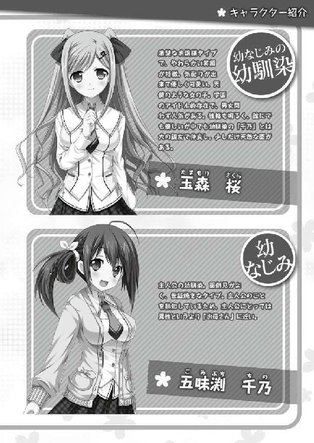
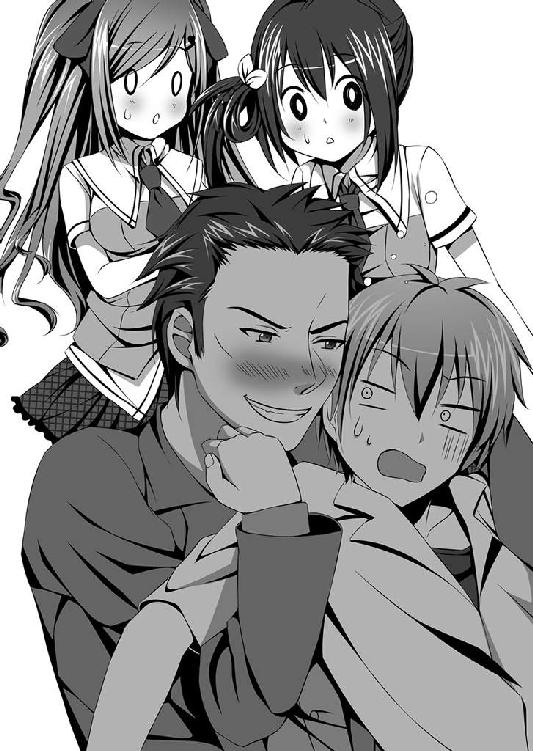

| ひとつ飛ばし恋愛 ～りさ地獄変～ (桜ノ杜ぶんこ) | |
| 糸井健一 | |
| (2015) | |
桜ノ杜ぶんこ
ひとつ飛ばし恋愛
〜りさ地獄変〜
糸井 健一

一章 再戦、地獄姉妹
学期末試験を終え、夏休みを目前に控えたある日の放課後。多くの生徒らの足取りは軽く、学園内の雰囲気はとても明るいものだった。有り体に言えば、みーんな浮かれているのだ。
それは課外活動に所属している生徒も例外ではない。テストが明けたらきびしい練習の日々が待っていようが、それでもどこか楽しい気持ちになるものだ。
しかしその部屋の空気は、ひどく張り詰めていた。相対するように並べられた長机に、それぞれ女子生徒が三人ずつ席につき、正面に座る者たちを挑むように見つめている。
「それじゃー、今年の研究会間親睦ゲームは、三人まで部外者の参加を認めるってことで」
「やむを得ないわね」
両方の長机の、それぞれ一番、黒板よりに座った生徒が言葉を交わす。ネクタイピンの色がピンクのところから、二人は最上級生であることが見て取れる。他の四人のネクタイピンは赤、二年生だ。
「でも会長、まるっきりの初心者を三人も加えたら、足を引っ張られてゲームにならないのではないですか？」
「それには私も同意見です。ここにいる六人で決着をつけられるルールに変えるべきだと思います」
それぞれ真ん中に座った生徒が、不服そうな表情を浮かべて口を挟む。
「それじゃ宣伝にならないでしょー。このまま新入会員が入らなかったら、あたしたちサバイバルゲーム研究会も、あっちのミリタリー研究会も、来年は同好会としてすら存続できなくなるわよ」
ミリタリー研究会と言われた側の最上級生が、軽く頷いて同意を示す。
「不本意ながらミリ研とサバ研は、合同することで五人以上という研究会の必要人数をクリアしている。けど私たちが卒業したら、その必要人数すら割ってしまう。ゲームに勝った研究会に得られる予算の分配は重要だけど、それも研究会が存続してのこと。新入会員勧誘に繋がる行為はどうしても必要なのだ」
「それは、重々承知しているのですが......」
「まー、気持ちは分かるけどねー。助っ人にはさ、新入会員が入った時の予行練習のつもりで接してよ」
「はい......」
それぞれの二年生は、しゅんと肩を落としながら意見を引っ込める。
「その助っ人だけど、最低一人は一年生を入れたいわね。課外活動に参加していない生徒が望ましいけど......」
「その意見に異論はないわ。けど、あんまり新入会員にこだわりすぎるとさー、見つからなくなるんじゃない？ この際、宣伝と割り切って、勧誘はしないことにしましょー。変に警戒されたら、次回以降のゲームにも悪い影響が出るしねー」
「ふむ、一理ある。たしかに焦りすぎはよくない」
サバイバルゲーム研究会会長とミリタリー研究会会長の言葉を、黒板から一番離れた席に座る生徒が、淡々とノートに書き込む。
「はい、会長。声をかけるのは女子生徒だけに限定しますか？」
「うーん、サバ研もミリ研も女子限定の同好会だし、それが理想なんだけどねー」
「女子だけで三人、両チームあわせて六人も集まるなら、そもそも新入会員がいないなんて事態にはならないわ。妥協は必要よ」
「でも助っ人が男子生徒だけじゃ、意味が無くなっちゃうからねー。男子生徒の参加は一人までに限定しとこ、パワーバランスの問題もあるし。あとミリ部とサバ部からの助っ人は禁止ってことでー」
「異論はないわ。話をまとめると、研究会間親睦ゲームは予定どおり、来週の土曜日に実施。両研究会共に三人までの部外者の参加を認める。部外者には最低一人は一年生を入れる。男子生徒の参加は一人までで、サバイバルゲーム部とミリタリー部の部員は禁止する......こんなとこかしらね」
「そうねー。付け加えると、宣伝という旨を考えれば助っ人は目立つ子がいいわ。すごい元気な子とか可愛い子とか、おしゃべりな子とかさ」
「考慮しておきましょう。それでは今日の会議はこれまで。あとは互いの研究会内で話を進めましょう」
「研究会内って言っても、お互い会員は三人しかいないじゃない。話を進めるも何も......」
「こ、こういうのは気分の問題よ！」

「経緯は、わかったけど......」
「ね、蒼木さん！ お願い、助っ人として参加してっ！ すごーく困っているのーっ！」
サバイバルゲーム研究会の会長は、蒼木夏芽に対して拝むように両手を合わせて頭を下げた。
その日、水泳部の活動を終えた夏芽は、プールから戻る途中でクラスメイトの女子に声をかけられた。彼女とはそれほど親しいというわけではないが「話がある」というのでクラスに移動して話を聞いてみれば、「どうかサバイバルゲーム研究会を助けて！」と、懇願されたのだ。
「とにかく頭を上げて......」
夏芽の言葉に、サバイバルゲーム研究会会長はゆっくりと頭を上げる。
そもそも夏芽はサバイバルゲームをよく知らない。認識としては〝男の子がオモチャの鉄砲で遊ぶ戦争ごっこ〟といったところか。必然的に、この学園にそんな研究会があることも、そして彼女が会長であることもはじめて知った。
「申し訳ないけど、私じゃ役に立たないわ。そのオモチャの......じゃなくて、競技に使う鉄砲でいいのかしら？」
「エアーソフトガンね、エアガンでいいよ」
「そ、そう言うの？ うん、そのエアガンにだって触ったことがないもの」
たしか恭次郎は、それらしい銃を持っていたが......。
「うんうん、そこんところは重々、承知の上よ。むしろ女の子でエアガンに触ったことがある人の方が少ないよねー。でもね、それを踏まえた上で蒼木さんに協力してほしいんだー」
彼女の熱意に、夏芽は自身の心がほだされ始めているのを自覚する。
「なんで私なの？ あなたとはクラスメイトだけど、ろくに話をしたこともない仲なのに......」
「そりゃあ蒼木さんがお人よ......じゃなくて、体力があって頭もいいからー......」
「今、お人好しって言いかけなかった？」
サバイバルゲーム研究会会長は、フイと夏芽から視線を逸らす。
「サ、サバイバルゲームって基本、野山がフィールド......競技場になるんだけど、並の女の子じゃ野山をずっと走ったり、ずっと隠れたりってできないのよね。あとね、勝つためには意外と頭を使うのよ。ハリウッド映画の主人公みたいに単身、敵地に飛び込んで銃を撃ちまくっていれば勝てるなんて、生やさしいものじゃないからねー。あたしの知っている人の中で唯一、条件に適っているのは、水泳部で毎日、身体を鍛えている蒼木さんだけなんだー」
彼女の言い分にも納得できる。運動部に入っていない女子では体力が持たないだろうし、運動部に入っている女子では、自身の課外活動を休んでまでサバイバルゲームに参加しないだろう。野山を走って怪我をし、所属する部に迷惑をかけるわけにはいかない。
「うーん......」
「お願いだよー」
夏芽は腕を組んで、天井を見上げる。チラリとサバイバルゲーム研究会の会長を見やると、再び拝むように手を合わせて頭を下げていた。彼女が困っていて、助けてほしいと思っているのは紛れもない本心だろう。
それに水泳部も（特に男子は）部員数はカツカツだ。実際、部長という立場の夏芽は、常に新入部員を探し求めている。部と研究会という規模は違えど、同じ責任者である彼女の焦る気持ちは痛いほど分かる......。
「分かったわ......一日だけなら協力する。だから頭を上げてちょうだい」
「ホント！ 後になって『やっぱり無理！』とか無しだよー！」
「それって、今なら『無理』って言えるってこと？」
「あっ！ 今の無し無し！ キャンセル不可！ ノークレームノーリターンでお願い！ ありがとう蒼木さん、ホンットに恩に着るわー」
サバイバルゲーム研究会の会長は勢いよく頭を上げると、夏芽の手をつかんでブンブンと上下に振る。よほど嬉しかったのか、その表情は満面の笑みを浮かべていた。もちろんこうまで喜ばれると、夏芽としても悪い気はしない。
「重ね重ね言うけど、役に立つか分からないわよ。本当に初心者なんだもの」
「うんうん、普通にやってくれれば大丈夫！ 悪くても的がわ......じゃない、きっと蒼木さんならすぐに慣れてくれるよー」
「今......的がわりって言いかけなかった？」
彼女は夏芽の手から手を離すと、机の上に置いてあった紙袋を手に取り、夏芽に差しだす。夏芽が手にとって中を見ると、そこには一丁の拳銃が入っていた。
「これはハンドガンって言われる、いわゆる拳銃型のエアガンなんだ。ベレッタって実際にある拳銃をモデルにしているんだけど......分かんないよね？」
「ベレッタ？」
夏芽はベレッタと呼ばれたエアガンを手に取る。想像よりもずっと大きく、そしてずっと重い。
「えーと、うん。拳銃の製造会社の名前。車で言えばトヨタとか日産って......」
「えっ、そこでなんで車の話が......？」
「あー、ゴメン、混乱するだけだね。ま、詳しくは興味が出たら教えるよ」
サバイバルゲーム研究会会長は、どこか困ったような苦笑いを浮かべる。夏芽は彼女が『本当はもっと詳しく語りたい』オーラを発していることをヒシヒシと感じるが......。長く語られるであろうことを予感し、それ以上の言葉を促さなかった。
「とりあえずそのエアガンを貸しておくから、扱いに慣れておいてくれないかな。取扱説明書やガス、ＢＢ弾も紙袋の中に入っているから」
「ガス？ ガスで弾を撃つの？」
「うん。結構、威力があるから、絶対に人や自分に向かって撃たないでね。弾が当たったらかなーり痛いし、万が一、目に当たったらホントに失明しちゃうからねー」
「そんなに危険なの？」
「そうだよー。だからゲーム中はゴーグルっていう目を守る防具を着用するんだ。それでも物騒なイメージは拭えないしねー。色々と悪く言われるけど......。実際に体験してみて、蒼木さんがちゃんと理解してくれたら嬉しいなー」
サバイバルゲーム研究会会長は、気まずそうな表情を浮かべる。
「たしかに、偏見を持たれやすそうな競技ね」
「あはは......」
「でも、あなたの態度はとても感じがよくって好ましいわ。少なくとも悪い印象は持っていないわよ」
「うん、ありがとー。やっぱり蒼木さんって、やさしい人だよねー」
「おだてても、何も出ないわよ......」
夏芽の脳裏に、ふと疑問が浮かびあがる。
「ねぇ、ひとつ聞いていい？」
「ひとつといわず、いくつでもいいよー」
「正直にいうと、私ってあまり人から話しかけられないし、きびしい人って思われがちなんだけど......。どうして頼み事をする気になったのかしら？」
「あははは、そうだよね。実はちょっと前まで、あたしも蒼木さんのことをそう思っていたんだけど、三枝さんとじゃれあっている所を見て、ホントはもっとくだけた人なのかなーって印象が変わったんだ」
「......甚だ不本意だけど、納得したわ。あれはじゃれあっているんじゃなくて、メグが一方的に絡んできているんだって、あなたの中の情報を訂正しておいて」
「大丈夫、分かってる。あと最近、三枝さんの弟さんと仲良くしているじゃない」
「えっ!?」
エアガンが手から滑り落ちそうになり、夏芽は慌てて柄をつかみ直す。
「そそ、そんなことないわよ！」
「今さら隠さなくていいよー。その弟さんのおかげか、蒼木さんの雰囲気がすごくやわらかくなってきてねー。こう『思い切って話しかけてみよう！』って、思えるようになったんだー。恋って人を変えるよねー」
「そう、雰囲気がやわらかく......」
はたと夏芽の動きが止まる。
「じゃ、じゃなくって！ こ、こ、恋ってなに!?」
「えっ？ 人が人を好きになることで、普通は異性間に生まれるものだけど、同性間でも......」
「そうじゃなくって！ なんで私が弟君に恋しているって話になるの!?」
「あー、うん。それは逆だよー。弟さんが蒼木さんを好きになって、徐々に蒼木さんを変えつつある......ってのが、あたしたちの分析なんだけど......」
「分析ってなに？ あと『あたしたち』ってどういうこと!?」
「うふふー、そんなに顔を赤くしてー。蒼木さんも弟さんのこと、まんざらには思ってないんだねー」
「......っ！」
言葉に詰まった夏芽は大きく深呼吸して心を静めた。心を乱されたままでの会話は、相手にいいように踊らされてしまうことを、メグとのやり取りで散々、思い知らされているからだ。
「あなたのいう『あたしたち』の中に、メグがいることは確信が持てたわ。あとメグの言い回しを真似しているってことも」
「そんなことないよー。三枝さん情報が大きいってのは、否定しないけどねー」
「やっぱり......」
「それでね、ついでのお願いなんだけど」
「えっ？ まだ何かあるの？」
ぱん！ っと両手を鳴らしながらあわせ、サバイバルゲーム研究会会長は再び深く頭を下げる。
「この四月からね、ゲームに興味を持ってくれそうな人には『研究会に入会してくれ』って、声をかけまくった後なんだー」
「状況を考えれば、それは納得できるけど......」
「でね、ゲームにはあと二人、参加してもらわないといけないの。それも一人は一年生で」
「私に......残りの二人を探してほしいっていうの？」
「もちろん、あたしも探すよー。でも、どー考えても可能性が薄そうなのー」
「呆れた......。人のあてもないのに、そんな約束をしたの？」
「これでも人数を絞ったつもりだよー。お願い、後生だからー」
サバイバルゲーム研究会会長は頭を下げつつも、ずいずいと夏芽に向かって詰め寄る。
彼女の気迫に気圧され、夏芽は知らず知らず後ずさっていた。
「わ、分かったわ、声はかけてみる......けれど、本当にあてにはしないでね。そもそも私がやったことのない競技に誘うなんて、説得力がないんだから」
「ありがとー！ お礼は必ずするからさー」
顔を上げるや、サバイバルゲーム研究会会長は夏芽に飛んで抱きついた。
「お、お礼なんて考えなくてもいいわよ。でも本当に、手伝うのはこれっきりだからね」
手慣れたようにサバイバルゲーム研究会会長を振り解く夏芽。メグのおかげで抱きつかれ慣れているし、振り解く動作も身体に染みついているのだ。
「実際にゲームに参加して、蒼木さんの心が変わることを祈るよ。それじゃぁ人捜し、よろしくねー」
「あっ、ちょっと！」
パタパタっと足音を残し、サバイバルゲーム研究会会長は小走りで教室を出ていってしまった。
「何だか、いいようにノせられた気がするけど......」
手に持っていたままのエアガンを紙袋に戻しながら、軽くため息をこぼした。
「そういえばあの人......」
夏芽は開け放たれたままの扉を見やる。
「何て名前だったかしら......？」
「来週の土曜日までなら、それほど時間はないわね......」
部室で手荷物を回収した夏芽は、校門ではなく校庭へと向かう。部室に向かう途中、トラックを走る生徒の姿が見えたからだ。
もう課外活動の時間は終わっており、陸上部をはじめとした各運動部の生徒は帰宅している。こんな時間まで残ってトレーニングをする生徒はそうそういない。そんな数少ない生徒に、夏芽は心当たりがあった。
校庭に出ると、辺り一面が夕日で真っ赤に染まっていた。トラックには夏芽の予想したとおりの女子生徒と......。
「あら？」
トラックにいたのは女子だけではなかった。スタートライン近くで、男子生徒が大の字に寝転がっているではないか。
「あの子......」
不意に先ほど、サバイバルゲーム研究会会長の口から出た言葉が脳裏をよぎる。
（弟さんが蒼木さんを好きになって、徐々に蒼木さんを変えつつある......）
「そそそっ！ そんなわけないじゃないっ！」
突然の夏芽の大声に、校庭を走る女子の足が止まる。
「キャプテーン！」
彼女は夏芽の姿を認めると、タッタッタッっと、規則正しい歩調で走り寄ってきた。夏芽は慌てて首を振って邪念を吹き飛ばし、努めて冷静な表情を浮かべる。
「お疲れ様です！」
「園原こそ、お疲れ様」
園原碧里は夏芽の前で足を止めると、ペコリと頭を下げた。
「あなた、あれだけ泳いだのに、まだ運動したりないのかしら？ オーバートレーニングは怪我の元よ。感心しないわね」
「そ、そうですね。調整のために軽く走るだけのつもりだったんですが......ちょっとムキになっちゃいました。気を付けます」
碧里は苦笑いを浮かべ、もう一度、頭を下げた。
「あの子は......メグの弟君かしら？」
夏芽と碧里の視線の先で、ヨロヨロと立ち上がる男子生徒。彼が和樹だと一目見て分かったのだが......なぜわざわざ他人行儀っぽく碧里に聞いたのか、夏芽自身も理由はよく分からない。
「はい、三枝先輩です。なぜかあたしのランニングに付き合ってくれて......。ペースを上げたら先輩も上げるものですから、気が付いたら全力で走っちゃってました」
類い希なる運動神経と、底なしの体力を持つ碧里に付き合って走ったら、いくら男子生徒でも、陸上部にでも入っていない限りああなるだろう。
「情けないわね」
そんな実状を知りつつも、夏芽はわざとぶっきらぼうに冷たい言葉を投げかける。
「そ、そんなことないですよ！ 三枝先輩、かなり頑張りました。あたしがクールダウンに入るまで、ずっとついてきましたから」
碧里の真っ直ぐな視線と言葉に、ちょっと意地悪な物言いをした自身が恥ずかしくなる。
「そ、そう、訂正するわ。運動部にも入っていないのに、たいしたものね」
「はい、あたしもそう思います。三枝先輩はたいした根性を持っています。ホント、水泳部に入ってくれればいいのに......」
一度は笑みを浮かべた碧里が口を尖らせる。そう、三枝和樹は碧里と夏芽から、幾度か水泳部への勧誘を受けているにもかかわらず、頑なに首を縦に振らなかった。夏芽は「何か特別な事情があるのでは？」と、彼の姉であるメグに話を聞いてみたのだが、彼女ははぐらかすだけで理由を教えてくれなかったが......。
「先輩は泳げないからヤダって言ってますけど、泳げないのを泳げるようにするのが水泳部なのに......」
「本人が嫌だって言っているんだもの、無理に勧誘するものじゃないわ」
「そ、それは分かっているんですけど......」
そうこう会話を交わしているうちに、ワイシャツを羽織った和樹が二人の元に到着する。
「こんにちは、蒼木先輩」
「お疲れ様。いい汗をかいたみたいね」
「おかげさまで」
手で汗を拭う和樹。夏芽は手にしていたスポーツバッグを地面に降ろすと、中からタオルを取出し、和樹に差しだした。
「これで汗を拭きなさい。いくら夏でも、そんなに汗を流したままじゃ身体を冷やしてしまうわ」
「あっ、いえ、この程度の汗、全然問題ないッス」
「遠慮しないの」
たじろぐ和樹に、夏芽は詰め寄って強引にタオルを手渡す。
「大丈夫よ、まだ未使用のタオルだから安心して使って」
「ど、どうも......」
「三枝先輩っ、気が回らなくて申し訳ありません！ 次の機会には、あたしがタオルを用意してきますから、是非、使って下さい！」
心なし、寂しそうな表情を浮かべた和樹に、碧里は何か思うところがあったようだ。
「いや、うん。自分で用意してくるよ。たしかに今の季節はタオルくらい持っていた方がいいかもしれないし」
「私もその方が良いと思うわ」
「いえ！ あたしに付き合って汗をかいたときは、どうかあたしのタオルを使って下さいっ！」
「こ、このタオル、洗って返しますね。あっ、未使用なら買って返した方がいいのかな？」
「洗ってくれれば十分よ。洗い終わったら、メグか恭次郎に渡して」
「わかりました」
「せーんぱーい、無視しないでくださいよー」
「どうも園原は、三枝君のことになるとムキになる所があるわね。さっきだって、つい本気で走ったって言ってたし......」
「そ、そんなことありませんよ！ ねっ、三枝先輩!?」
碧里の言葉に、和樹は困ったような苦笑いを浮かべる。
「ひょっとして園原は、三枝君に気が......」
（弟さんが蒼木さんを好きになって......）
夏芽はそこまで言いかけたところで、再び脳裏にサバイバルゲーム研究会会長の言葉がよぎった。
「う、うるさいっ、うるさいっ！」
「えっ!?」
「はっ!?」
突然、大声を上げて手の平を振り出した夏芽に、碧里と和樹は目を丸くする。
「ご、ごめんなさい。ちょっと耳元に......そう、蚊が飛んできたから！」
「蚊？ そ、そうですか、ちょっと驚きました」
「こ、こんな時間ですから、蚊も出てきますよね。それじゃあ、あたし着替えてきます。キャプテンも三枝先輩も、気を付けて帰って下さい」
お辞儀をした後に背を向け、小走りでその場を去ろうとする碧里。
「あっ、待って園原！」
「えっ？ はい」
立ち止まり、くるりとふり返る。
「ちょっと話があるんだけど、この後、予定は空いているかしら？」
「大丈夫ですけど......」
碧里がチラリと空を見上げる。先ほどまでオレンジ色だった空は既に薄暗く、遅い時間となったことを物語っている。
「ごめんなさい、もう遅いわね。私が悪かったわ。明日、水泳部の活動が終わったら時間を取ってくれるかしら」
「分かりました、お気遣いありがとうございます。ではまた明日！」
時折、ふり返って手を振りながら、碧里は水泳部の部室へと走って行った。
「それじゃあ、俺も帰りますね」
「あら、弟くんは園原を待ってあげないの？」
「えっ？ そ、そうですね。危ないですし、一緒に帰った方がいいですよね」
ばつの悪そうな笑みを浮かべる和樹。
「そうしてあげてちょうだい。それじゃあ、園原をよろしくね」
「蒼木先輩も気を付けて」
手を振り、別れる夏芽と和樹。校門に差し掛かる前に今一度、夏芽が校庭へとふり返る。そこにはポツンと、所在無げに立ちつくす和樹の姿があった。
どうも和樹には、碧里に対してその気はないように見える......。
「園原の一方通行......なのかしら？」
「サバイバルゲーム......ですか？」
「ええ。サバイバルゲーム研究会とミリタリー研究会が、サバイバルゲームの試合......なのかしら？ とにかく競い合いをするのだけど、人数が足りないので手伝ってくれって頼まれちゃったのよ」
「ウチの学園に、そんな過酷な研究会があったんですね」
水泳部の活動が終わった後、部室で合流した碧里と夏芽は「部室は蒸し暑いから」と、駅前のファーストフード店へ移動。四人がけのボックスシートで向かい合い、冷えた飲み物を片手に言葉を交わしていた。
「過酷かしら？ たしかに物騒なイメージはあるけど......」
「過酷ですよ！ だってふたつの研究会がサバイバルの勝負をするんですよね？ きっと無人島かどこかに、食料も無く放り出されて......」
「冗談を言ってる訳じゃ......ないみたいね」
彼女の表情は至って真剣だ。どうやら碧里は本気で『サバイバルゲーム』を、文字どおりの『生き残りゲーム』と思っているらしい......。
「園原なら生きのびられるかもしれないけど、普通の女の子には無理よそんなの......」
夏芽は昨日のサバイバルゲーム研究会会長との会話と聞きかじった知識で、サバイバルゲームとはなんなのかを説明する。
「えーと、つまり武器だけ渡されて、食料も無く猛獣うごめく無人島に......」
「過酷さがパワーアップしているわよ！ 私の説明の仕方が悪かったのかしら......。もう一度説明するから、とりあえず無人島から離れてちょうだい」
再度、夏芽は碧里に説明を試みる。小学生でも理解できるよう、丁寧にかみ砕いて......。
「分かりました。難しすぎて熱が出そうですが、そのサバイバルゲーム研究会とミリタリー研究会が、刑事ドラマみたいに鉄砲で撃ち合いするんですね」
「概ね、そうなんだけど......。熱が出そうなくらい難しかったかしら......」
夏芽は自身の説明する力に疑問と不安を覚え、小首を傾げる。
「でも、面白そうですね。あたしも刑事ドラマは好きですよ。こう、バンバーン！ 『なんじゃこりゃぁーっ！』って」
「撃たれちゃってるじゃない......。でも面白そうって思ってくれたのなら話は早いわ。園原にも参加してほしいのだけど、来週の土曜日は空いているかしら？」
「来週の土曜日は、プールのメンテナンスで水泳部はお休み......ですよね。なら大丈夫です。私、基本的に部がないときはヒマですから。それで、どんな所で遊ぶんですか？」
「私の予定も似たようなものだけれど、言葉にされると、それはそれで寂しいわね......。ま、いいわ。『野山を走って』って言ってたから、どこかの山だと思う。あと一応、競技みたいだから『遊ぶ』とか言わないでね」
「そ、そうですね、すいません」
タイミングをあわせて飲み物を口にする夏芽と碧里。
「それでね、サバイバルゲーム研究会の会長から、もう一人、参加者を集めてくれって頼まれているのよ」
「もう一人、ですか？」
「誰か心当たり、ある？ 園原ほどじゃなくても、体力がある人がいいのだけど......」
「えーっと、あたしも水泳部のみんな以外だと、それほど親しい人はいなくて......」
「そうよね......」
二人は腕を組み、考え込む。
「紅は......聞くまでもなく無理だろうなぁ......。あっ！」
碧里が何気なく窓の外に視線を向けると、そこには駅に向かって歩いている和樹の姿があった。碧里の反応に、夏芽もまた窓の外に視線を向ける。
「あら、メグの弟君」
「ちょっとあたし、声をかけてきますね」
「えっ？ 園原、なんで!?」
夏芽が呼び止める間もなく、店の外に飛び出していく碧里。駅前で和樹に声をかけると、そのまま店の中に連れてきてしまった。
「こんにちは、蒼木先輩」
笑顔を浮かべ、軽く会釈をする和樹。
「ごめんなさい、園原が急に呼び止めちゃったみたいで......」
夏芽は碧里の服の袖を引き、自身の隣に席を移すよう指示。和樹には、それまで碧里が座っていたシートに座るよう促した。
「いえ、ちょうど俺も蒼木先輩に用があったので......」
「私に？」
和樹はカバンからタオルを丁寧に取りだすと、夏芽に差しだす。
「昨日はありがとうございました」
「えっ、もう？ だって昨日の今日よ？」
「はい。昨日、先輩と園原が、水泳部が終わった後に話をするって話だったじゃないですか。だから一度、家に帰って持ってきたんです。それで水泳部の部室にうかがったんですが、もう誰もいなくて......」
「ああ、だから部に入っていない三枝君が、こんな時間に駅に向かっていたのね」
夏芽は笑みを浮かべ、タオルを受け取る。
「わざわざありがとう、別にいつでもよかったのに」
「俺も先輩はそういうつもりだろうって思ったんですが、やっぱり早く返した方がいいと思って。あと家に先輩のタオルがあるって姉ちゃんに知られたら、何を言われるか分かったもんじゃありませんし......」
夏芽の脳裏に、意地悪な笑みを浮かべたメグの顔が思い浮かぶ。
「それは......そうね。かえって気を使わせちゃったみたいね」
「あはは、規格外の姉ですいません」
苦笑いを浮かべる夏芽と和樹。碧里もメグとは面識があるが、そこまで気心は知れていないため、一人、不思議そうな表情を浮かべていた。
「でも珍しいですね。先輩と園原が、ファーストフード店に一緒にいるなんて」
「今日は特に気温が高かったでしょ。部室の中は蒸し暑くて......それでここに逃げてきたのよ」
「部が終わった直後は、みんな髪とか濡れていますし、部室はどうしても湿気が溜まるんです」
「なるほど」
「そうだ、三枝先輩ってサバイバルゲームって興味がありますか？」
「サバイバルゲーム？」
「はい。別に本当にサバイバルをするゲームじゃありませんよ」
「知ってるよ。っていうか、そんな勘違いをするやつなんて、いるのか？」
今さっき、知った知識を得意に語る碧里は、即座にカウンターパンチを食らってしまった。
「いるわよ、そこに」
夏芽は意地の悪そうな笑みを浮かべ、碧里を指さす。
「ちょっ、キャプテン！」
「えっ、マジ!? だからそんなドヤ顔でサバイバルゲーム云々って言い出したのか？」
「そう。つい今さっき知ったばかりだから、人に言いたくて仕方がなかったのね」
「あうう、ごめんなさい。あたしが調子に乗りすぎました、もう勘弁して下さい」
深々と頭を下げる碧里に、夏芽と和樹の表情が綻ぶ。
「いや、勘弁も何も、別に怒っちゃいないけどさ。サバイバルゲームね、男子校にいた時に、何度か遊んだことがあるぜ」
「そうなの？」
和樹の言葉に、夏芽が意外そうな表情を浮かべる。
「三枝君はそういったアウトドアな遊びや、身体を動かすスポーツには興味がないって思っていたわ。もしかして転校してくる前は、何かの部活動に入っていたのかしら？」
「いえ、入っていません。向こうにいた頃は、親父と二人で暮らしていたんです。それで親父の面倒を見なきゃいけなかったので、部活動に入っている余裕はありませんでした。家事は一切、できない親父だったので......」
父親である薫のことを語るのは少し気恥ずかしいのか、和樹はどこか困ったような苦笑いを浮かべる。
「先輩、意外に苦労しているんですね」
「いや、そうでもないさ。家事も慣れると楽しいぜ。たしかに平日は不自由だけど、週末は遊ぶことができたし」
「そうだったの。三枝君って恭次郎みたいな軟弱な子かと思っていたけど、少し見直したわ」
「いえ、俺、十分に軟弱ですよ。それで、なんでサバイバルゲームの話をしていたんですか？」
「話すと長くなるから飲み物でもどう？ ドリンクバーだけど、軟弱だと思っていたお詫びに私がオゴるから」
「あっ、いえ、それくらい払いますよ。借りたタオルを返しにきてオゴってもらったんじゃ、悪いですって」
「いいのよ。話次第じゃ、三枝君にも協力してもらうかもしれないし」
「俺が協力ですか？」
三人がグラスに飲み物を注いで席に着くと、あらためて夏芽はサバイバルゲームをすることになった経緯を説明する。
「へえ......。サバ部とミリ部があるのは知っていたけど、女子生徒限定のサバ研とミリ研なんてあったんですね」
「ええ。丸々二年間以上、学園に通っていた私も知らなかったんだもの、三枝君や園原が知らなくても無理ないわ」
「それで、俺が協力するっていうのは？」
「そのサバイバルゲームに、三枝君も参加してもらいたいのよ」
「ええっ!? だってサバ研とミリ研のゲームですよね。さっき、女子限定って聞きましたけど？」
「そうなんだけど、そのサバイバルゲーム研究会会長から『一年生を一人は誘ってほしい』とは聞いたけれど、『男子はダメ』とは聞いていないのよ。実際のところは明日、確認してみるけど、もし男子でもいいんだったら協力してくれないかしら。来週の土曜日なんだけど」
「けっこう急ですね」
「都合悪い？」
「いえ、大丈夫です。面白そうですし、可能なら参加させて下さい」
「ありがとう、経験者が入ってくれると心強いわ」
「ありがとうございます先輩！ 断らない人って頼もしいから、人気が出ちゃいますよ！」
「そうかな？」
「もちろんです、だからそのまま水泳部にも入部しちゃいましょう！」
「それは拒否する！」
「むーっ、頼もしくないっ！」
「園原、少し前に無理強いはするなって言ったわよね」
むくれた顔で、更なる説得を試みようとする碧里を夏芽が止める。
「先輩なら、流れで入部してくれると思ったんですが......」
「やっと男子校から解放されたんだ。当分、男だけの世界には近づきたくないな」
「それが三枝君が水泳部に入らない本音？」
「なんとなく納得できそうな、できなさそうな理由ですね......」
「あ、や......。勢いで口にしただけなので、そう真に受けないで下さい......」
場の空気を変えるべくと、和樹はコップに残っていたドリンクを一気に飲み干す。碧里も夏芽も、それ以降は和樹に入部を促す話題を口にすることはなかった。
「それじゃあ話もまとまったし、今日はお開きにしましょう。三枝君には参加できようができまいが、明日、私の方から連絡を入れるわね」
「何でしたら俺の方から水泳部にうかがいましょうか？」
「いいわよ。私用で部外者を入れたら、職権乱用になっちゃうわ」
「そうですか、じゃぁ連絡をお待ちしています」
和樹の携帯に夏芽から連絡が入ったのは、その日の夜のことだった。
偶然、サバイバルゲーム研究会会長と連絡が取れたので和樹のことを確認したところ、参加には問題なし。むしろ和樹に対して「経験者ならば是非、協力してほしい」と、伝言を受けた旨を伝えられた。
「『経験者ならば』なんて、プレッシャーを感じちゃいますね。遊びでやっただけなのに......」
「三枝君がどの程度の腕前かは分からないけど、それでも私や園原よりは、ずっと役に立つと思うわ。私なんて、何をすればいいのかも分かっていないもの」
「蒼木先輩、エアガンを撃ったことありますか？」
「ないわよ。園原もないと思う」
「照準の合わせ方って、知ってます？」
「ごめんなさい、その『しょうじゅん』って言葉の意味から分からないわ......」
無意識に和樹の左腕が額を抑える。
「それは......。最低限、エアガンを扱えないと、ちょっと危ないかもしれません」
「そうかもしれないわね......。サバイバルゲーム研究会会長から、エアガンを渡されているわ。ベレッタとか言ったかしら」
和樹の頭の中で、ベレッタがどのような拳銃かが思い浮かぶ。
「先輩の手には大きくて、ちょっとかさばるかも知れませんね」
「えぇ、重いわね。あとエアガンの危なさも聞いていて、『取り回しに慣れておいてくれ』って言われたのだけど、正直、何をどうすればいいのか分からなくて......」
「あの、もし先輩がよければ、少し練習しませんか？ 撃てる場所は、そのサバ研の会長さんに聞けば分かるでしょうし。最低限のことなら、俺でも教えられますから」
「そんなの悪いわ」
「いえ、もし万が一、先輩や園原にケガでもされたら俺、すっごく後悔すると思うんで」
「ありがとう......。じゃぁお言葉に甘えて、少し教えてもらえる？ その場所のことと園原への連絡は、私の方からするから」
「分かりました。じゃあ都合がついたら連絡をお願いします」
「悪いけど、よろしくお願いね」
ピッ！
携帯の受話ボタンを押して電話を切る。
「やった！」
別段、その気は無かったのだが、思いがけず夏芽や碧里と一緒の時間を過ごすことができることとなり、和樹は小さくガッツポーズを取る。
「ふふん、和樹君、嬉しそうだねー」
「そりゃあもう！」
「敬語を使っていたところをみると、デートの相手は夏芽さんかなぁー？」
「いやー、デートってほどのことじゃあ......って!?」
和樹が慌ててふり返ると、そこには意地の悪そうな笑みを浮かべたメグが立っていた。
「どわぁぁぁっ！ 姉ちゃんっ！」
「デートじゃないっていうなら、何なのかな？」
「そそ、そんなのどうだっていいだろ！ それにここ、俺の部屋！ なんで姉ちゃんがいるんだよ!?」
「いやー、ご飯だから呼びにきたんだけど、いっくら呼んでも返事がないからさぁー。あっ一応、部屋に入る前はノックしたからね」
「ぐっ......」
「いやー、和樹君と夏芽さんが仲良く電話をする間柄に発展していたなんて、知らなかったよ。二人とも僕と親しいはずなのに黙っているなんて、水くさいなぁ」
「姉ちゃんが思っているような間柄じゃねえよ！」
「そうなの？ なら電話でどんな話をしていたのか、教えてくれてもいいんじゃないかなー。たいした話じゃ、ないんだよねー？」
「ゆ、夕飯に呼びにきたんだろ!? さっさとダイニングにいこうぜ！」
「おおっと」
和樹は逃げるようにメグの脇をすり抜け、部屋から出る。
（別段、話しても構わない事柄だとは思うが......）
へたに告げたら、「僕も和樹君のエアガン講座に参加するー」とか言い出しかねない。
「先輩や園原に迷惑をかけることだけは避けないと......」
言葉に詰まった和樹は、逃げるように部屋から出ていく。
「うふふっ、和樹君が話してくれないならいいよーだっ。自分で調べるだけだからね」
メグは自分の心の中に、ワクワクとしたものが溢れてくるのを自覚する。
「いいねいいね、なんだか楽しくなってきたよ」
放課後は夏芽も碧里も水泳部の練習がある。そのため、和樹君のエアガン講座は昼休みに行われることとなった。
「お邪魔します」
「どうぞ、どうぞー」
サバイバルゲーム研究会の会長に指定された部屋は、学園の最上階にある視聴覚室だ。
訪れた和樹たちを会長は笑顔で出迎えた。
「みんな、この度は協力してくれてありがとうね」
会長がペコリと頭を下げる。
「それじゃあ、昼休み中はこの部屋を自由に使っていいから。シューティングレンジはあそこね。といっても部屋そのものが狭いから、たいしたゼロイン調整はできないけど」
会長が指さした先には、部屋の一辺が暗幕で覆われた空間があった。
「キャプテン......『しゅーてんぐれんじ』って何ですか？」
「さ、さぁ......電子レンジの一種かしら？」
会長の発した言葉の意味が分からず、鳩が豆鉄砲を食らったような表情を浮かべる。つい専門用語を使ってしまったことに、会長は苦笑いで応えた。
「ごめんねー。この部屋にいるとつい、いつもの調子で喋っちゃうからー」
「だ、大丈夫です。蒼木先輩たちには俺から説明しますんで......」
「そう、ありがとう。君が経験者っていう、三枝さんの弟さんだね」
「あれ？ 姉ちゃんを知っているんですか？」
「知っているも何も、同じクラスだよー。尤も向こうはあたしを覚えているかどうかは分からないけどねー。なんせ地味だからー」
「なんかすいません......」
会長の頬を伝う心の涙が見えた気がして、和樹は深々と頭を下げた......。
「それじゃあ、あたしはやらなきゃいけないことがあるから、ここで失礼するねー。蒼木さん、終わったら施錠をお願いねー」
「分かったわ......」
夏芽が何かを言いかけ、口ごもる。そんな夏芽の態度を、会長は特に気にした様子はなく部屋を出ていった。
「蒼木さん、今、何を言いかけたんですか？」
「その、とても言いづらいんだけど......」
申し訳なさそうな表情を浮かべる夏芽。
「彼女の名前が出てこなくて......。何度か聞こうと思ったのだけど、どうしても聞きそびれちゃっているのよね」
「キャプテンでもそんなことってあるんですか？」
「地味っていうか、根本的に何か問題がありそうな人ですよね......」
「じ、時間もないし、早く練習をしましょう」
夏芽はスポーツバッグの中から、サバイバルゲーム研究会会長より借り受けたエアガンセット一式を取りだす。
「わーっ、鉄砲って想像よりも大きいんですね」
「ガスガンタイプですね」
和樹はエアガンとガスボンベを手にすると、エアガンひっくり返し、注入口からガスを充填する。
「この手順を覚えておいて下さい。ゲーム中、エアガンの中のガスが無くなったら、こうやって補充します」
「へーっ......三枝先輩、手慣れてますね」
「ま、こういった遊びは、男の子の嗜みみたいなものだから」
マガジンの出し方から弾の補充方法まで、和樹は一通りの手順を見せる。
「さっ、これで射撃の準備ができました。ここの部分は安全装置になっていて、解除するまでは引き金を引いても撃てないようになっています。ゲームが始まるまでは、入れたままにしておいて下さいね」
和樹は立ち上がると、先ほどシューティングレンジと呼ばれていた場所に歩み寄る。
「シューティングレンジは撃っていい場所って覚えておいて下さい」
両脇から天井まで、暗幕で囲まれた狭い空間の先には、円形の標的が貼られていた。
「とりあえず、あの的を狙います......」
エアガンを両手で構える和樹。夏芽と碧里は緊張した面もちで、和樹を見守る......。
バスッ！ バスッ！
圧縮された空気が解放される音と、機械的な作動音が重なる。
和樹が息を吐きながらエアガンを下ろすと、つられて夏芽たちも大きく息を吐いた。
「思っていたよりも静かというか、バーン、バーンって鳴らないんですね」
「火薬じゃなくって、空気の圧力で撃つからね」
「エアガンって、撃つと動くのね」
「はい、このエアガンには実際の拳銃の動作を再現する機構がついています。ついていないエアガンもありますよ」
「でも先輩、的に当たってはいますが、真ん中に当たってませんよ」
碧里の指摘に、夏芽と和樹の視線が的に集中する。的の中央ではなく、下部に小さな穴が空いていた。
「中央に当てるのって、難しいのかしら？」
「いえ、この程度の距離なら、そう難しくありません。これを当てられるよう調整するのが、ゼロイン調整ってやつです。とはいえ、このエアガンにはサイト......照準機を調整する機構がついていませんから、勘と感覚の調整ですね」
「勘と感覚？」
「はい」
和樹は再び両腕でエアガンを構える。
「俺は先ほど、このエアガンの照準機を使い、的の真ん中を狙って撃ちました。それが下に命中したのなら、今度は少し上を狙って撃ちます」
バスッ！ バスッ！
夏芽と碧里が、的を凝視する。今度は的の中央から、やや左に小さな穴が空いていた。
「当たったのは的の中央から左で、上下はおよそ合っています。ほんのちょっと右を狙います」
バスッ！ バスッ！
発射音と同時に、的の中央にある円の中に、小さな穴が空く。
「とまぁ、こんな感じです。俺がこのエアガンを使うなら、弾を当てたい個所の若干、右上を狙うと当てやすくなるということです」
和樹が構えを下ろし、夏芽と碧里の方へと振り向く。
「すごい！ 先輩すごいです！」
「じゃぁ今度は......」
和樹が夏芽か碧里のどちらかと交代しようとすると、二人が弱気な笑みを見せながら、視線を合わせている。お互い「どうぞ、どうぞ！」と先を譲り合っている感じだ。
「蒼木先輩、撃ってみて下さい」
「えっ!? 私!?」
「はい、年功序列です」
「その言葉は、こういうときに使うものじゃないわよ......」
「そうですよ、キャプテンを差し置いて、あたしが挑戦するわけにはいきません！」
「調子のいい......。後で覚えておきなさい」
恐る恐る、差しだされたエアガンを受け取る夏芽。和樹と場所を交代し、先ほどの和樹の姿勢を見よう見まねで真似する。
「あっ、構えはいい感じですね」
「キャプテン、格好いいですよ！」
「照準って、どう合わせるのかしら？」
「エアガンの銃口......先端の上部に出っ張った所と、お尻の上部に凹んだがところがありますよね。この凹凸が重なって一枚の板状に見えたら、ガスガンは真っ直ぐ視線の先を向いています」
「こう......かしら？」
「とりあえず的に向かって撃ってみてください。悪いところがあったら指摘しますんで」
「わ、分かったわ......」
感覚で的に狙いをつけて......。
「えいっ！」
バスッ！
的を貼り付けてある黒幕は動いたが、的に新たな穴が空くことはなかった。どうやら的から大きく外れてしまったらしい。
「こんなに外れるものなの？」
「先輩、力みすぎです。引き金を引く瞬間、銃口が上を向きました。もっと手の平全体で、引き金とグリップを一緒に握る感じで......」
和樹は夏芽の背後に回り、抱きつくような体勢となって、夏芽の手の上に自身の手を添える。
「ちょっと三枝君！」
「さ、三枝先輩!?」
「左手はこう、下からグリップの底を支えるように添えると、狙いが安定しますよ」
振り向き、何か言おうとした夏芽だが、和樹の目が自身ではなく的を見ているのを悟ると、彼女自身も的へと視線を戻した。
「......こ、こう？」
「はい。目は両方、開けておいた方がいいといいますけど、よほど慣れてるか器用な人でないと無理だと思います。ゆっくりと息を吐きながら、右手全体を握るようにして引き金を引いて下さい」
「......」
バスッ！
今度は的の右上に穴を空けることができた。
「あ、当たったわ......」
「いいですね」
「三枝先輩って......」
どこか呆然とした顔で、碧里が口を挟む。
「うん？」
「夢中になると、ずいぶんと大胆になるんですね？」
「大胆？ ......ああっ!!」
和樹は今さらながら自身のしでかしていることに気が付き、飛び退くようにして夏芽から離れた。
「す、すいませんっ！」
「き、気にしなくていいわ。レクチャーを頼んだのはこっちだし、その、邪な心は感じなかったから......」
夏芽はふり返って和樹を見ることなく、的を見続けながら話す。
バスッ！ バスッ！
和樹はエアガンを撃ち続ける夏芽の背後からそっと離れ、碧里の隣へと移動した。
「なぁ、蒼木先輩、こっちを向いてもくれないんだけど......ホントはすげえ怒っているのかな？」
「それは......分かりません。すごく怒っているようにも見えますし......」
夏芽に聞こえないよう、囁くような小声で会話する和樹と碧里。
「見えますし??」
「怒っていないというか、むしろ......いえ、なんでもありません......」
「なんだよ、その言い方......気になるじゃねえか......」
「三枝君、弾が出なくなっちゃったんだけど......？」
「は、はいっ！ おそらく弾が切れたものと思われるでありますっ！」
その後、何度か和樹からの指摘と助言を受けることで、夏芽は安定して弾を的に当てられるようになった。
「もう、昼休みは終わりですね。園原の練習は明日かな」
「そうですね」
「ふう......。思っていたよりも難しいのね......」
悔しそうな表情を浮かべ、ガスガンを見やる夏芽。
「でも、ゲーム中は相手の身体のどこに当ててもいいんですから、精度は現状で十分ですよ」
「そういうものなの？」
「はい、いくら銃の腕前がよくても、動く相手にはなかなか当てられません。相手に気付かれないよう近づくにはどうすればいいのか？ 相手から近づいてもらうには？ 動く相手が足を止める場所は？ そういったことを考える方が重要になります」
「ありがとう、勉強になるわ」
「先輩、エアガンを渡してもらっていいですか？」
和樹はエアガンを受け取ると、残っていたガスを抜き、マガジンから弾を抜く。
「その手順も覚えておくわ」
「姉ちゃんたちとＦＰＳゲームで遊んだ時も思いましたけど、先輩って負けず嫌いですよね」
ぴくっ！
ほんの一瞬だが、夏芽の表情が強ばり、口元が引きつる。過去、夏芽は和樹の家に遊びに行き、メグや紅も交えてＦＰＳというサバイバルゲームによく似たビデオゲームをしたのだが、いいようにメグや紅に弄ばれてしまった過去がある。どうやら和樹の言葉で、その時に受けた屈辱を思い出してしまったようだ......。
「そ、そうかしら？」
「あははっ。先輩の言うとおり、キャプテンはすっごく負けず嫌いですよー」
「園原、余計なことを言わない」
夏芽の声は一見、穏やかなものに聞こえるが......聞く者を戦慄させるほどの威圧感を含んでいた。
「す、すいませんっ！」
「もう......。別に誰に対しても負けず嫌いなわけじゃないわ。なんていうか......メグは特別なのよ。三枝君の前で言うのも悪いけど、あの子はすぐに人をからかうから......。どうしても負けたままで終わると、悔しさが残っちゃうのよね」
「その気持ち、よく分かります......」
昼休みの終了を告げる予鈴が響く。
「っと、のんびりしている場合じゃないわね」
夏芽は慌ててエアガンをカバンにしまい、碧里と和樹は散らかっているＢＢ弾を拾い集めた。
視聴覚室を出て、扉にカギを閉める夏芽。
「それじゃぁ三枝君、今日はありがとう。また明日、この視聴覚室の前で」
「三枝先輩っ、明日はよろしくお願いします」
「それじゃ、また明日！」
「かーずきくーん！」
学園から帰宅し、玄関の扉を開けた直後......まるで和樹の帰りを待っていたかの様に、メグがダイニングから飛び出してきた。
「わっ、姉ちゃんっ!? た、ただいま......」
「お帰り、和樹君！ あのさー、ちょっと聞きたいんだけどー」
「姉ちゃん、また何かくだらないこと企んでない？」
靴を脱ぎ、ダイニングへと移動する和樹。メグは和樹の後ろを付いて回る。
「企んでいるなんて、人聞きが悪いこと言うなぁ。僕は悲しいよ」
「姉ちゃんがその顔をしているときは、大概、何か企んでいるんだよ」
「ふふふっ、まあいいや。それより今日の昼休み、教室にいなかったみたいだけど、どこに行ってたんだい？」
「は？」
別にやましいことをしているわけではないのだが、和樹の心臓がはね上がる。
「べ、別にどこだっていいだろ？ それよりなんで俺が教室にいなかったって、知っているんだよ」
「あっ、やっぱりいなかったんだ。夏芽さんも教室にいなかったから、ひょっとしたらって思っていたんだけど、さては一緒だったんだね？」
「ぐっ......」
和樹の反応に、メグはますます嬉しそうな笑みを浮かべる。
「お帰り、兄者。ほう、兄者は昼休み、夏芽殿と一緒だったのか。てっきりわらわは碧里と一緒かと思うとったのだがな......」
ダイニングのソファに座って雑誌を読んでいた紅が、顔を上げて和樹を見やる。彼女の表情もまた、メグ同様にどこか意地の悪そうな笑みを浮かべていた。
「俺が昼休みをどこで、誰と過ごしたって、二人には関係ないだろ！」
「可愛い妹に向かって、なんとつれないことを言うのじゃ」
「ねぇねぇ、和樹君さあ。ひょっとして僕たちに内緒で、何か面白いことを企んでない？」
再び和樹の心臓がはね上がるが、今度は態度に出すことはなかった......と、思う。
「面白いことってなんだよ？ ひょっとして俺と蒼木先輩と園原で、こっそり姉ちゃんたちを招くパーティの準備でもしてるっていうのか？」
「ベタなアメリカンジョークじゃのぉ。ＨＡＨＡＨＡとでも笑ってほしいのかえ？」
紅が小馬鹿にした表情を浮かべ、これ見よがしにため息をこぼす。
「う、うるせーっ！」
「あはははっ！ 和樹君最高！ 僕はそういったジョーク、大好きだよ」
「なんか悲しくなるからウケないでくれよ！」
和樹は二人の元を離れてキッチンにはいると冷蔵庫から麦茶を取りだし、コップに注ぐや一気に飲み干した。
「じゃあ俺、勉強するから」
「勉強？ テストも終わったのにか？ 兄者はいつからそんな勉強熱心になったのじゃ？」
「つ、追試があるんだよ！ それこそ放っておいてくれ！」
「ありゃー、それは大変だ。勉強、頑張ってねーっ」
変わらず、ニヤニヤとした笑みを浮かべる姉妹を後目に、和樹はダイニングを出て自室へと向かう。
「姉ちゃんたち......ぜってー何か感づいているよな......」
これから起こるであろう一波乱の予感に、和樹は大きなため息をこぼすのだった......。
土曜日の早朝、和樹は携帯の呼び出し音で目を覚ます。液晶画面に表示された発信者の名前は......。
「蒼木......先輩？ あ、おはようございます」
「おはよう。ゴメンね、早くに。サバイバルゲーム研究会の会長から、ルール変更の連絡があったので伝えるわね......」
「ルールの変更ですか？」
和樹は目を擦りながら、ベッドから起きあがる。
「えぇ、なんでも初心者へのハンデで、エアガンを使わないことにしたんですって」
和樹の頭上に、大きな疑問符が浮かびあがる。
「は？ サバゲーでエアガンを使わない？ それってどういう......」
「私にもよく分からないんだけど、私用する銃は彼女たちの方で用意するから、持ってこなくてもいいって話よ」
元より和樹らはエアガンを借りる予定でいたので、用意などしていないのだが......。
「それで、学園指定の体操服と着替えを用意してきてほしいって言うんだけど......」
「体操服？」
和樹の頭上に、無数の疑問符が浮かびあがる。
今の時期なら上半身は白い半袖、下半身はジャージ。女子なら下半身はクオーターパンツ。それらが和樹らの学園指定の体操服姿となる。
いくら何でも野山に白い体操服では、目立ってしょうがない。
「それ、本当にサバイバルゲームなんですか？」
「分からないけど......とにかく、言われたとおりに用意しましょう。彼女が私たちをだましたり、からかったりする理由なんてないんだもの」
「それはそうですが......」
電話を切り、顎に手を当てて考え込む和樹。
ルールの変更は分かる。ルールの変更は分かるが......エアガンを使わないことと、体操服を用意しろというのが分からない。
「いったい、どういうことだ？」
着替え、小首を傾げながらダイニングへと向かう和樹。ダイニングではさちこが朝食の準備をしていた。
「おはよう和樹。今日はお休みなのに早いわね」
「おはよ、お袋」
「ひょっとしてデート？」
「今日は出かけるけど、そんな色っぽいものじゃないよ......あれ？」
テーブルの上に、既に食事の済んだ皿やカップが三人分。
「あら、ごめんなさい。今すぐ片付けるわね」
「お袋、もう朝飯食べたのか？」
「まだよ。このお皿はお姉ちゃんと紅ちゃん、そして薫さんの分よ」
さちこは三人分の食器を手に取り、シンクへと運ぶ。
「姉ちゃんはともかく、紅は休みとなればいつも昼まで寝ているのに？」
「和樹も人のこと言えないじゃない」
「そりゃあそうだけど......それで二人は？」
「もう出かけたわよ。薫さんに送られて、車でね」
正体の分からぬ不安感が、和樹の胸中で大きく膨らむ......。
最寄りの駅前で合流した和樹と碧里、そして夏芽は、集合場所として指定された駅へと向かう。
移動時間はおよそ一時間ほど。時間が経つにつれ、車窓の景色に緑が増え始める。
「あたし、郊外に出るの久しぶりなんです。楽しみですね」
「そうね。サバイバルゲーム研究会やミリタリー研究会の人たちには悪いけど、私たちは楽しみましょう」
「何事もないといいんですが......」
ついポロッとこぼれた本音が、碧里と夏芽の心に水を差す。
「す、すいません。ネガティブなことを言うつもりじゃなかったんですが......」
「どうしたんですか三枝先輩？ 今日は朝から浮かない顔をしていますよ。話をふっても、どこか心ここにあらずって感じですし......」
「どこか調子でも悪いの？」
「いえ、調子は万全です。ただちょっと......」
「ちょっと？」
「姉ちゃんたちが......」
和樹の言葉に、夏芽が真顔となった。
「出かける際に、メグから何か言われたのかしら？」
「いえ、俺が起きたときは、もう外出していたんですよ。だからどうというわけではないのですが、どうにも昨日まで色々と思わせぶりなことを言われたというか......」
「そう......」
「キャプテンもどうしたんですか？ 急に怖い顔になっちゃって......」
「実は私も、三枝君と同じようなものなの。昨日、メグから電話をもらったのだけど、妙に色々と思わせぶりなことばかり言われたのよね」
「すごく......嫌な予感がしませんか？」
「えぇ......するわ。ものすごくね」
「ちょっとお二方とも、なに死亡フラグ的なこと言ってんですか！ これから本当の戦場に行くわけじゃないんですよ！」
その後、和樹は意識してメグのことを考えず、明るく振る舞って談笑しながら移動時間を過ごす。
二度ほど列車を乗り換えて到着した駅は、田舎の無人駅だ。
「セミの声が大きいですねー」
空を見上げれば、不思議と青空の色が濃く感じる。
古い駅舎には不釣り合いな自動改札を抜けると、そこにはサバイバルゲーム研究会の会長と、会員の二人が和樹たちを待っていた。
「おはようございまーす。今日はよろしくお願いしますねー」
「おはようございます」
「はるばる、お疲れ様です」
会長の挨拶に、会員の二人が頭を下げる。
「おはようございます。どうしたんですか？ 急にルール変更って」
「うん？ 事情は道々、お話しするよ。ここから先の移動はバスなんだー。もう出発時間だから急いで急いで」
一同がバスに乗り込むと、運転手のお爺ちゃんが出発を告げる。ちなみに料金は後払い式だ。
会長から事情を聞こうにもバスの席は一人がけのため、気軽に話ができる雰囲気ではない。
駅周辺は数店の小売店があり雰囲気もひらけていたのだが、少し離れるや一面が田畑の風景となった。出発から一五分も経つ頃には、道は舗装こそされているものの、道路脇には木々が生い茂る、山の中の道を走っていた。
プーッ！
サバイバルゲーム研究会の会長が停車ボタンを押す。降りたバス停周辺は、田舎というより......。
「まるで山の中ッスね......」
「フィールドまで五分ほど歩くよー。足元が悪いから気を付けてねー」
舗装された道路から、脇のあぜ道へと入る。薄く砂利の敷かれた道には轍ができており、酷く歩きづらい。
「この道を五分か......。それだけでも結構、しんどいッスね」
「砂や砂利の敷かれた道を歩くのってさー、舗装道路を歩くのと比べて数倍も疲労するんだよねー。まあゲームが始まったら、もっと疲れるんだけどねー」
サバイバルゲーム研究会の会員二人が先頭を歩き、それに会長や和樹らが続く。
「それで、どうして突然、ルールが変更になったのかしら？」
「今回は半分が部外者だからー、少しお遊び気分でゲームをしようってことになったんだー」
「そこまでは俺も話が分かるんです。問題はエアガンがいらないってとこと、体操服を用意しろってとこです。エアガンを使わないで、どうやってサバイバルゲームをやるんですか？」
「んー、それはほら、答えが見えてきたよー」
会長が指さす先は適度に木々が開かれ、自然公園の様にも見えた。しかし近づくと木々の手入れは最低限にとどめられ、草木も元気に茂っている。印象は管理の行き届いていない自然公園に変わる。
ガチャ！
年季の入ったプレハブ小屋の扉が開く。
「よっ、来たな」
中から出てきたのは、体操服姿の見覚えのある顔......。
「きょ、恭次郎!?」
「あなた、なんでこんな所にいるの!?」
和樹と夏芽の声が重なる。
「ね、姉ちゃん!? 和樹のことは聞いてたけど、なんで姉ちゃんまでいるんだよ!?」
「だって教えたら蒼木君、絶対に断るでしょ？」
「はあっ!?」
聞き覚えのある声に振り向けば、そこには体操服姿のメグと紅の姿があった。
「ね、ねーちゃんに紅っ！」
「メグっ!?」
「紅っ!?」
「やっほー。和樹君に夏芽さん、そして園原さんっ」
「遅いお着きだのう。兄者、碧里」
ここまでのやり取りで、和樹は状況を把握した。おそらくメグは自身と夏芽がサバイバルゲームに参加すると察し、紅と共に相手チームであるミリ研に話を持ち掛ける。そしてより夏芽を驚かすためだけに恭次郎を誘ったのだ！
驚愕する一同の顔を見回し、心底、楽しそうな笑みを浮かべるメグと紅。
「悪い予感が的中だぜ......」
「本当ね......」
夏芽もまた、ここに至るまでの経緯を察したであろう。つぶやくように和樹の言葉に同意する。
「ささっ、夏芽さんに園原さん。それに和樹君も。早く着替えないと、サバイバルゲーム研究会とミリタリー研究会のみんなに迷惑かけちゃうよ」
「誰のせいで、俺たちがこんなに驚いていると思っているんだよ......」
「ふふーんだ。和樹君と夏芽さんだって、僕たちに何も話してくれなかったじゃないか。だったら僕たちが教える義理なんて、ないもんねー」
「うむ、姉上の言うとおりじゃ。早う着替えぬか」
「くっ......」
着替えに使うプレハブ小屋は一軒のみ。まずは夏芽と碧里、ミリタリー研究会が着替え、和樹はその後に着替えることとなった。
「なぁ、なんでおまえがいるんだよ......」
ミネラルウォーターの入ったペットボトルを片手に、和樹が恭次郎に問いかける。
「三枝先輩にどーしてもって誘われてさ。美人に頼まれたら、たとえ和樹の姉ちゃんでも、断ることなんてできねーじゃん。男としてさ」
「おまえがいいように姉ちゃんに丸め込まれている図が、容易に想像できるぜ......」
「それよりよ、なんで俺の姉ちゃんと和樹が一緒にくるんだよ？ まさかおまえ、姉ちゃんを狙っているんじゃ......？」
「......俺を恋愛対象として見てくれるなら、考えなくもない。けど、その気がまったく感じられないんだぜ？ 狙うもなにもねーよ。おまえだって、俺の姉ちゃんにそんな気でねえだろ？」
「あー、そうだな......」
恭次郎が腕を組み、考え込む。
「うん、今回の一件で分かった。無理だ。和樹の姉ちゃんは俺をこれっぽっちも男としてみてない。おまえの言うとおりだ」
「だよな......」
和樹は何気なくプレハブ小屋を見やる。
夏芽と出会った頃は......まぁ、最低の出会いだったこともあって、夏芽に対する高嶺の花感があまりにも強すぎた。
あれから随分と親しくなり、今では普通の〝先輩〟として接することができるようになった。
実際の所、ほんのちょっと......。ほんのちょっとだけ、異性として意識してくれているんじゃないかなーと......。思わなくもない。
それでもやっぱり、凡才この上ない自分と、優秀この上ない夏芽とでは、不釣り合いなことこの上ないだろう。
「そんなんじゃだめだめ！ 諦めたら世界は滅ぶ、諦めない人のところにだけ奇跡は起こるって、どこかの偉い人も言ってるよ」
「うわぁ!? 三枝先輩っ!?」
「姉ちゃん、そろそろ顔を出すんじゃないかなーって思ってたよ」
和樹と恭次郎の肩が掴まれ、背後からメグがにゅっと顔を出す。
「じゃ、じゃぁ俺にもまだ可能性はありますか？」
「うん？ 僕が蒼木君に惚れるって話かい？」
「はい！」
「あるある！ 女の子なんてね、結局は何でも言うことを聞いてくれる男の子が好きなんだから。これからガンガンと僕の望みを叶えてくれれば、無量大数に一つの可能性で『蒼木君って素敵ーっ』って惚れちゃうかもしれないよ」
「ホントッスか!? じゃぁ早速ですけど三枝先輩、今、何かして欲しいことって無いッスか!?」
「うーんとね、とりあえずないかな」
「あ、そうッスか......」
「僕よりもミリ研の女の子たち、さっきから蒼木君の話をしているよ。あれは絶対に脈があるね。僕、そういうの分かっちゃう！」
「ホ、ホントッスか!? 和樹、俺ちょっとメンバーの所に行ってくる！」
「あ、あぁ、頑張れよ......」
希望に満ちたまぶしい笑顔を見せ、恭次郎が走り去ってゆく......。
「姉ちゃん、あまり恭次郎をからかわないでやってくれよ。ああ見えて結構、いいヤツなんだからさ」
「心外だなぁ、からかってなんかいないよ。世の中、大概のことは、諦めなれば何とかなるものだよ。それより僕としては、和樹君にはもうちょっと頑張ってほしいな」
「は？ 頑張るって何を？」
「夏芽さんのこと」
「蒼木先輩のこと？」
「そうさ。和樹君、せっかくいいところまで踏み込んでいるんだから、ここで退いたら夏芽さんが可哀想だよ」
「言っている意味がよく分からないんだけど......」
「まぁ、まだ和樹君も迷っているみたいだからね。でもせめて夏芽さんから見て、気心の知れている友達になってほしいんだ」
「そんなの姉ちゃんがいるだろ？」
「異性のだよ」
「まぁ......蒼木先輩にはもっと心を開いてほしいって思っているのは事実だからさ。これからも仲良くはしていきたいよ」
「うん、今はそれでいいかな」
メグは和樹の前へと移動し、満足そうに頷く。
「それじゃぁ、僕はそろそろ行くよ。フィールドに入ったら僕たちは敵同士だ。血を分けた姉弟が争うなんて......」
「たかがゲームで大げさ過ぎるんだよ、姉ちゃんは......」
「ゾクゾクするね！」
「そこは『悲しいね』とか言うべきだよね！」
「あははっ、おっとタイムアップだ！ それじゃぁお手柔らかにね、和樹君。か弱いお姉ちゃんや妹をいじめたら、後で天罰が落ちるよ！」
「姉ちゃんのどこがか弱いんだよ！」
和樹の前から、メグは小走りで去っていく。
「まったく......。言われなくたって、先輩とは仲良くしたいって......」
「えっ？ 誰と仲良くなりたいんですか？」
「うわぁぁっ!?」
「ひっ!?」
飛び上がって驚く和樹。いつからいたのだろう？ ふり返るとそこには体操服に着替えた碧里と夏芽がいた。
突然の和樹の大声に驚いたのか、碧里と夏芽も目を丸くする。
「な、何なんですか三枝先輩っ!?」
「いっ、いやっ！ な、なんでもないっ！ ただちょっと、今の今まで姉ちゃんと話をしていたから」
「ええ、知ってるわ。会話しているところが見えたのもの。私の姿を見ると、逃げるように走っていったわね」
「あ、そうなんですか......」
「先輩、お姉さんともっと仲良くなりたいんですか？ 今でも十分、仲が良さそうに見えますけど」
小首を傾げる碧里。どうやら「先輩と」の部分は聞こえていなかったらしい。
「そ、そうか？ 仲が良いように見えるか？」
「はい、お姉さんも三枝先輩も素直じゃないみたいですから、会話だけ聞くと仲が悪そうですけど、ちゃんと心の底は繋がっていますよ。だから安心して下さい」
ぱん！
と、和樹は碧里に軽く背中を叩かれる。
「園原......」
「なんですか？」
「おまえ、本当にいいやつなんだな。なんだかまぶしくて、心の汚れている俺には直視できねえよ......」
「えっ!? せ、先輩、なに言ってんですか!?」
「はいはい、おしゃべりはそこまで。まだ着替えていないのは和樹君だけよ」
「あ、そうだ」
和樹は地面に置いてあったバッグを担ぎ上げ、急いでプレハブ小屋へと走り出す。
「急いで着替えますんで！」
プレハブ小屋へと走る和樹を見送る碧里と夏芽。
「あれ？ キャプテン、どうしました？ 急に顔が赤くなりましたけど？」
「えっ!? そ、そう？ そういえばずいぶんと気温が上がったわね」
「キャプテン、ちゃんとお水を飲んで下さいね。熱中症を甘く見ちゃだめですよ」
「そうね、気を付けるわ」
苦笑いを浮かべ、荷物からミネラルウォーターの入ったペットボトルを取りだす夏芽。
「仲良くって......。メグ、いったい弟君になにを吹き込んだのよ......」
「それではミーティングを始めます」
参加者全員が集まったのを見計らい、ミリタリー研究会の会長が声を上げる。
「皆さん、既にご存じとは思いますが、本日のミリタリー研究会とサバイバルゲーム研究会、両研究会の親睦を深めることを目的としたサバイバルゲームですが、部外者多数のためルールを変更して開催します。それじゃぁ、持ってきてちょうだい」
「はいっ」
ミリ研会長の後ろに控えていた会員の二人が、皆の荷物をまとめて置いてあるプレハブ小屋前に走って向かう。
そしてそれぞれが、大きな箱を胸に抱え、走って戻ってくる。
「お、おい！ 大きな荷物なら俺たちが......」
そう言い、歩み寄ろうとした和樹を、ミリ研会長が手の平を向けて制止を促す。
「大丈夫です。中を見れば分かりますが、見た目ほど重くはありません」
「そうですか......」
戻ってきた二人は、一同の前に箱を置く。軽々とした仕草から、本当に箱の中身は重くないらしい。
和樹らが箱を覗き込むと、そこにはグリーンやイエロー、オレンジといった、派手なカラーのプラスティック素材を使った、大きなオモチャの銃（？）が入っていた。重心の上部や下部には、透明なタンクが接続されている。
「これって、水鉄砲ですか？」
「はい。今回はエアーソフトガンを使用せず、安全なウォーターガンを使ってサバイバルゲームを行います」
「なーんだ。それじゃ本当に子供の遊びになっちゃうじゃないッスか。ま、痛くなくなったのは嬉しいッスけど」
恭次郎が気の抜けた声を上げる。
「そう思いますか？」
気分を害するかと思いきや、ミリ研会長は不敵な笑みを浮かべて箱の中から大きな水鉄砲を取りだす。
「そういった疑問も、もっともです。このウォーターガンは既に水が装填されており、また水圧を上げるためのポンピングも済ませてあります」
一同に背を向け、両手で水鉄砲を構える。どうやら一〇メートル近く離れた所にある、大きな木を狙っているようだ。
バシュッ！
それは、和樹らが想像する水鉄砲とは、まったく異なる音と光景だった。気圧が解放される音と共に水の塊が撃ち出されたと思ったら、放物線を描いて巨木に命中したのだ！
「マジっ!?」
目を白黒させる恭次郎。和樹と碧里、そして夏芽も、同じような表情を浮かべていた。長年、抱いていた水鉄砲のイメージが、一瞬にして覆されたのだ！
ふり返り、一同の表情に満足そうな笑みを浮かべるミリ研会長。
「それって......本当に水鉄砲なんですか!?」
「海外製のウォーターガンです。ご覧のとおり、皆さんが想像された水鉄砲、子供が遊ぶオモチャとは威力、精度、そして価格もまったく別物です」
「すげえ......。水鉄砲ってより水バズーカだな」
「この長距離射程、高威力型を各チームに二丁。そしてハンドガンの様に取り回せる近距離射程、連射型を四丁、お貸しします」
先ほどの大きな水鉄砲を会員に手渡し、今度は大きさが半分くらいの水鉄砲を箱から取りだした。
ミリ研会長は再び一同から背を向けると、今度は腕を大きく払う。
シュシュシュッ！
水鉄砲からは細い水の線が連続して射出され、やはり放物線を描いて五メートルほどのところに落ちる。
「誰がどのウォーターガンを持つかは、チーム内で決めて下さい」
ふり返り、小型の（それでも三〇センチ強はある）水鉄砲を会員に手渡すと、次に一メートル四方程度の白い布を掲げた。
「本日のゲームは三セットで行います。チームの本陣に掲げたこのフラッグを濡らされる、あるいはチームのメンバー全員が倒されると、そのセットは敗北です。二セット勝ったチームが勝利となります」
次に会長が掲げたのはペットボトルだ。中には、うっすらと青い色をした水が入っている。
「使用する水は、命中したことが分かりやすいよう薄く着色した色水を使用します」
着色された水の色はチームによって異なり、味方から撃たれても判明する仕組みだ。もちろん敵であろうと味方であろうと、上半身の体操服に水をかけられたらリタイアとなる。リタイアした者は両腕を頭上に挙げ、すみやかにここプレハブ小屋の前に集まってセットの終了を待たなくてはならない。
「希望者には腕を木々から防護する、長手袋を差し上げます。長手袋が濡れた場合、リタイアするかは各自の判断で構いません」
これは手袋を着用する者と着用しない者に、判定の差を生まないための措置だろう。自己申告によるリタイアは構わないらしい。
「予備の水は、この五百ミリリットル用ペットボトル二本まで携行してもいいことにします。もちろん携行しなくても構いません。プレハブ小屋の前には両チーム用の水入りペットボトルを設置しておきます。携行した水が無くなったら、取りにきて下さい。もちろん、その間に撃たれる可能性もあります。また、ウォーターガンは水を補充して再び撃てる状態に復帰するまで、大変な手間と時間を必要とします。一度、水を打ち切ったらとても大きな隙が生まれることを重々、注意して下さい」
他、フィールド内には蚊がいるので、事前に虫よけをスプレーしておくこと。決着がつかなくても一時間でセットは終了することなど、基本的な説明や諸注意が続く。
「それでは三〇分後にゲームを開始します。メンバーはそれぞれのチームの本陣からスタートします。それまでにウォーターガンを選び、操作や水の補充の仕方を確認して下さい」
「じゃぁ、正々堂々と、楽しく激しくゲームをしましょー！」
「おーっ！」
サバ研会長の言葉に、和樹と夏芽、碧里をのぞいた面々が、右腕を突き上げながら雄叫びを上げた。
各々のチームに分かれて行動する前、紅が和樹たちの元に歩み寄ってくる。
「ふふふっ、兄者、久しぶりの戦場じゃな。再び我が地獄姉妹に挑んでくるその度胸は、褒めてやってもいいがな」
「戦場？」
「そう、あの時も兄者は夏芽殿と組んでおったのー」
「あぁ、ＦＰＳの時の話か。あれはゲーム内の戦場だろ？」
「どのような世界であろうと、戦場は戦場じゃ。あぁ、再び兄者を屠らなくてはならぬとは、運命とはかくも残酷なものじゃ」
「今度は実際に身体を動かすサバイバルゲームだ。ＦＰＳの時と同じようにはいかねえと思うぜ」
「そうよ紅、今度はあたしもいるんだから。紅たちになんて絶対に負けないんだからね」
「くっくっくっ、碧里のような体力バカが何人加わろうと、我ら姉妹の敵ではない。せいぜい夏芽殿や兄者の背を撃って足を引っ張らぬよう、注意することじゃな」
「ば、バカにしないでくれる!?」
「その言葉、そっくりそのまま返すぜ紅。後ろから恭次郎に撃たれないよう、注意しろよ」
それまで余裕の笑みを浮かべていた紅だが、和樹の言葉を受け、急に真顔に戻る。
「うむむ、最大の懸念じゃ。まさかあそこまで兵士としての適性が無いとは......。ま、その程度はハンデかの。それにもう手は打ってある」
「手を打ってある？」
「おっと、これ以上は言えぬわ。ではの、次は戦場で相まみえようぞ」
紅は再び笑みを浮かべると、くるりと踵を返して、移動を始めたミリ研の中へと戻る。
「紅のヤツ、一瞬だけど随分と深刻そうな表情を浮かべたな......」
「そうですね、紅らしくない......」
「恭次郎ったら、そんなにみんなに迷惑をかけているのかしら......」
「蒼木さーん！ 移動するよー！」
サバ研会長の声により、呆然と紅の背を見送っていた和樹らの意識が現実に引き戻される。
「それじゃぁ、俺たちも行きましょう。蒼木先輩。園原」
「えぇ」
「はいっ！」
フィールドの奥まったところにある、少しひらけた場所にフラッグが掲げられる。サバ研会長の説明によれば、先ほどのプレハブ小屋前付近を中心とし、対角に位置する地点にミリ研のフラッグが掲げられているらしい。
チーム内での話し合いの結果、会長と和樹が大型の水バズーカを持ち、碧里らは連射型の水鉄砲を使用することとなった。
「それじゃぁー、一セット目の作戦を説明するねー」
円陣を組むメンバーの視線が、サバ研会長に集中する。
「フラッグのことは考えず、戦力総出撃ぃー！」
「は？」
会長の言葉に、合計五つの「は？」が重なった。
「会長、それはちょっと無茶が過ぎます」
「だって元々の戦力が少ないんだもの、オフェンスとディフェンスに割り振ったら、どっちの戦力も足りなくなるだけよー。オフェンスが倒されたら、ディフェンスは攻められるのを待つだけになっちゃうしねー。勝ちたいならどっちかに、全部の戦力を集中させるべきでしょー。きっとミリ研のみんなも同じ考えでくるわー」
「ですが誰もフラッグを守らないというのは......」
「緻密で綿密な作戦ってのはねー、全員の連携が取れて、それぞれができることを熟知していないと意味がないの。でも今のあたしたちに連携は取れない、武器も初めての武器。とてもじゃないけど、緻密で綿密な作戦なんて実行できないわねー。むしろ作戦が足を引っ張るわよー。だったら作戦は極力、シンプルに徹するべき！ 全員突貫！ 負けるときは潔く玉砕！」
「会長さんの言い分も分かりますが......。全員での防衛を選ばなかった理由は？」
和樹の問いに、サバ研会長がうんうんと頷く。
「守る側は条件が悪いからねー。たとえばミリ研チームが一斉に攻めてきて、あたしたちが全員で防衛したとして、果たしてフラッグが濡れないよう守れるかしら？」
和樹が頭の中で想像する。この本陣が、敵が姿を現さざるを得ない広い空間の中央や高台にあるならば、防御側が有利になるだろう。しかしこんな周囲を木々に囲まれた場所で、しかもフラッグを濡らせばいいだけという条件の場合、攻める側が圧倒的に有利に思える。
「フラッグが奪われるのを阻止する。って条件ならともかく、今の条件だと守るのは攻めるより遙かに難しいのよー」
「無茶苦茶な作戦......作戦とも呼べないレベルですが、やむを得ませんね」
サバ研会員の両名は、まだ納得しきった風ではないが......。それでも全員、攻めに出るということに、それ以上の異論は出なかった。
全員で攻めるにあたって、ミリ研会長と会員二名によるＡチーム。和樹、碧里。夏芽によるＢチームと、二つのグループに分かれて行動することとした。
「あたしの予想では、ミリ研も二グループに分かれて攻撃に出てくると思うのー。根拠はないけどねー」
ピピーッ！
ゲーム開始を告げる笛の音が鳴り響く。
「さっ、盛大に迎え撃ってあげましょー！」
「一七、一八......一九......二〇！ よし、射撃準備完了！」
水鉄砲を撃つためにはポンピングという、空気圧を上げる作業を行わなくてはならないのだが、水バズーカのポンピングは回数が多い上に抵抗が大きい。オマケに水を撃つ度に威力や飛距離が下がるとのことなので、思いの外、扱いが難しいことを感じ取る。
「必要な時以外は極力、撃たないよう、私たちが三枝君を守らないといけないわね」
「そうですね。あたしたちとキャプテンが前を歩いて、三枝先輩は少し後ろからついてきてもらうって感じでしょうか」
「でも水は放物線を描いて落ちるから、それはそれで園原や蒼木先輩を巻き込んじゃう可能性があるんだよな......」
「悩んでいてもしょうがないわ、とりあえず最初のセットは園原の案で様子をみましょう」
「分かりました」
和樹の数歩先を碧里と夏芽が歩く。
（木々や草むらの中、体操服姿の女の子の後ろをついて歩くのは、何だか変な気分だな......）
二人とも体勢を低く取っているため、和樹に対してお尻を突き出して歩いている。和樹にそんな気は無かったのだが、それでも自然と視線はお尻と太股に向いてしまう......。
周囲に注意を払っているせいだろう。碧里も夏芽も、和樹からの熱い視線にまったく気が付いていない。
（マジで役得......じゃない、目のやり場に困るぜ）
しかし恭次郎もまたメグや紅の後ろを、鼻の下を伸ばしながら移動しているのかと思うと、何とも複雑な気持ちにさせられる。
「ま、姉ちゃんや紅が、ただ黙って見られているとは思えないけどな」
和樹は碧里たちに聞こえない程度の小声でつぶやいた。
そして中間地点より、少し踏み込んだ時のことだった。碧里が手を挙げて足を止める。何か変化に気付いたときの合図だ。和樹らはゆっくりとした足取りで碧里に近づいた。
「キャプテン、三枝先輩。あれ、何でしょうね？」
和樹と夏芽が、碧里の指さす先に視線を向ける。そこには自然ではあり得ない、色とりどりの物体が中に浮いていた。物体の上に視線を移動させれば、大きな木から伸びた枝が突き出ている。おそらくその枝から吊された何かだろう。
周囲に人影はないが......。百パーセントどころではない確率で、罠としか思えない。
「何かしらね？」
「あたし、見てきましょうか？」
「いや、無視して進むのが一番なんだが......」
しかし和樹の心中に、激烈にヤな予感が膨れあがる。「あれをこのままにしておくと、すごくヤバイ状況に置かれるんじゃないか？」という確信めいた思いが、無視という選択肢を選ばせないでいた。
「ぎゃぁぁぁっ！」
「ウソぉぉぉぉっ!!」
「待って、待って、待ってぇーっ!!」
突如、近いところから黄色い悲鳴があがる。
「何!?」
「なんだ!?」
声の聞こえた方を見れば、サバ研Ａチームの三人が茂みから飛び出し、一目散に吊り下げられた物体の方へと走り寄る。
彼女たちのただならぬ様子に、和樹も今一度、物体へと視線を向ける。目を凝らし、よく見てみれば......。
「ちょ、ちょっとっ！」
「なななっ、なんでぇ!?」
夏芽と碧里もまた、悲鳴のような声を上げて、物体へと向かって駆けだした。
「先輩っ!? 園原っ!?」
二人を守るため、和樹もまた走り出す。
吊り下げられた物体に近づくことで、徐々に物体の正体が判明し始める。写真、メモ帳、雑誌、画用紙......。何の関連性も、脈絡も感じられない様々な小物だ。そしてとある古いノートを見つけたとき、和樹の視線はくぎ付けとなった。
「あのノート......まさかっ!?」
ノートの表紙には、拙く乱暴な筆跡で『失われた奇跡！』と書かれている。
「あああああああっ！ なななっ、なんでそのノートが、こんな所にあるんだよぉぉぉっ!!」
和樹の脳裏から「先を走る夏芽と碧里を守らねば」という思考は、微塵もなく吹っ飛んでしまった。
《中学生の頃、気まぐれに書いた小説......。誰かに見られる前に取り返さねば！》
その思いだけが和樹を支配し、ただひたすらノートに向かって彼を疾走させている......。
「よーし！ 射撃開始っ!!」
「妾の力、思い知るがよいっ！」
「す、すまねえ姉ちゃん！ 和樹っ!!」
声が聞こえた直後、背中が冷たくなる。水をかけられたのだ！
ルール的には、撃たれたら両手を挙げて、撃たれた旨を申告しなくてはならないのだが......サバ研の面々は、足を止めるわけにはいかない理由があった。
「むむっ！ 夏芽さんたちは水がかかっていることに気が付いていないみたいだぞ！ 仕方ないなぁ、撃って撃って撃ちまくれーっ！」
「ひゃっはーじゃ！」
「も、もう勘弁してくれ！ 姉ちゃんに殺されちまう！」
「おぉぉっ！ 過去の汚点、ザ・黒歴史ゲットぉぉぉっ!!」
全身をびしょびしょに濡らされながらも、和樹らは目的の小物に飛びつき、何とか取り返す。それぞれご丁寧に水がかかっても大丈夫なよう、ビニール袋でくるまれていた......。
「ぜい、ぜい......。ひ、引っ越し前に処分したはずなのに、なんで......」
その後、当たり前だがゲームは中断。サバ研側の猛抗議に、ミリ研の会長以下二名は、ひたすら頭を下げ続けていた。ミリ研会長の弁解を聞く限り、どうやらこの一件は彼女たちのあずかり知らぬ所で仕組まれたらしい。
「まぁ、そうだろうな。こんな非人道的な手段を思いつき、しかも躊躇い無く実行できるヤツなんて、地球全人類の規模で見ても、そう何人もいねえよ......」
「いやー、災難だったねぇ。和樹君、夏芽さん、園原さん」
「何がぶら下がっているかと思って見に行けば、兄者たちが無我夢中で走り寄ってくるではないか。妾もつい夢中になって、撃ちまくってしまったぞ」
これっぽっちの悪気を感じさせない笑顔を浮かべながら、メグと紅が和樹たちに話しかけてきた。
「メグ、世の中にはしていいことと悪いことがあるわよ......」
「紅、あんたがそこまで卑劣な手を使うとは思わなかったわ......」
夏芽と碧里は怒気を隠すことなく、メグたちを睨み返す。二人の視線は、同じ被害者であるはずの和樹の怒りをも霧散させてしまうほど冷たく、寒気を感じさせるものだった......。
「あ、あははっ！ やだなぁ、夏芽さん。僕たちがやったなんて思ってるの？ そりゃぁ言いがかりってものだよ......」
「そ、そうじゃそうじゃ！ 妾たちが仕組んだなんて、証拠も何もないではないか......」
夏芽と碧里のあまりの怒気の大きさに、メグたちの視線が宙を泳ぐ。
チラチラと自身を見る視線に、和樹は仕方なく助け船を出すことにした。
「姉ちゃん、紅。さっきのはいくらなんでもやりすぎだ。どうやったのかは分からないけど、人様の私物を持ち込むなんざ悪ふざけの域を越えてるぜ」
「そ、そうかな？ うん、たしかに僕もちょっとひどいかなー......とは思ったんだ」
「そうじゃ！ 妾たちは、あの悪魔の小せがれの甘言に乗ってしまったばかりに......」
「えーっ！ お、俺!? 俺が悪いンスか!?」
紅の指さす先には荒ぶる神に触らぬよう、じっと嵐が過ぎ去るのを待とうとしていた恭次郎がいた。
怯むメグと紅の姿を見ることで、多少は落ち着きを取り戻したのか？ 夏芽は大きくため息をこぼし、つられて碧里も大きく息を吐いた。
「メグ、今度こんな手を使ってみなさい。あなたとは縁を切るからそのつもりでね」
「紅、あなたもよ」
「うん、そうだね。これ以上、夏芽さんを怒らせたくないしね」
「あ、姉上、ミリ研の会長が妾たちを呼んでおるぞ」
「そっか！ じゃぁ、また次のセット後にね！」
そそくさとその場を立ち去るメグと紅。恭次郎はオロオロと視線を迷わせた後、くるりと回って和樹らに背中を見せた。
「じゃ、じゃあな和樹！」
「恭次郎......」
「ひっ！」
夏芽の背から、一際大きく、ハッキリとしたオーラが立ち上る。
「どうしてこういう経緯になったのか......。後で詳しく話を聞かせてもらうわね......」
「だ、だから止めてくれっていったんだぁーっ！」
泣きながらその場から立ち去る恭次郎。本来、同情なんて必要のない立場ではあるが......。
「恭次郎のヤツ、このまま山に籠もったりしないだろうな......」
「あたしなら、あんなに怒ったキャプテンの元に帰ることなんてできませんよ。その可能性は高いんじゃないですか？」
陣営を逆にし、再びフラッグの下で円陣を組むサバ研メンバー。会長の説明では、当たり前だが一セット目の勝負は無効となったという。
「あれだけのことをして、反則負けにしなかったんですか？」
「まあ、部外者の三人が独断でやったことらしいしねー。でも次に同じコトをやったら、即ミリタリー研究会の反則負けにすることは約束してきたよー」
「ミリ研もとんだ爆弾を抱えましたね」
和樹が小さい声で夏芽と碧里に話しかける。
「敵にも味方にも大ダメージを与えるんだから、とんでもない爆弾ですよね」
「これで懲りてくれるといいのだけど......」
「とりあえず気持ちを切り替えていこう！」
パン！ と、サバ研会長が手を叩いた。
「次のセットも作戦は一緒、全員で攻撃に出るよ。あたしたちの精神的なショックも大きいけど、むこうの『味方が信じられない』ってショックはもっと大きいはずだからね。一気に攻めてフラッグの元に辿り着こう！」
「はいっ！」
「分かりましたっ！」
一同が会長の声に答えた直後、ゲーム開始を知らせる笛の音が鳴り響いた。
最初のセットと同様にＡチームとＢチーム、ふたつのグループに分かれて行動を開始する。
「まいったな......」
再び碧里と夏芽の後ろを歩く和樹は、濡れたおかげで透けて見えるようになった二人の下着に、悩まされる事態に陥っていた。
ブーッ！ ブーッ！
不意に、マナーモードにしておいた携帯が振動を伝える。メールが届いたらしい。迷惑にならないようチラリと確認すると、恭次郎からのメールだった。
『姉ちゃん、怒ってる？』
文面のない、タイトルだけのメール。まぁ、恭次郎のおかれている境遇を考えれば、仕方のないことだ。
『Ｒｅ：姉ちゃん、怒ってる？
激オコに決まってんだろ！』
先に進む碧里と夏芽に迷惑をかけぬよう、簡単な文面で返す。
ブーッ！ ブーッ！
『Ｒｅ：姉ちゃん、怒ってる？
地獄の断頭台クラス？』
『Ｒｅ：姉ちゃん、怒ってる？
地獄の九所封じクラス』
『Ｒｅ：姉ちゃん、怒ってる？
うわぁぁぁっ！ 頼む！ 助けてくれ!!』
「ふむ......」
和樹は何かを思いつき、合図を出して碧里と夏芽に足を止めてもらった。
『Ｒｅ：姉ちゃん、怒ってる？
じゃぁここぞというタイミングで、姉ちゃんと紅を後ろから撃て！』
『Ｒｅ：姉ちゃん、怒ってる？
そんなことできねえよ！ その後が怖いだろ！』
『Ｒｅ：姉ちゃん、怒ってる？
じゃぁ取りなしてやらねー。家に帰ってから、蒼木先輩に存分に絞められればいい！』
『Ｒｅ：姉ちゃん、怒ってる？
あぁぁ！ 怖いこというなよ！ 俺、マジで泣きそう！ つーか涙こぼれてメール打ちづらい！』
『Ｒｅ：姉ちゃん、怒ってる？
おまえの泣き言に付き合っている時間はない。さっさと決めろ！』
『Ｒｅ：姉ちゃん、怒ってる？
分かったよ！ そのかわり一度だけだぞ！ その後、ぜってー取りなせよ!!』
和樹は携帯をポケットにしまい、碧里と夏芽の元に駆け寄る。
「すいません、お待たせしました」
「何か急用？」
「もう大丈夫です、用事は終わったんで」
「三枝先輩、何かいい連絡でもあったんですか？ 顔がすごいにやけてますよ」
「えっ!? そ、そうか？」
和樹は意識して表情を真顔に戻す。
「いいことっていうか、楽しいことだな。待たせて悪かったな、先を急ごうぜ」
「蒼木君、もうおしっこ終わった？」
「お、おしっこじゃありません！」
和樹からの返信がないのを見計らい、恭次郎は携帯をポケットにしまう。そして急いで茂みからメグと紅の待つ、フラッグ近くに駆け戻った。
「いいよいいよ、生理現象は止められないからね。それとも他に、こっそり僕たちから離れていく理由なんてあるのかい？」
「う......」
「姉上、もういいではないか。妾はこれ以上、蒼木殿の尿の話など聞きとうない」
「あはは、それもそうだね」
メグは水バズーカを担ぎ直す。
「それじゃ、そろそろ僕たちも行こうか」
「そうじゃの、頃合いじゃ」
「えっ？ 俺たち、フラッグの守りを言いつけられてますけど？」
「僕たちは別にミリ研じゃないんだし、彼女たちの言うことを聞く義理なんてないよ」
「うむ、姉上の言うとおりじゃ。まったく、あの会長とやらは口うるさくてかなわぬ」
腕を組み、メグの言葉にうんうんと頷く紅。
「ま、せいぜいミリ研のみんなには見つからないよう行動するとしよう。それじゃあ蒼木君は先頭で、敵を見つけたら突撃ね。大丈夫、僕と紅がバックアップするから大船に乗ったつもりでいていいよ」
「は、はい......」
（俺もう帰りたい！）
「会長！ 敵です！」
緊張した女の子の声が、どこかからか響く。ミリ研かサバ研か分からないが、二年生の誰かが相手チームと接触したのだろう。和樹らは攻撃を受けていないということは、戦っている一方は確実にサバ研Ａチームだ。
「キャプテン、助けに行きますか？」
ふり返り、夏芽に問う碧里。夏芽は和樹に視線を向け、和樹の考えを促す。
「俺は、一気にミリ研のフラッグを目指すべきだと思います。もしＡチームが接触したのがミリ研全員だったら、助けに向かっても間に合いません」
「けれど私たちみたいに、二グループに分かれて行動している可能性もあるわよ？」
「片方のグループが敵と接触したグループの助けに向かっているなら、俺たちは何の障害も無くフラッグに近寄れます。会長たちが時間を稼いでいる間に、フラッグに急行しましょう」
「分かったわ、園原も分かったわね」
「はいっ！」
「でも戦っていないグループが、私たちを待ち伏せしている可能性もある。十分に警戒して進むわよ」
「了解です！」
体勢を低くし、小走りでミリ研陣営のフラッグを目指す和樹ら。
「あっ！」
「えっ？ うわぁっ！」
突如、碧里の目の前に、藪から飛び出してきた恭次郎があらわれた！
「伏せろっ！」
和樹の声に、碧里と恭次郎は伏せ、双方共に藪の中に転がり逃げる。一瞬、遅れて二人の転がっていた地点に、水の塊が降り注いだ。
「あれは水バズーカか!? 恭次郎がいてもおかまいなしだな！」
ポンピングによる空気圧のチャージが施されない場合、水バズーカによる二発目の水弾は飛距離がグンと落ちる。これにより、未発射の水バズーカを持つ和樹は俄然有利になるハズだが......。
「きゃっ！ 冷たっ！」
「ふははっ！ 碧里、打ち取ったり！」
どうやら和樹の見えないところで、碧里が紅に撃破されたようだ。
（恭次郎に撃たせるか!?）
しかし恭次郎からメグや紅が見える位置にいなければ、切り札を無駄に切ることになる。
和樹の一瞬の躊躇いにより、事態はさらに悪い方へと転がってしまう。
「園原！」
碧里の転がった方へと水鉄砲を向けて駆け寄る夏芽。
「ダメです蒼木先輩っ！」
「甘いよ夏芽さんっ！」
夏芽の背後にメグが飛び出し、水バズーカの銃口が夏芽の背中を捕える。
「メ、メグっ！」
バシュ！
水バズーカの発射音。
「いったーい！」
水弾の威力に背中を押され、夏芽は藪の中に倒れ込んでしまった。
「ね、姉ちゃん！」
「妾たち地獄姉妹に逆らう者は、みな屠られる運命なのじゃ」
「さて、残るは和樹君だけだねー」
起きあがり、夏芽の元に駆け寄ろうとする恭次郎。そんな恭次郎を無視し、余裕綽々で姿をあらわすメグと紅。
「よくも蒼木先輩と園原をっ！」
和樹もまたメグたちの前に姿をあらわし、水バズーカを向ける。おそらく、そんな和樹の行動を待っていたのだろう。メグと紅は笑みを浮かべて左右に分かれた。
（姉ちゃんたちは、俺がどっちを撃つべきか迷うと踏んでいるはず！）
和樹は迷うことなく、呆然とこちらを見ている恭次郎の元に走り寄る。
「わっ！ 一気に突破する気かい？ いい判断だねっ！」
「兄者のクセに小癪な！ 逃がしはせぬっ！」
走り去ろうとする和樹を撃つべく、一度は飛び込んだ木々の陰から、再び姿をあらわすメグと紅。全力で走っている和樹は、振り向いて二人を撃つことなんてとてもできない。
「撃てっ！ 恭次郎っ！」
「えっ!? ええっ!?」
恭次郎のすぐ目の前で、和樹は横に跳躍。恭次郎の視線の先には、和樹を追うべく走り寄ってくるメグたちの姿があった。
「蒼木先輩に絞められたいか!?」
「うっ、うわぁあああああああっ！ それだけはいやだぁぁぁぁぁっ!!」
「なっ！」
「ば、馬鹿者がっ！」
メグと紅に水鉄砲を乱射する恭次郎。放たれた水の一部が、メグたちの体操服を濡らして染みをつける。
「トドメだっ！」
すっかり足を止め、銃口を下ろしてしまったメグたちに対し、ふり返った和樹は容赦のない水バズーカの水弾を発射した。
「きゃああっ！」
「うわっ、冷たっ！」
水の弾が二人に命中したのを確認すると、和樹はふり返り......。
「ま、念のため......悪いな」
「は？ うわぁっ！」
恭次郎に至近距離からの水弾を浴びせた後、今度こそフラッグを目がけて走り出す。
「あ、兄者ーっ！」
紅の恨みの声を背に受け、程なくしてフラッグの元に到着する和樹。
バシュッ！
一発目、二発目と比べ、ずっと威力の弱い水弾が、白いフラッグを染める。
「フラッグを陥としたぞー！」
二セット目を終え、プレハブ小屋の前に一同が集まる。
「よくやってくれたねー、三枝君っ！ これで最低でもあたしたちの負けは無くなったよ！」
「あはは......。ありがとうございます」
サバ研の会長に両手を握られ、上下にぶんぶんと振られる和樹。
一方、ミリ研のサイドでは簀巻きにされた恭次郎が、紅に吊し上げられていた。
「この馬鹿者が！ 血迷いよってからに！」
サバ研の会長から解放され、碧里と夏芽の元に戻る和樹。その手には仕出し弁当が三つ抱えられ、手首から下がったレジ袋にはペットボトルのお茶が入っている。これから昼食休憩となり、最後の三セット目は一時間後に開始される予定だ。
「蒼木先輩、園原。お弁当です」
「あら、ありがとう」
「す、すいませんっ、三枝先輩に持ってこさせちゃうなんて！ あたしが持ちます！」
「いいって、いいって。気にするなよ」
「ねえ三枝君。恭次郎がメグと妹さんを撃ったって話だけど、どういうことなの？」
和樹の差し出した弁当を受け取りながら、夏芽は小首を傾げて問う。
「俺に向かって水鉄砲を撃ったんですが、俺が避けたので、その後ろにいた姉ちゃんたちに命中した......と、いうことになっています」
「なっている？」
「どういうことなんですか？」
「タイミング的に、どうも俺を狙ったんじゃないようにも感じるんですよね。恭次郎は一セット目に蒼木先輩を撃ってしまったことを後悔していましたから、ひょっとしたらその罪滅ぼしとして姉ちゃんと紅を撃ったのかもしれません」
「そう......」
夏芽は何とも複雑な表情を浮かべる。恭次郎に対する怒りも、多少は薄れたように思えるが......。
（これで許せよ、恭次郎......）
未だ紅にしばかれ続ける恭次郎に、和樹は心中で詫びる。
「やるねー、和樹君」
「うおっ！」
いきなり背後から抱きつかれ、慌てて落としかけた弁当をつかみ直す和樹。
「姉ちゃん！ 弁当を落とすところだったろ！」
「あの局面で蒼木君が裏切る......じゃない、誤射するとは思わなかったよ。しかもご丁寧に追い打ちまでかけてくれちゃって。おかげでパンツまでビショビショさ」
どうやらメグは、和樹が恭次郎に裏切るよう命じたことに、薄々気付いているようだ。
「それで怒って、仕返しにきたとか？」
「まさか。だって和樹君が僕に一矢報いたんだよ、僕は嬉しくて嬉しくてしょうがないんだ！」
「出し抜かれて嬉しいなんて、姉ちゃん、変な趣味に目覚めたのかよ」
「ふふっ、愛する弟の成長を喜ばない姉なんていないよ。敵同士じゃなかったら、ご褒美をあげたいくらいさ」
メグは和樹の首に回していた腕をほどき、身体を離す。密着され、じっとりと熱かった背中に、ひんやりとした冷たい風が通った。
「僕も姉として負けっぱなしにはいかないからね。最後のセットは奥の手を出すよ」
「奥の手？ まさかまた卑怯な手を使うんじゃないだろうな？」
「もうっ、人聞きの悪いことを言わないでおくれよ。ちゃんとルールに則った手段さ。和樹君の使った手よりずっとね。それじゃあまたフィールドで！ 夏芽さん、園原さん、和樹君をよろしくー」
「あっ、メグ......」
楽しそうな笑みを浮かべたまま、メグはミリタリー研究会の元へと走り去る。
「すいません、お騒がせしました」
「それはいいんだけど......」
夏芽は走り去ったメグから、和樹へと視線を戻す。
「奥の手って、何かしら？」
「さぁ......。ろくな手じゃないとは思うんですが......」
和樹らは草むらへと移動し、その場に腰を下ろして弁当をつつき始める。奥の手云々の話は終わってはいるのだが......。どうにも心に引っかかり、昼食を楽しみきれないでいた。
サバ研とミリ研、両会長によるコイントス勝負の結果、サバ研は一セット目と同じ陣営を使用することとなった。
フラッグを掲げた後、その下でサバ研一同は円陣を組む。
「移動中に連絡があったので、伝えるわねー。ミリタリー研究会の部外参加者である蒼木恭次郎君ですが、急な腹痛に襲われて、三セット目を棄権するとのことです」
「えっ？」
夏芽が心配そうな表情を浮かべる。
「蒼木先輩、大丈夫ッスよ。きっと何か悪いものでも食べただけじゃないかと......」
「少し......脅しすぎたかしら？」
どうやら夏芽は自身の「後で話がある」宣言がストレスになって、恭次郎は胃炎を起こしたものと考えているらしい......。
「それで急遽、新たな部外者が参加することになりました。年の頃は三〇歳過ぎの男性だそうです」
「急なリタイアのワリには、やけに手際よく代理が見つかったな......」
「そのおじさんが、三枝先輩のお姉さんの言ってた奥の手でしょうか？」
碧里が和樹と夏芽にだけ聞こえる程の、小さな声でつぶやく。
「恭次郎の腹痛はイレギュラーでしょ？ 違うと思うけれど......」
ぴぴーっ！
遠くから、試合開始を告げる笛の音が響いた。
「どうせなら三セット目も勝って、完勝を狙いましょーっ！」
「おーっ！」
「蒼木さん、園原さん、和樹君。疲れたでしょうけど、後少しだから頑張ってねー」
「もう少しです、お互い頑張りましょう！」
「あ、ありがとう......」
サバ研の会長だけでなく、二年生の会員までもが和樹らの肩を叩いたり、手の平をタッチさせて、和樹たちに労いと鼓舞の言葉をかけてくる。
「ありがとうございます、このセットも勝ちましょうね！」
「もちろんです！」
サバ研の面々に、碧里は明るい笑みを浮かべて言葉を返した。
一セット目の開始時より、明らかに強くなっているみんなの連帯感。水泳部に入っている夏芽や碧里には慣れたやり取りかもしれないが、和樹にとってはなかなか新鮮で、少しジーンとしてしまう経験だ。
「何かこういうのって、いいな......」
「いいですよね......。三枝先輩にも分かっていただけますか？」
「なんとなく、だけどな......」
和樹の言葉に、碧里と夏芽はどこか嬉しそうな、やわらかな笑みを浮かべた。
「ふふっ、いっそ三枝君も、男子のサバイバルゲーム部に入っちゃうのはどう？ もちろん水泳部でも歓迎するけど？」
「いえ！ そういうのは彼女を作って、共学ならではのリア充学園生活を送った後に考えます！」
「もう！ そんな胸を張って、格好悪いことを言わないで下さいよ！」
三セット目も二セット目までと同様に、サバ研グループと部外者グループに分かれての行動となった。二セット目を勝利し、最低でも負けが無くなったことで、チーム全体が浮き足立っていたことは否定できない......。
碧里と夏芽が前を歩き、和樹が後ろから二人を守るＶ字型の隊列。これまで大きな問題も起こらなかったので、自然と三セット目も同じ隊列を組んで行動していた。
生い茂る木々を盾にするように隠れながら、少しずつ進む碧里と夏芽。不意に碧里が左手を掲げて足を止める。どうやら何か異変を感じたらしい......。
「園原、どうかした？」
体勢を低くし、碧里の元へと近づく夏芽。和樹は水バズーカを腰に構え、周囲を見まわす。
「今、あの木々の向こうで何か動いた気がしたんですが......」
碧里の指さす方向に、夏芽は視線を向ける。木々の向こうは細い山道が通っているため、何者かが通った可能性はある。しかし現状、見渡す限り人影は見当たらない。
「あたし、ちょっと見てきますね。キャプテンはここにいてください」
「待って園原、援護に三枝君を呼んだ方が......」
夏芽は和樹を手招きして呼ぶ。しかし碧里は和樹を待つことなく、山道に向かって進んでしまう。
「ま、待てよ園原っ！」
碧里の無謀に和樹も気付くが、彼女に届くほどの大きな声を上げるわけにはいかない......。
バサッ！
「きゃっ!?」
「えっ!?」
「何っ!?」
突如、枯葉が舞い、碧里は姿を消す。
「は......？」
「園原......？」
なにが起こったか分からずに、呆然とする和樹と夏芽。
「ど、どうしたのっ、園原っ!?」
碧里が姿を消した場所に向かって夏芽が走り出す。そんな夏芽の行動に、和樹が我に返る。
「だ、ダメです蒼木先輩っ！」
和樹は片膝をついて水バズーカを構える。
（おそらく園原は落とし穴に落ちて姿を消したんだ。俺がもし落とし穴を掘ったヤツなら......園原の安否を確認しにくる敵を狙うはず！）
案の定、夏芽を撃つべく何者かが木の陰から姿をあらわした。あの赤い髪は......。
「紅かっ！」
バシュッ！
夏芽しか見えてなかったのだろう。紅が和樹の声に振り向いたとき、和樹の放った水弾は既に目の前に迫っていた。
「きゃっ！」
とっさに屈み込み、身体を丸める紅。水弾は紅の肩付近に命中し、白い体操服を緑色に染めた。
「くうーっ、ぬかったわ！ また兄者にしてやられるとは、悔しいのじゃぁーっ!!」
紅は二度三度、地団駄を踏んだ後、両腕を挙げて和樹を見やる。
「今日は妾の負けじゃ。この屈辱はいずれ倍にして返すから覚えておれ！」
「おい、紅っ！」
両腕を挙げたまま、トボトボとその場を歩き去る紅。和樹としては新たな参加者の素性や、メグの言う奥の手の正体を聞きたかったのだが......まだ敵が近くに潜んでいる可能性もある。
「ちっ......」
和樹はすみやかに木の陰に隠れ、周囲の状況をうかがう。
「助かったわ、三枝君......」
体勢を低くしたまま、夏芽が和樹の元に歩み寄る。
「どうも園原は、穴に落ちちゃったみたい」
心配そうに碧里が落ちた穴の辺りを見やる夏芽。
「きっと、落とし穴です。穴を掘ったヤツも、相手にケガをさせようとは思っていないでしょうから、多分、心配しなくてもいいと思います」
「落とし穴？ そんな手を使ってもいいの!?」
「少しだけ周囲を見てもらっていていいですか？」
「え、えぇ、分かったわ......」
和樹は片膝をついて屈み込むと、水バズーカのポンピングをはじめる。
「たしかに罠は禁止とは言われていません。限りなくグレーな手段だと思いますが......」
「呆れた......。メグったら、そこまでやるの？」
「いえ、根拠はないんですけど、姉ちゃんじゃない気がします。ただあの場に紅がいたところをみると、協力はしている感じですね」
「じゃぁ恭次郎のかわりに入った人が？」
「おそらく。そしてその人が、姉ちゃんのいう奥の手じゃないかと......」
「さっすが和樹君、木の陰から出てこなかったね」
構えた水バズーカを下ろして、メグが楽しそうにつぶやく。
「ふふっ、和君には僕がサバイバルゲームのいろはを教えたんだ。あの程度の罠には引っかからないよ」
「でもそのおかげでさ、紅ちゃんが倒されちゃったよ」
「こっちも園原さんを倒したんだから、くーちゃんは犬死にじゃないよ。僕的には和君をのぞけば、園原さんが一番、怖い要素だったからね」
「意外だなー、そうなんだ」
「体力で力任せに罠を突破する子は、行動が読めなくて怖いよ」
それまで屈んで草むらに隠れていた男が、スッと立ち上がる。
「さて和君、次はどう動くのかな？ 楽しみだなー」
「楽しみだよねー」
「きゃぁぁっ！」
突然、遠方であがった黄色い悲鳴に、和樹と夏芽は警戒し、周囲を見まわす。
「だ、誰か、降ろしてーっ！」
「お、落ち着いてっ！ 今、降ろして......冷たっ！」
どうやらまた誰かが罠に引っかかったようだ。これで三、いや四度目の悲鳴になる。
「敵味方、関係なく無差別か......」
「無茶苦茶だわ......」
「も、もういやよっ！ こんなのサバイバルゲームじゃないわっ！ きゃあーっ！」
「これで五度目の悲鳴ね......」
「罠に囲まれた緊張感に耐えられず、フィールドから逃げようとしたところを罠にかかった......ってところかな？」
「ホント、もうサバイバルゲームじゃないわね......」
和樹たちは大きく息を吸い、ゆっくりと吐いた。
紅と碧里を含めて、これで七人がリタイアしたことになる。和樹と夏芽、そしてメグと恭次郎の代理をのぞくと、残りは一人。
「私たち、どうすればいいのかしら？」
「蒼木先輩、あの人......」
夏芽は和樹の指さす先に視線をむける。そこにはキョロキョロと周囲を警戒しながらミリ研陣営へと進む、サバ研会長の姿があった。
「こんな状態でもまだゲームを続行しているなんて、大したものね」
「そうですね。俺たちも会長に合流......先輩、伏せてっ！」
和樹は倒れるように、その場に伏せる。夏芽も和樹の言葉に従い、即座にその場に伏せた。
「どうしたの？」
和樹は唇に人さし指をあて、声を出さないよう夏芽に伝える。そしてゆっくりと顔をあげて、会長のいた方向を見やる。夏芽も和樹に従い、そっと顔を上げて会長へと視線を向けた。
サバ研会長の後ろを、二つの人影がこっそりとつけている。一人はメグ。そしてもう一人は女性用の体操服を強引に身にまとった中年の男性......。その顔に、和樹と夏芽は見覚えがあった。
「あの人って......？」
「お、親父か!?」
和樹とメグの実父、三枝薫その人だ。
「奥の手って親父だったのか......」
和樹は引っ越す前、男子校にいた頃の、サバイバルゲームを思い出す。
当時、「人数が足りないから」と、強引に薫をサバイバルゲームに誘ったことがあった。
和樹をはじめ、同級生の誰もが薫を甘く見ていたが、いざ、蓋を開けてみれば薫は圧倒的な強さを見せつけた。和樹たちが束になっても、まるっきり勝負にならなかったのだ。
「お父さんって、サバイバルゲームは上手なの？」
「上手いです。というかサバイバルゲームに限らず、人の心理を読むのがやたら上手いんですよ。ＦＰＳでも、紅とメグのコンビに、たった一人で互角以上に戦い抜きます」
「それは......とんでもない化け物ね」
「それよりも会長を助けにいかないと......」
既にサバ研会長、そしてメグと薫は、和樹たちの視界から立ち去っている。
ばしゅっ！
「きゃあっ！」
水バズーカの発射音と、サバ研会長の悲鳴が聞こえる。どうやら時は既に遅かったらしい。
「くっ、貴重な戦力が......」
「和樹君のお父さんとメグ、その気になればすぐにでもフラッグを陥とせるはず。だけど陥とさないところをみると......」
「そうですね、俺たち全員の撃破を目指していると思います」
思い返せば、男子校時代のサバイバルゲームの時もそうだった。薫の目的はチームを勝利に導くことではない。相手チームのメンバーを、ただの一人も残すことなく撃破することだった。
「だとすれば、俺たちにも勝機はあります」
「私には、とてもそうは思えないのだけど？」
和樹たちは、必ずフラッグを狙う。
そう踏んだメグと薫はミリ研陣営のフラッグ近くに潜み、和樹たちがあらわれるのを待っていた。
しかしゲームの開始から五〇分近くが経過したものの、和樹たちのあらわれる気配はない......。
「うーん......。和樹君、決着をつけない気かなぁ」
「時間切れなら、このセットは引き分けになる。そうすれば和君が所属するサバイバルゲーム研究会の勝ちなんだよね？ なら無理はしないかもしれないよ」
しびれを切らすメグとは対照的に、薫はのんびりとしたものだ。
「えーっ、もしそうするつもりなら、僕は和樹君を見損なっちゃうなぁ」
「和君じゃなくて、蒼木さんの意見かもしれないけどね」
「夏芽さんかぁ......。慎重だし、考えられなくはないけど......」
メグは腕を組んで小首を傾げる。
「きゃぁっ！」
「せ、先輩っ！」
夏芽の悲鳴と和樹の声が響く。声の大きさから夏芽が罠にかかった場所は、それほど遠くはない。
「来たっ！」
メグは水バズーカを抱えなおし、走り出す。この陣営付近に仕掛けた罠で未作動なのは、ロープで相手を吊り上げる罠だ。水をかけてトドメをささないといけない。
（それにかかったのが夏芽さんなら、和樹君はきっと見捨てることができないだろうからね）
「メグちゃん！ まだ作動していない罠も残っているから気を付けて。あと和君たちの罠かもしれないから」
「分かってるよ、だから父さんはここに残ってて！」
林の中に飛び込み、木々の陰に隠れながら進むメグ。すぐに罠を確かめに行かず、大きく遠回りして安全な距離からのぞき込むと......そこに和樹や夏芽の姿はない。
「ふふっ、やっぱりね。罠を確認しにきた僕を撃つなら......」
銃を構え、身を伏せて木々の中を進むメグ。木の陰からそっと様子をうかがうと、案の定、警戒する和樹と夏芽の姿があった。
「計算どおり。和樹君もまだまだだったね」
水バズーカの水弾なら、一緒にいる和樹たちを一撃で仕留められる。もちろん水弾が描く放物線を考慮しなければならないため、上空にスペースが必要となる。
メグは大きな木の陰に隠れ、呼吸を整える。この木の陰から一歩踏み出して撃てば、難なく和樹たちに水弾を当てることができるだろう。もちろん撃つ際には、自身の姿をさらすことになるが......。
（一発目で確実に当てればいいのさ！）
意を決し、水バズーカを構えながら木から飛び出すメグ。
「もらったよ和樹君っ！」
「もらったよ和樹君っ！」
メグの声から一瞬遅れて、水がこぼれるような音が聞こえる。威勢のいい水バズーカの発射音ではなく、大量の水が重力に従ってこぼれたような音だ。
和樹と夏芽は声の聞こえた方に視線を向けると、そこには水バズーカを構えたまま、ビショビショに濡れたメグの姿があった。
「はははっ、策士、策に溺れたな！」
「ふふっ、メグ、あなたもそんな表情をするのね」
緊張した面もちを解き、笑顔を浮かべる和樹と夏芽。一瞬、何が起こったか分からず呆然としたメグだったが、すぐに状況を理解した。
「うわーっ！ やられたーっ！」
和樹たちに罠を作って設置する技術はない。しかし一度作動した罠をもう一度、仕掛けなおすことくらいはできる。罠を仕掛けなおした上で、もっとも狙われやすい危険な場所へと移動して自分たちをオトリとし、メグを誘い込んだのだ。もちろん、誘い込みたい罠の下以外にも、和樹たちを狙える場所はある。だからそういった場所を警戒し、メグを移動させなかった。演技ではない本当の緊張感を放っていたことが、メグの判断を狂わせた要因でもある。
「油断したよ、さすが父さんが『僕が仕込んだ』って胸をはるだけある」
脱力し、その場にへたり込むメグ。
「やっぱり奥の手って親父のことだったんだな......」
「三枝君、早く移動しましょう。このままここにいては危険だわ」
夏芽の声が、和樹の意識を現実に引き戻す。
「そうですね。それじゃあ蒼木先輩、健闘を祈ります！」
「三枝君もね」
和樹と夏芽は軽くハイタッチをすると、左右に分かれ、林の中に飛び込んでいった。
「だから言ったのに......。油断するのはメグちゃんの悪いクセだね」
悔しがるメグの声が聞こえ、薫は彼女が敗北したことを察した。
「和君は一度作動した罠を、もう一度、使えるようにしたのかな？」
水鉄砲を撃ち、水の軌跡と有効射程距離をあらためて確認する。
「これで二対一。おそらく和君と蒼木さんは別行動を取って、どちらか僕に撃たれても、残った方がフラッグを陥とす手にでるはず。ふふふっ、さあどうしよう、ピンチに陥っちゃったなぁ」
薫はフラッグの守りを捨て、林の中に向かって走り出した。
「けれどそう上手くはいかないよ、和君！」
生い茂る草木を掻き分け、ミリ研陣営を目指す和樹。これだけ音を立てて進んでいるのだから、薫に気付かれないわけがない。しかしそれは夏芽も同じだ。はたして薫は和樹と夏芽、どちらを先に狙うのだろうか？
「残るは和君だけだよ」
後ろから声が聞こえ、和樹は横に飛ぶ。その直後、和樹のいた地点に直径一五センチほどの丸い物体が落下し、破裂して周囲に色水を飛散させた。
「水風船!?」
「うん、いい反応速度だね。あの頃よりも運動神経が良くなったのかな？」
その聞き覚えのある声の主は、間違いなく薫だ。「残るは」と言うのだから、既に夏芽は倒されてしまったのだろう。
「い、いたぶりやがって......」
先ほど、和樹に話しかけることなく水鉄砲を撃っていれば、きっと勝負は決していたはずだ。藪の中に飛び込み、薫の気配を察しようとする。
「はい、いつまでも休んでちゃダメだよ」
本来ならば周囲の草木が邪魔して水鉄砲は届かないはずだ。しかし......。上空から無数の球体が落下してくる。
「おおおっ！」
相手が水風船となると話が違う！
和樹は四つん這いになって、藪の中から飛び出す。そのすぐ後ろで草にすり切られた水風船が破裂し、藪もろとも周辺を水浸しにした。
和樹の唯一の武器である水バズーカだが、ひとたび、追われる身となると重いわ嵩張るわで、邪魔なことこの上ない。
木の陰に転がり込み......かけて、慌てて木の根本付近を飛び越し、勢いを殺すことなく走って逃げる。
ばしゃぁ！
メグが引っかかり、水浸しとなったバケツの罠が作動し、和樹が隠れようとした場所に大量の水が降り注いだ。
すんでの所で回避できたが、罠へと誘導されたのだ！
「さすが和君！ 今のは避けられないと思っていたんだけど、いい勘してるね！」
「えっ、えげつねーぞ、お、親父！」
（このままじゃ疲れて動けなくなっちまう！）
だが反撃しようにも、和樹は薫の居場所さえ分からない。そしてきっと薫は、和樹が破れかぶれで反撃してくるのを、今か今かと待っているハズ。
（ちくしょう、万事休すだ！）
「フラッグ、陥としましたーっ！」
「え？」
あまりに緊張感のない声、そしてにわかには信じがたい内容の言葉に、和樹は走っている途中にもかかわらず全注意力が奪われ、悪路に足を取られて転倒してしまう。
「フラッグを......陥とした？」
立ち上がり、周囲を見まわす和樹。すぐ近くにある木の枝の上には、和樹以上に呆然とした表情を浮かべた、薫が立ちつくしていた。
「そんな......誰が？」
「えっと、キャプテーン！ 三枝先ぱーい！ 聞こえてますかーっ!?」
「そ、園原っ!?」
和樹は薫と共に、フラッグの掲げられているミリ研陣営へと向かう。
「あっ、三枝先輩っ！ やりましたよ......って！ 誰なんですか、その変態さんは!?」
フラッグの元にいるのは、たしかに碧里だ。彼女が水をかけた証として、フラッグはちゃんと緑色に染まっている。
「えっ？ 変態？」
「それって......僕のコトかな？」
和樹があらためて薫を見やる。なるほど中年のオッサンが女性用の体操服に身を包み、ぴっちぴちのクォーターパンツを穿いて、太股から下を露出させているのだ。一言であらわすならば変態以外、何ものでもない。
「変態親父......」
「うわっ！ ひどいなぁ和君まで！」
「今まで気にすることができなかったけどさ、なんでそんな格好しているんだよ？」
「だってメグちゃんが『参加するなら体操服じゃないといけない』って言うからさぁ。僕も事前に聞いていれば服の用意をしてきたんだけど、突然のことだったから、メグちゃんの予備の服を借りるしかなかったんだよ」
情けない表情を浮かべ、言い訳に徹する薫。その様は見慣れた薫......いつもの父親だ。
「それはともかく......」
和樹は薫を見てガクガクと震える碧里に近づき、フラッグを陥とすまでの経緯と説明を求めた。
碧里の話によれば、落ちた穴の深さは二メートルほどあり、なかなか脱出することができなかったが......あきらめることなく挑戦した結果、何とか脱出に成功。服も濡れておらず、またゲーム終了の合図も聞いていないので、フラッグの元へと向かい、陥としたのだという。
「途中、誰とも出会わなかったので、ひょっとしたら穴に落ちたあたしのことを忘れて、皆さん帰っちゃったのかと思いました」
「いや、実は俺と親父......あと園原以外、全滅してるんだ」
「うわっ、そうだったんですか!? 三枝先輩の服も泥だらけですし、きっと激しい戦いが繰り広げられたんですね......」
「まぁ激しいっていえば、激しすぎる戦いだったな。きっとみんな、トラウマが残るくらいに......」
「あの、ひょっとして......。あたしがフラッグを陥としたのって無効ですか？」
碧里が不安そうに和樹を見やる。
別に、罠に引っかかったら負けというルールはない。そもそも罠自体、限りなく違反なものだ。そしてなにより体操服は濡らされていないのだから碧里は撃たれたことにならない。よって......。
（碧里の戦果は有効以外、何ものでもない！）
「いやいや、園原さんにしてやられちゃったよ。僕の負けだね」
薫が苦笑いを浮かべ、和樹の背中を軽く押す。和樹は満面の笑みを浮かべ、碧里の頭をくしゃくしゃに撫で回した。
「ちょっ！ せ、先輩！ 髪がグシャグシャになっちゃいます！」
「やったな園原っ！ 俺たちの完全勝利だっ！」
「えっ！ や、やったーっ！ やりましたーっ!!」
「今日は散々な一日となりましたが、ちょっとでも部外者の皆さんが楽しんでいただけたのなら、こんなに嬉しいことはありません」
日も傾きかけた頃、参加者の面々はプレハブ小屋前に集まり、終わりの挨拶が始まる。
ちなみにメグと紅、そして薫は、この場にいない。車で来ていたこともあり、そそくさと帰ってしまっていた。
（そりゃまぁ、しでかした事の大きさを考えれば、いくら姉ちゃんや紅でも最後までは居づらいよな......）
「それでは只今をもって、研究会間親睦会を終了します。皆さん、気を付けてお帰り下さい。解散！」
「お疲れ様でした！」
「よかったらー、また参加してねー」
「次はちゃんとエアガンでゲームをしましょう。今度は負けませんよ！」
「今日は楽しかったよ、ありがとう」
それぞれ、思い思いの言葉で労いあう。
「今日は色々とハードだったなー」
背を伸ばしながら、誰に言うでもなく和樹がつぶやく。
「でも苦労したかいがあって、今日のＭＶＰを取ったじゃない」
「サバイバルゲーム研究会を完全勝利に導いた功労者ですものね」
碧里も夏芽も、色々と思うところはあるだろうが、その笑みからは「今日は楽しかった」という満足感が伝わってきた。
「俺だけの力じゃありませんよ。蒼木先輩と園原がいたから取れたんです」
「ふふふっ、ありがとうございます。あたしも三枝先輩やキャプテンのお役に立てたのなら光栄ですね」
「水泳部じゃ得られない経験ができたわ。私も三枝君と園原に感謝しなくちゃね」
和気藹々と帰路に就く和樹たち。そんな三人とは対照的に、誰にも話しかけられることなく、一人きりでポツンと歩く人影があった。
「こんなハズじゃなかったのに......。俺と和樹と、何が違うんだ!?」
「メグちゃん、約束は忘れてないよね？」
薫は車を運転しながら、助手席に座るメグに話しかける。
「もちろん。帰ったらちゃーんとセッティングしてあげるよ。僕の友だちとの合コンをね」
「頑張ったかいがあったよ、楽しみだなぁ。そうだ、和君も呼んであげようかな」
「ぬぬぬ......兄者め、兄者めぇ......」
後部座席から聞こえてくる怨嗟の声。
メグがふり返って確認してみれば、紅は疲れて寝てしまっているにもかかわらず、歯を軋ませ、本気の悔し涙を流していた。
「くーちゃん、悔しそうだね」
「そうだね。僕は姉として、雪辱を晴らす機会を作ってあげないといけないと思うんだけど、父さんはどう思う」
「うん、いいと思うな。その時は手伝ってあげるよ。もちろん報酬はもらうけどね」
「悪い父さんだね」
「悪いお姉ちゃんだ」
「あはははははっ！」
不穏な笑い声が車内に響く。
その声に隠れ、紅の寝言は誰にも聞かれることはなかった。
「兄者めぇ......なぜいつも妾の味方をしてくれぬのじゃ......」
二章 ひとつ飛ばさない恋愛
ジジィーーーーッ！
ミーンミンミンッ！
ジャジャ！ ジャジャ！
終業式を終え、和樹と千乃、桜の三人は、一緒に家路に就く。
容赦のない日差しに、アスファルトから立ち上る熱気......。今、この場の気温は、確実に四〇度を超えているだろう。
「今日もセミがにぎやかだねー」
千乃が苦笑いを浮かべ、街路樹に留まってけたたましく鳴くアブラゼミを見上げる。
「だな。ヤツらの鳴き声を聞くと、体感温度が三度は上がる」
「ホント、そんな感じだよ」
千乃に倣い、和樹と桜も足を止めてアブラゼミを見上げた。
「でもセミって地上に出た時点で、あと一週間ほどの命なんだもの。鳴き声ぐらいガマンしてあげようよ」
「玉森、知ってるか？ あいつらの鳴き声って、日本語に訳すと『女！ 女！ 女！ 子作り！ 子作り！ ねーちゃん、一発やらへんか!!』なんだぜ」
「えっ？」
「うわー。私も知識としては知っていたけど、そうやって和くんの声で聞くと、ずいぶん切実というか、生々しく聞こえるねー」
「ほっとけ！」
「......えいっ！ どっか行って!!」
和樹の言葉を聞いた桜はあっさりと前言を翻し、足元にあった石を拾ってはアブラゼミに向かって投げつける。
ジジッ！
石はまったく当たる気配はなかったが、それでも向けられた敵意には気が付いたのだろう。アブラゼミは一声残し、夏空に向かって飛び去っていった。
「道草くってても暑いだけだし、さっさと帰ろうぜ」
「こんなに暑いと、プールにでも入りたくなるね」
千乃を先頭に、一同は再び歩き出す。
「そうか？」
「いいねプール。千乃ちゃん、夏休み中に行こうよ」
「うんうん、桜ちゃんならそう言ってくれると思った。和くんも一緒に行かない？」
「俺も？」
泳ぐことやプールそのものに興味はないが......。水着姿の千乃と桜に囲まれるという状況は悪くない。
了承の旨を口にしようとした瞬間......和樹は異様な気配を察し、おそるおそる千乃から桜へと視線を移す。屈託のない笑みを浮かべる千乃の後ろで、桜が般若のごとき表情を浮かべ、無言の言葉を伝えていた。
「お、俺が泳ぐのは好きじゃないってのは千乃も知ってるだろ？ 遠慮するよ、金もないしな」
フッと桜の表情から険が落ち、いつもの笑みに戻る。
「えーっ、一緒に行こうよーっ。高級ホテルのプールにでも行かない限り、入場料ってそこまで高くないよ」
スーッと桜の表情が般若の面に変化する......。
「千乃......状況を察してくれ」
「えっ？」
「いや、何でもない。せっかくのデートに、俺がしゃしゃり出て水を差すほど無粋じゃねって言ってんの」
「デート？」
「玉森だってそのつもりで『いいね』って言ったんだろ？」
「千乃ちゃんとデートだなんて、私はそんなつもりじゃ......」
「あるんだろ？」
「うん！」
気兼ねなく話せる（あくまでも他の男と比べて）関係になってからというもの、桜は千乃との仲の良さを隠さなくなった......というか、むしろ見せつけるようになった。桜から見た和樹の存在は、千乃の友人で、友人の友人だから自身の友人であり、そして千乃を奪うお邪魔虫といったところか。
「そっかー、ういやつういやつ。ごめんね和くん、気を使わせちゃって」
桜の頭を抱え込む千乃。千乃も喜んでされるがままだ。セミはどこかへと飛んでいったが、ふたりのやり取りが和樹の体感温度を著しく上昇させる。
千乃と桜の仲は微笑ましくはあるが......事ある毎に嫉妬されては、たまったものではない。
「あー、はいはい、暑い暑い。お邪魔虫はさっさと帰るとしますかね。それじゃあ、また夏休み明けにな」
ちょうど千乃や桜と別れる道に差し掛かったこともあり、和樹は軽く手を振って、ふたりから離れる。
「あ......」
和樹を仲間外れにするような言動をとったことに多少は心が痛むのか、桜が気まずそうな表情を浮かべた。
「へーっ。和くん、そんなこと言っていいの？」
「そんなこと？」
「宿題だよ、宿題。私と桜ちゃんは、協力して一緒に片付けよう！ って話になっているけど......」
「協力して一緒に？ 一方的に玉森に手伝ってもらうの間違いじゃないのか？」
「うっ......。ま、まぁ結果的にはそうなるかも知れないけど、現段階では協力しあうつもりなのっ！」
千乃の横で、桜が苦笑いを浮かべる。彼女も薄々、和樹の口にした展開になるであろうと予想しているのだ。
「和くんも一緒にやらない？ って、聞こうと思ったんだけど、どうかな？」
「あー......」
和樹はチラリと桜の表情を見やる。
「玉森は、俺が一緒でもいいのか？」
「えっ？ あ、うん......」
どこか困ったような表情を浮かべているものの、先ほどの般若のごとき形相は浮かべていない。桜的に「一緒に宿題」は、複雑な葛藤の上で許せるゾーンらしい。もっとも和樹と千乃のふたりだけでとなると、話は別だろうが......。
「ぬわーにを一緒にヤるんだぁ!? しかも三人でだとぉ！ そんなこと神が許しても、俺が許さーん！」
「はぁっ!?」
がしぃ！
突如、背中から腕を回され、羽交い締めにされる和樹。ふり返ると、そこには顔を真っ赤にした俊彦の姿があった。
「マ、マスター!? うわっ！ 酒臭っ！」
「和坊っ！ お前、阿知華を嫁にするんじゃなかったのか!? 俺は和坊だったら嫁にやってもいいと思ってたんだぞ！ とりあえず全身の骨をバッキバキに折るけど！」

「な、何言ってんだよ！ ってか、認めたのなら骨を折るなよ！」
「それとも何か？ 早くも浮気か!? 愛人か!?」
「愛人って発想、オッサン臭っ！」
和樹は身を捩って俊彦から逃れようとするが、羽交い締めが完成されてしまったこともあり、逃れることができない。
「それとも阿知華とは遊びだったのか？ だとしたら絶対に許さねえぞ！」
「和君、二股はよくないよ。いや、もう三股をかけているのかな？」
「親父っ!?」
黒い背広に白いネクタイを締めた薫が、俊彦の後ろから顔を出す。薫の顔も、俊彦に負けず真っ赤だ。
「なぁ、阿知華を捨てねえでやってくれよ和坊......。阿知華ってあんな性格だろ、和坊と結婚できないとなると、何度も何度も悪い男に騙されて、一生、一人で生きていくことになっちまう。そんなのあんまりだと思わねえか！」
怒りの形相が一転し、俊彦は大粒の涙を零しはじめる。
「ひ、否定できな......じゃねえ！ マスター、もう少し自分の娘を信じようぜ！」
「とりあえず結婚しちゃおうよ。パパにさちこさんに、お義兄さん。誰も反対してないんだから」
「親父、なにとんでもないこと言ってんだよ！」
「結婚してからの浮気なら、どうとでもなるからさ。不倫は文化だって、裸足の人も言ってるよ」
「不倫か？ 不倫は......まぁ、若いんだからしょうがねえよな。俺も昔はヤンチャしたもんだ。わかった、阿知華には俺がうまいこと言っておいてやる」
「そこは認めるなよマスター！」
「それにお義兄さんの家って、駅近くの一等地にあるんだよ？ 阿知華ちゃんと結婚すれば、ゆくゆくはぜーんぶ和君のものだ！」
「黒い！ 黒すぎるぞ親父！」
「はいはい、そこまでにしましょうね。薫さんにお兄ちゃん。ごめんね和樹、パパもお兄ちゃんも、すごく酔っぱらっちゃってて......」
ピタリ！ と、俊彦と薫の動きが止まる。いつの間にか、薫の隣に和装姿のさちこが立っていたのだ。
「あっ、おばさん。こんにちは、素敵な和装ですね」
「こんにちは、千乃ちゃん。ありがとう、結婚式にお呼ばれしてきたのよ。ちょっと若すぎる訪問着を着ちゃったと思っていたのだけど、千乃ちゃんにそう言ってもらえると安心するわ」
嬉しそうな笑みを浮かべるさちこ。一方、俊彦の腕の力が緩んだこともあって、和樹は羽交い締めから逃れることに成功した。
「飲み過ぎだぜ、マスターに親父......」
「ゴ、ゴホン！ そろそろ二次会の会場に行かないと......ね、お義兄さん」
「そ、そうだな。俺たちが行かねえと、場が盛りあがらねえ」
幾分か酔いの醒めた表情を浮かべ、薫と俊彦が頷きあう。
「マスター、そのスーツ、ちょっと派手過ぎないか？」
「ふふっ、きまっているだろう？」
暴れることでついてしまったスーツのシワを伸ばし、親指を立てる俊彦。銀色のスーツが太陽光を反射してギラリと輝く。新郎ならともかくゲストとして招かれた身には、あまりにも派手すぎる色だ。
「ところで薫さんにお兄ちゃん、結婚しての浮気や不倫云々のくだり、和樹には早すぎるわ」
「あははっ、そ、そうだよね」
「和坊には少しばかり、刺激が強かったか」
「『どうとでもなる』とか『ヤンチャした』とか......ね。どういうことか、後でじっくりと聞かせてもらいますから......」
再び俊彦と薫の動きが止まり、頬に一筋の汗が流れる。おそらくは、暑さから流れたものでは......ない。
「お袋、二次会って遅くなりそうか？」
「そうねー、きっとそうなると思うわ」
「ったりめーだ。そのために三次会の河岸を、俺の店にしておいたんだからな」
「悪いけど、和樹には迎えに来てもらうことになるかも知れないわね」
「分かった」
「お取り込み中の所を申し訳ありませんが......」
ピシッとしたシャツに、紺色のスラックスを穿いた男が、おそるおそるさちこたちに話しかける。
「そろそろ出発したいのですが......。走っていなくても、料金は重なっておりますし......」
「ぬあにー？ 走ってもいねえのに金を取るだとー!?」
俊彦が男に詰め寄ろうとするが、間にさちこが割って入った。
「お兄ちゃん、タクシーってそういうものなの。グズグズしている私たちが悪いのよ。ごめんなさいね運転手さん。今、行きますから」
運転手は軽く頭を下げると、道の反対側に止めてあるタクシーへと小走りで駆け寄って車内に戻る。
「結婚式の帰りにしては荷物も何も持っていないと思ったら、そういうことだったのか」
「じゃぁ、和樹。お留守番よろしくね。さ、行くわよお兄ちゃん、薫さん」
「えっ？ おい、俺はまだ和坊と話が......」
「じゃぁ和君、行ってくるね」
じたばたともがく俊彦の両脇を薫とさちこがつかみ、タクシーへと引きずってゆく。後部座席に薫が乗り込み、ついで俊彦を押しこんだ後で、さちこが和樹らに向かって走り寄ってきた。
「まだ何かあるのか？」
「冷蔵庫の中、何もなかったと思うから、御夕飯にお弁当でも買って帰ってくれる？ メグや紅の分も一緒に」
そう言うやさちこはハンドバッグから財布を取り出し、五千円札を抜き出して和樹に差し出す。
「分かった。気を付けてな」
「ふふっ、ありがと。それと......」
さちこは腰を曲げ、和樹の耳元に口を近づけた。
「お母さんは阿知華ちゃんと千乃ちゃん、両方の味方だから。焦らずじっくりと選んでね」
「は？」
「それじゃぁね」
言葉の意味を和樹が理解する前に、さちこは和樹から離れる。そして千乃たちに手を振った後、小走りでタクシーへと向かっていった。
後部座席で何かを叫ぶ俊彦を連行するように、タクシーは走り去る。
和樹はさちこの残した言葉の意味を考えるのをやめ、千乃と桜に向かって軽く頭を下げた。
「なんか、すまないな。身内が騒がせちまって......」
「に、賑やかなご家族だね」
桜が引きつった笑みを浮かべながらフォローを入れる。
「マスター......じゃない、伯父も父親も、酒さえ飲まなければあんなにうるさくないんだが......」
「おばさん、最後になんて言ってたの？」
「さぁ？ 阿知華とお前の、両方の味方だって。意味は俺もよく分からねえ......」
「そうそう、そのあちかさん？ が、和くんのお嫁さんになるってのはホントなの？」
にぃ......。と、興味津々っぷりを隠さぬ笑みを浮かべる千乃。よく見れば桜も興味の無さそうな風を装っているが、しっかりと和樹と千乃の声が聞こえる場所へと移動していた。
「阿吽の阿に知識の知、華道の華で阿知華な。俺の従姉弟で、嫁どうこう言っているのは、さっき大騒ぎしていたおっさんだけだ。三年に、髪を赤く染めたレディースみたいなのがいるの、知ってるか？」
「知ってる！ 時々、和くんと話をしている綺麗な人だよね」
「そう、そいつが阿知華だ」
「へぇーっ、それで謎が解けたよ！」
「謎？」
「和くん、怖い人って男女問わず苦手なのに、どうして気兼ねなさそうにお話ししているのかなって。ずっと不思議に思っていたんだ」
「ひょっとして、いつも寿さんと一緒の？」
「寿？」
聞き慣れない名前に、和樹が小首をかしげる。
「えーと、寿......りささん、だったかな？」
「あぁ、そういやりさの苗字って寿だったっけか。そうそう、そいつ。けど意外だな。玉森がりさを知ってるなんて」
「同じクラスだし、寿さんって何かと目立つ人だから......」
「違いない。目立つことと、人の記憶に残ることにかけては学園一といっても過言じゃない奴だしな」
「和くんと阿知華さんって親戚なんだ。でも全然、似てないねー」
「実の姉や妹とも似ていないんだから、従姉弟レベルじゃなおさらだ」
「あはは、そうだね」
「その、三枝君は......阿知華さんに対して、特別な感情とか......あるの？」
どこか不安そうな表情を浮かべ、桜が問う。
「特別な感情？」
「三枝君の方に、その阿知華さんと結婚する気とか......。そこまでじゃなくっても、恋愛感情を抱いているなんて......」
「ないない！ 向こうだってそんなこと、かけらも思ってないって」
「そ、そっか。なら良かった」
桜が露骨に、安堵の吐息を零した。
「そこでなんで、玉森がホッとするんだよ」
「えっ？ だって私と三枝君は、千乃ちゃん好き好きメンバーなんだよ。三枝君に彼女ができるのなら、その彼女にも好き好きメンバーに入ってもらわないといけないんだけど、仮に阿知華さんだったとして、上手くやれるか心配になって......」
「どういう過程を経て、そんな結論に至ったのか、皆目見当も付かないが......。今のところ存在しない彼女のために、わざわざ問いただす気力がないからスルーしておく」
「その方がいいねー」
軽くこめかみを押さえる和樹の肩を、千乃が軽く叩く。そんな二人の態度に桜は小首を傾げるが、すぐに笑顔を浮かべ直した。どうやら深くは考えないことにしたようだ。
「確認なんだけどさ......」
「まだなにかあんのか？」
先ほどのさちこのように、千乃は和樹の耳に口を近づけ、小声でささやく。
「和くんって、桜ちゃん狙いじゃないの？」
「桜......玉森狙い？」
千乃につられ、和樹は小声で問い返した。
「うん、彼女としてね。和くん、桜ちゃんをまんざらには思っていないんでしょ？」
「そういや千乃、前もそんなこと言ってたよな......」
和樹と千乃の視線が桜に注がれる。状況のわからない桜は、一瞬、戸惑ったものの、すぐに照れたような笑みを浮かべた。
（そりゃぁ、玉森は可愛い。もし彼女だったりしたら、最高の学園生活を送ることができるだろう。しかし......）
そんな憧れを抱き続けるには、和樹は桜の素性と心の内を知ってしまっていた。
現在、桜の恋愛感情は二百パーセント、同性である千乃に向けられている。そしてふたりの仲を脅かす障害の排除には、手段を選ばない......。
ハッキリ言って、桜は和樹を異性として......。
「いや、異性としては見てくれているか」
和樹を異性とは理解しつつも、恋愛対象として認識していない。これっぽっちの脈すら感じられない桜に、果たして憧れや恋心を抱き続けられるだろうか？
「俺には無理だ......」
「無理？」
「玉森とお前の関係次第だな。玉森が今のままなら、俺から告白しようって思いはないな」
「うーん、そっかー」
苦笑いを浮かべ、頭を掻きながら千乃が和樹から離れる。
「千乃、ひょっとしてまだ俺と玉森をくっつけようとしてる？」
「うん」
何の悪気もない笑みを浮かべる千乃に、和樹は軽くため息をこぼした。
「迷惑とまで思っちゃいないけど、無理だと思うぜ」
「意外にお似合いだと思うんだけどなぁ」
「ねぇねぇ、私も話に混ぜてもらっていいかな？」
和樹と千乃の間に、桜がひょこっと入り込む。
「待たせちゃってゴメンね、ちょうど終わったとこだよ」
千乃は桜に抱きついて、話をはぐらかした。
「えーっ、何を話してたの？」
「えーっと......」
千乃の目が泳ぎ、和樹に助けを求める。
「関係ないって言ってるのに、俺と阿知華の関係をしつこく聞いてくるんだよ。どうしてこう女って、そういうゴシップが好きなのかね？」
「否定はしないけど、すべての女の人が好きってわけじゃないと思うな」
そう言いながら、桜は千乃の腕から抜け出し、逆に抱きつき返す。
「あー、見ていて暑っ苦しい......。そうだ、アイスでも買わないか？ 臨時収入が入ったからオゴるよ」
「アイスの買い食いには賛成だけど、オゴってもらうのは悪いよ。ちゃんと自分の分は出すよ」
「気にすんなって。千乃と玉森にごちそうしたって素直に言えば、お袋、むしろ喜ぶからさ」
「そうそう、千乃ちゃんの分は私が払うから、お金のことは心配しないで。これで後々、三枝君が千乃ちゃんに『あの時、アイスをオゴっただろう？』なんて弱味につけ込んで、強引に迫ることを防げると思えば、アイスの代金なんて安いものだもの」
「しねーよ！ っていうか迫る材料が安すぎっ！ 玉森、俺のことをそんな風に見ているのか!?」
「ううん、三枝君だけじゃないよ。男の人はみんなそうなんだって思っているから！」
「そッスか、いっそ清々しいッスね......」
「あっ、でもね、三枝君はその中でも比較的マシなんじゃないかな〜って、信じているから」
ニコリと、いつもの桜スマイル。
「それって信じているとは違いますよね!?」
「やったね和くん！ 桜ちゃん、まだまだ脈はあるよ！」
「こんなの脈じゃない！ 脈じゃないですよ五味渕さんっ！」
それからワイのワイ騒ぐこと一〇分以上。この後、アイスを購入すべく三人がコンビニに訪れるまで、一時間近くもかかるのだった......。
「あぁ、お袋？ うん、分かった。迎えに行くよ」
ピッ！
携帯の通話を切り、そのまま時間を確認する。そろそろ日付が変わろうという時間だ......。
和樹は自室から客間へと移動する。テレビ前のソファには、メグと紅が芸能人トーク番組を見ていた。
「俺、ちょっと親父たち迎えに行ってくるから」
「よろしくー、気を付けてねー」
ふり返り、軽く手を振るメグ。紅はテレビから目を離すことなく、手だけを挙げて振っていた。
「ハナっから一緒に行ってくれることを期待していたわけじゃねえけど......」
そう小声でぼやきながら、玄関へと向かう和樹。
「兄者ー」
客間から紅の声が響く。
「妾はスナック菓子をご所望じゃー」
「親父を担いでくるんだ、悪いが買い物している余裕はないぞ」
「なんじゃと？ 口答えとは兄者のくせに生意気な......」
これ以上、面倒くさいこと言われる前にと、和樹は足早に玄関を後にする。
蒸し暑い空気が和樹を包む。和樹は汗ばむのを避けるべく、早足からいつもの歩調に戻した。
「数年前はさ、ここまで暑くなかったと思うんだけどな......」
夜の涼しさを期待していたが、当てが外れてしまった形だ。
未だそれなりに人通りのある道路を一〇分ほど歩き、俊彦の経営する喫茶店へと到着する。
『只今、貸し切り中』のプラカードがかかっているガラス扉から店内をのぞき込むと、机に突っ伏す薫と、床に寝転がる俊彦の姿が目に入る。
軽く店内を見まわすと、他には阿知華とさちこの二人しか見当たらない。既に三次会の参加者は皆、帰ってしまった後らしい。
カランコローン......。
レトロなベルの音を響かせ、和樹は喫茶店に入った。適度に効いた冷房のおかげか、外にいるよりもずっと呼吸がしやすい気がする。
「こんばんはー、親父を引き取りにきましたー」
「和樹、こんな遅くに悪いわね」
「いいって、事前に言われていたし」
「お疲れさん。外、まだ蒸し暑いだろ。その辺のテーブルにある飲み物、勝手に飲んでいいぞ。少し温くなっているけどな」
阿知華は手にトレイを持ち、三次会の後片づけをしながら和樹に声をかける。そう言われて周囲を見ると、まだ片付けの終わっていないテーブルには酒類の他、多数の炭酸飲料やウーロン茶が手付かずのまま置かれていた。
「ありがたくいただくよ」
「酒には手を出すなよ。終業式の後だ。浮かれてやんちゃするヤツらを補導するため、警察官や補導員があちこちで見回っているぞ」
「飲まねえって。俺は学園きっての模範的な生徒なんだぜ」
「模範的な生徒は、未開封のスナック菓子をこっそりポケットにつっこまねえよ」
「う......。け、警察と親には言わないで下さい！」
「好きなだけ持ってけよ。代金は会費で貰ってあるし、後々、店に出せるものでもないしな」
和樹のフリに阿知華はノることなく、淡々と後片付けを進める。
「そっか、なら遠慮なく。これで紅からグチグチ言われずにすむ」
「そんなことだろうと思った。和樹が間食しているのって、あまり見たことないからな」
「うふふっ、和樹と阿知華ちゃんって、仲良いのね」
さちこの言葉に、和樹と阿知華は目をぱちくりさせて視線を交わす。
「昔からこんな感じだと思いますけど」
「実際、実の姉や妹より仲がいい自覚はあるぜ。少なくとも阿知華は俺を奴隷扱いしないしな」
「お前、家じゃそんな扱いなのか？」
「もう。和樹、お姉ちゃんや紅ちゃんをそんな風に言っちゃダメよ」
「へーい」
和樹はコップにウーロン茶を注ぐと、一気に飲み干した。
「さて親父、帰るぞ......うおっ！」
薫に近寄るべく、寝ころぶ俊彦の脇を抜けようとした瞬間、和樹の足首に何かなま温かいものが巻き付く。
見ればそれは俊彦の腕だった。
「和坊ぉー！ 昼間の続きだ、あの女どもは何者だぁ!?」
「マスター、起きてたのかよ!?」
「起きてちゃ悪いか!?」
俊彦は酔ってるとは思えない機敏さで即座に立ち上がると、和樹の両肩を鷲掴みにする。
「白状しろ和坊、あの女どものどちらが浮気相手だ？ おめえは阿知華の婿になる気はあるのか？ いや、無くても婿にするんだけどよ！」
「俺の意志は介入不能ッスか!?」
「叔母さん」
調理場から阿知華が顔を出し、手にしたフライパンをさちこに放り投げる。さちこはこれを受け取ると、大きく振りかぶり......。
「お兄ちゃんダメよ、若い子たちのあまずっぱーい学園生活に口を出しちゃ」
フルスイング！
「うごっ！」
こぱーん！ という乾いた音と共に俊彦は頭を大きく震わせ、再び床に倒れ込んだ。
「ナイススイング」
「ありがとう」
阿知華の言葉に、さちこは親指を立てて応える。
「ちょ、ちょーっとやりすぎじゃないですか......ね？」
「あら、これでも手加減したのよ。お母さんとお兄ちゃんが若かった頃は、こんなもんじゃ済まなかったんだから」
「どんな兄妹喧嘩が繰り広げられたのか、聞きたいような聞くのが怖いような......」
俊彦は五体投地しながら、時折、手足をビクン！ ビクン！ と震わせている。
「まったく......。このクソジジィは、まだそんなこと言ってんのか」
ハンドタオルで濡れた手を拭いながら、調理場から出てくる阿知華。
「すまねえな和樹。さっきの口ぶりじゃこのジジィ、昼間もちょっかい出したんだろ？」
「出されたけど、親父も一緒だったし。マスターだけが悪い訳じゃねえよ」
「その一緒にいた女といい雰囲気だったんなら、ホント、悪かったな。先日、紅やメグと一緒にここに来た、青い髪の一年生か？」
「えっ？ 和樹、そんな色んな女の子と仲がいいのかしら？」
阿知華の言葉に、さちこの目がキラリと光る。その様子に、阿知華は自身の失言を悟ったようだ。
「わり、ひょっとして叔母さんに内緒だったか？」
「考えすぎだ阿知華。昼間、一緒にいたのは千乃とそのツレだ。千乃のことは、何度か話したことあるだろ」
「あぁ、五味渕......だったよな。幼なじみっていう」
「そそ。だから別段、悪くも何でもないさ。いや、いきなり羽交い締めにされたのは、十分に迷惑だったけど。お袋も、青い髪の一年生ってのは園原っていう紅の喧嘩友だちだよ。ほら、何度か家にも遊びにきているだろ？」
「園原......あっ、碧里ちゃん？」
「そう。そんな目を光らせてまで興味持つ相手じゃねえって」
「それは残念。でも碧里ちゃんも、和樹次第でフラグが立つと思うのよねー」
クスクスと笑うさちこに、和樹はため息をこぼした。
「お袋、顔に出てないだけで結構、酔ってるだろ......」
「そういやりさも最近、和樹の話ばかりしているし......。お前、案外、モテるのかもしれねえな」
和樹の脳裏に微笑む......いや、かなり卑猥な笑みを浮かべたりさが思い浮かぶ。
「すんません、りさだけは勘弁して下さい。想像しただけで心が折れそうになります......」
「あははっ、たしかに。あいつを彼女にするには、相当な猛者か鈍感じゃねえとつとまらねえか」
「あらあら、そういう女の子にかぎって、好きな男の子ができると変わるものよ」
「そういや阿知華と千乃って、ふたりとも俺とつき合いが長いわりには接点がないんだよな」
和樹はあえてさちこの話をスルーし、話を安牌そうな千乃に戻す。
「そりゃ、そうだろ。同じ学園に通っていたって学年が違うし、住んでる世界が違うんだからよ」
「住んでる世界が違うとは、また厨二臭いことを......」
「うるせーな」
「そうそう」
パン！ と、さちこは両の手の平を打ち付けて鳴らす。
「お母さん、二次会のビンゴでプールの招待券、当てちゃったの。あの、新しいホテルの。和樹と阿知華ちゃん、それと千乃ちゃんを誘って、三人で行ってきたらどう？」
「へっ？」
ハンドバッグから、チケットの入った封筒を取りだすさちこ。和樹と阿知華は、さちこの差し出した封筒へと視線を向けた。
「いや、招待券が三人分あるなら、和樹とメグ、紅で行ってこいよ」
「お姉ちゃんと紅ちゃんのことは気にしなくていいのよ。招待券は六人分あるから。二人とお母さんで、また別の予定を立てるから」
「お袋......。今、それとなく姉ちゃん、紅と一緒に、自分もプールに行くって言ったか？」
「もちろんよ。当てたのはお母さんなんだもの。プールなんて久しぶりだから、水着を買いに行かなきゃいけないわね」
年甲斐もなく......と言いかけて、和樹は言葉を飲んだ。口にしたが最後、先ほど、俊彦を轟沈させた無慈悲すぎるフルスイングが、和樹の後頭部を目がけて振るわれるだろう。
「なんで俺と阿知華と千乃なんだ？ さっきも言ったとおり、二人は面識が無いし学年も違うから、気まずくなるかもしれないぜ？」
「そこは和樹がフォローするの。和樹がこっちに帰ってきて、あらためて阿知華ちゃんと千乃ちゃんのお世話になるんだもの。三人が仲良くなるのに越したことはないでしょ。ひょっとしたらひょっとすることだってあるかもしれないんだから。フラグが立たないのはゲームの中だけの設定よ」
「お袋が何を言っているのかよく分からないが......」
和樹は腕を組み、視線を宙に泳がせて考え込む。
（んー。まぁたしかに、これから阿知華、千乃とも長いつき合いになると思うし、互いに面識があった方が何かと話が通じやすくなるよな）
「ま、俺の意見より二人の意見だ。阿知華はどうだ？」
「せっかくの招待だし、叔母さんとお前がいいっていうなら断る理由はねえけど......」
「けど？」
阿知華は右手を顎に当て、難しい表情を浮かべる。
「うーん......ま、いいか。分かった、五味渕がいいって言ったらいいぜ」
「なんだよ、煮え切らない言い方だな」
「いや、あたしはいいんだ。けどさ、こーいう時、どこかで話を聞きつけて、しれっと紛れ込もうとするヤツがいるだろ」
「あ......」
再び和樹の脳裏に、小憎らしい笑みを浮かべたりさの顔が浮かぶ。
「たしかに......な」
今、この瞬間もどこかに隠れて話を聞いている可能性だってある。慌てて周囲を見まわすが、今のところりさの気配は感じられない。
「いっそのこと、一緒に誘うか？」
「馬鹿、目的はあたしと、五味渕の親交なんだろ。あいつがいたら全員が振り回されて、落ち着いて話なんてできやしないぜ」
「だよなぁ......」
同時にため息をこぼす和樹と阿知華。
「とはいえ、今からりさの事を気にしてもしょうがない。せいぜい、かぎつけられないようにしねえとな」
「わかった。俺も気を付けるし、なるべく早く予定を組む。この日はマズイって日はあるか？」
「そうだな。この店は閑そうに見えて案外、土日は混むんだ。だから平日の方が都合がいい。あと一一時を過ぎると、りさが暇を持て余して遊びにくる。集合時間はそれより前がいいな」
「分かった」
和樹はポケットから携帯を取り出し、千乃宛にメールを打つ。電話の方が早いのだが、さすがに深夜も一時過ぎとあっては自粛せざるを得ない。
「まあ、まだ起きてて、桜と通話しているんだろうが......」
「は？」
「いや、何でもない。よし、千乃にメールを送った。早けりゃ明日にでも返事がくるだろ。そしたら阿知華に連絡を入れるわ」
「手間だけど、よろしくな」
「ホント、和樹と阿知華ちゃんってやり取りが自然よね。早くも夫婦みたい」
さちこの言葉に、和樹と阿知華が視線を合わせ、ふたり同時に手を横に振った。
「「夫婦？ ないない」」
和樹と阿知華の言葉が重なる。
「意識していなかったけど、いつの間にか......ってタイプよね」
翌朝、和樹が目を覚ますと、携帯には千乃からの返信が届いていた。早速、連絡を取って事情を説明。千乃も昨日の俊彦との一件で阿知華に興味を抱いていたのか、むしろ食いつくように了承。早速、スケジュールの調整を行い、四日後の火曜日に仮決定。
その旨を阿知華へとメールしたところ、程なくして「火曜日で問題ない」との返信が届き、プールで懇親会は正式に催されることとなったのだ。
そして当日......。
「よっ、待ったか？」
「いや、少し前にきたとこだ。つーか、まだ約束の時間前だろ」
軽く右手を挙げる和樹に、阿知華が答える。
集合場所にしたホテルのロビーでは、既に阿知華が待っていた。
本来なら駅前とかで待ち合わせするところだが、りさとの遭遇の可能性を少しでも下げるため現地集合としたのだ。
「つーか、和樹は五味渕を迎えに行った方がよかったんじゃねえか？」
「いや。あっちはあっちで複雑な事情があるというか、オプションがいるというか......」
和樹の家と桜の家は、比較的近い。万が一、和樹と千乃が連れだって（「ラブ」や「ブティック」こそつかないものの）ホテルに入った所を目撃なんてされた日には、どれほどの騒ぎになることか......。
「お待たせーっ、今日も暑いねーっ！」
そんな和樹の心中を知ってか知らずか、千乃が明るい笑顔を浮かべてホテルに入ってきた。和樹と阿知華の前へと移動すると、ペコリと頭を下げる。
「阿知華ちゃんですね。五味渕千乃です。今日はよろしくお願いします」
「えっ？ あ、あぁ......こ、こっちこそよろしく頼む」
千乃の名前＋ちゃん付けに面食らう阿知華。
「千乃 、いきなりちゃんはないだろ。こんなんでも一応、仮にも、不本意ながら、ただ生まれた時期がちょっとばかり早いだけだが、先輩なんだぜ。それを......おぶあ！」
阿知華のゼロ距離アッパーが和樹のアゴを的確に捕え、そのまま拳は天高くに突き上げられる。
「和樹の方が、何億倍も無礼だってーの」
「あはは、今のは私も和くんを擁護できない......」
「ま、和樹のダチなら、あたしのダチだ。ちゃんでも呼び捨てでもかまわねーさ」
右手を差しだす阿知華。千乃がその意図を察するのに数秒かかったが、嬉しそうな笑みを浮かべて握り返した。
ちなみに和樹は阿知華の足下......。絨毯の上に俯せとなって倒れたままだ。
「それじゃ、さっそくプールに行こうぜ。和樹も、そんなとこでいつまでも寝てんじゃねえ。他の客に迷惑だろ」
「寝てるんじゃなくて、起き上がることができないんだって理解していただけませんかね......」
和樹と別れ、更衣室へと向かう千乃と阿知華。バリをイメージしたという通路は、ほんのりとお香のかおりがたちこめている。プールの受付役のホテルマンもカラフルな、いかにも南国っぽい衣装を身にまとっていた。
「新しいし、おしゃれなホテルだよね」
「オープンして、まだ一年経ってないんじゃなかったかな。叔母さん......和樹のお袋さんがチケットくれなけりゃ、あたしみたいな若造には縁の無い場所だよ」
「あー、あの料金表、私も見た見た！ 休日に利用するんなら、泊まっちゃった方が安上がりってのも、すごい強気だよね」
「ま、せいぜい話のタネに......うおっ!?」
くわっ！
突然、阿知華の両目が大きく見開かれる。
「うん？ 阿知華ちゃん、どうし......きゃうっ!?」
「わりぃ！ ちょっと黙っていてくれっ!!」
阿知華は千乃の手を引っ張りながら、近くにあった手洗いへの通路に飛び込んだ。そして本来、進むべき通路の先の様子をこっそりとうかがい見る......。
「ど、どうしたの？」
そのただならぬ様子に、千乃は小声で話しかける......。
「今、ちらっとだが厄介なヤツの姿が見えた......」
「厄介なヤツ？」
阿知華に倣い、千乃もこっそりと通路の先をのぞき込む......。そこには金髪の可愛らしい女の子が腹ばいになり、右手に持ったシューズの臭いと床の臭いを交互に嗅いでいるという、異様な光景があった。
「うわあ......」
千乃はりさと言葉こそ交わしたことはないものの、その特徴的な容姿には覚えがある。いつも阿知華と一緒にいて、最近は時々、和樹とも一緒にいる女の子だ。
（たしか和くん、りさって呼んでいたよね......）
他の客たちも視線はりさに釘付けとなっており、明らかに不審な態度を取る千乃と阿知華を気にとめようともしない。
「臭う、臭うぜー......。この濡れた猫の足を一週間、蒸らし続けたような上質のスメルは......姐さんに間違いねえ！ ふははははっ！ 姐さんっ、このあたしから逃げることなんてできやしねえってことを思い知ってくだせえ！」
りさはそう大声で叫ぶと、四つん這いのポーズのまま千乃たちの隠れる手洗いへの通路前を疾走し、ホテルのロビーへと去って行った。
「りさのヤツ......。人のシューズを勝手に持ち出して、あげく濡れた猫の足を一週間蒸らし続けた臭いだあ？」
鬼気迫る表情で、りさの消えた先を見つめる阿知華。その手は固く握られ、小刻みに震えている。どうやら飛び出して追いかけたいのを、必死に抑えているようだ。
「なんか、すごい女の子ですねー」
「ああ、一から一〇まで規格外みてーなヤツだ」
阿知華は大きく息を吸い、ゆっくりと吐き出す。
「あいつが捜しているのは、おそらくあたしだ。舎妹を自称して、いつもくっついてくるからな。大方、今日もクソジジィ......親父から話を聞き出して、追っかけてきたんだろう」
阿知華は隠れたまま様子をみていたが、りさが戻ってこないことを確認すると、通路へと戻る。
「さっさとプールへ行こうぜ。プールの敷地は金を払った客以外、入場できないっていうからな。あいつの懐具合じゃ、入ることはできないだろ」
「誘ってあげなくてもいいの？ 私と和くんも協力すれば、ひとりくらいの入場料なら......」
「いや、単純に遊びにきただけなら、あたしも声をかけたかもしれねえけどよ、今日はあたしと和樹、そして五味渕とで親交を深めるのが目的だろ。和樹のお袋さんも、そのつもりでチケットくれたんだし。りさには悪いが、今回は放置だ」
「そっかー。うん、そうだよね」
阿知華の後について、千乃も通路へと戻る。
「さっきの行動だけでも分かるだろ。あいつが一緒にいたら、まとまる話もまとまらなくなる」
「まだ言葉を交わしたばかりだけど、阿知華ちゃんって義理堅くて、いい人だね。和くんの親類ってのもうなずけるよ」
「は？」
千乃の言葉の意味を即座に理解できず、キョトンとした表情を浮かべる阿知華。数秒後、頬はおろか耳までが真っ赤に染まる。
「ばっ......ばっか！ あたしがいい人なわけねえだろ！ 学園随一の問題児だぜ!? もし本気でそう思ったなら、おまえこそ和樹と同じ脳天気野郎だ！」
阿知華は顔を背けると、千乃を置いて先に歩いて行く。嬉しそうな笑みを浮かべ、後を追う千乃。
「あとな......」
千乃が隣についたことを確認すると、阿知華は正面を見据えたまま、呟いた。
「念のために言っとくけど、あたしの足は臭くない......からな」
屋内プールへと入って、すぐ目の前にあるカフェ前にて千乃と阿知華を待つ和樹。程なくしてカラフルなＡラインワンピースを着用した阿知華と、ネイビーのタンキニを着用した千乃があらわれた。
「おう、こっちこっち！」
「あっ、和くーん！」
和樹が手を振ると二人はすぐに気付いたようだが......。小走りで寄ってくる千乃とは対照的に、阿知華は入念に周囲を見まわし、何かを納得したようにうなずいてから、歩みよってきた。
「どうした、阿知華？ 補導員でもいたか？」
「いや、それならどれほどマシか......。まぁ、隠すこともないか。ホテルの中にな、いたんだよ」
「いた？ そんな不衛生な感じには見えないが......」
「いや、ゴキじゃなくて......りさが」
「ゴキよりタチが悪かった」
阿知華の言葉に、和樹が両手で頭を抑える。
「やっぱ、聞きつけられたか。想定内の事態ではあるが」
「聞きつけられたってより、嗅ぎつけられたって感じだったけどね......」
「このホテルは、プールに入るだけでウン万円だ。見たところ、チェックもかなりきびしいし、そうそう入れないとは思うが......」
「ま、りさだからな。どんな手段を使って入ってきても不思議じゃないし、驚かねえよ」
深刻そうな表情を浮かべる和樹と阿知華に、千乃は苦笑いを浮かべることしかできない。
「別に取って食べられるわけじゃないんだし、見つかったら見つかったで......」
突如、千乃の表情がこわばり、目つきが鋭くなる。
「か、和くん！ 阿知華ちゃん！ ちょっとカフェの中に入ろ！」
「えっ？ いや、一泳ぎして、ある程度、打ち解けてからの方が......」
「いいから急いでっ！」
千乃は和樹と阿知華の腕を強引に組むと、グイグイとカフェの中に引っ張り込む。その千乃らしくない行動に和樹たちは抵抗せず、後ろ向きに歩きながらカフェへと入店した。
まだ早い時間ということもあり、店内は比較的空いており、半分ほどのテーブルが空いている。千乃は和樹たちを引っ張りながら、カフェ内の一番奥にあるテーブルに向かって進む。
「どうしたんだよ、千乃」
「それを確認するから、ちょーっと待ってて......」
テーブルに着くや、千乃は低く身を伏せて店外の様子を見やる。和樹も千乃に倣って身を伏せ、視線の先を追う......。そこにはフリフリな水着を着た、見知った顔の女の子がいた。
「はぁっ!? 玉森!?」
「やっぱ、和くんにもそう見えるよね」
桜は周囲をキョロキョロと見まわしながらカフェに近づき、そして通り過ぎていく......。
「なんで桜ちゃんが、ここにいるの？」
「りさが阿知華を嗅ぎつけたのと同様に、何らかの手段で千乃を嗅ぎつけたんだろうな......」
ふと千乃の脳裏に、先ほどの四つん這いになったりさの姿が思い浮かび、その顔が桜にモーフィングされる......。
「ぶっ......っ！」
「どうした？ 顔が真っ赤だぞ？」
「ななっ、何でもないよ！」
「それよりなんで隠れたんだ？ 見た感じ、りさと違って話が通じそうに見えるが......」
顔を真っ赤にして小刻みに肩をふるわせていた千乃だが、阿知華の問いかけにより平常心を取り戻す。
「私はりさちゃんの性格をよく知らないんだけど、見つかったら私と阿知華ちゃんとでお話ができなくなるのは一緒だと思う」
「あー、まぁ、そうなるな」
千乃の言葉に、和樹が深く頷く。
「そうなのか？」
「玉森......あぁ、あいつは玉森桜って名前なんだけど、ちょっと危険なエリアまで千乃ラヴなんだよ」
「はぁっ？」
阿知華の視線が、人混みの中に消えゆく桜と千乃の間を行き来する。
「危険なエリアって、非生産的な意味か？」
「そそ、まだ紙一重突破前だけど。ライクじゃなくて、限りなくラブ。俺と千乃が玉森を交えずに話をしていると、千乃には見えない所から『末代まで祟る！』って目で見てくる。冗談じゃなくマジでな」
阿知華は和樹の言葉の真偽を確認するため、千乃に視線を向ける。千乃は困ったような苦笑いを浮かべ、和樹の言葉を否定しなかった。
「それは......りさとは別のベクトルでやっかいだな」
「あっ、そ、そんなことはないよ。ちょっとまだ、男の人を好きになったことがないだけで、和くん次第では治ると思うんだけど......」
「俺の玉森への態度が間違っているのか？」
「えーと、ま、それはおいおい、ね。今日は私たちの懇親会の日でしょ？」
「気にはなるが......。そうだな。玉森やりさの話は、また機会があったらにしとくか」
「よく分からねえけど、おまえたちの関係や思惑が面倒くさい状況で、かつ、和樹が鈍いってのは分かった」
「そうなんだよねぇ。和くんがもう少し、察しがいいと助かるんだけど......」
「その点については同情する」
阿知華と千乃は同じような苦笑いを浮かべ、これ見よがしにため息をついた。
「お、俺か？ 俺が悪いのか!?」
「悪くはない、鈍いだけだ。ある意味、最強。りさを超えたタチの悪さだ」
「あー、そうかも。自覚が無いって、恐いよねー」
「待て、今日は俺のつるし上げ大会になるのか？」
「ははっ、悪い。すぐに脱線しちまうな。ま、とにかくアイスコーヒーの一杯でもオーダーしようぜ。さっきから店員がチラチラとこっち見ているからよ」
「そうだね、私はオレンジジュースにするよ」
和樹は釈然としないものの阿知華が店員を呼んでしまったため、それ以上、突っ込んだことは話せなくなってしまった。
ザーッ......。
ザザーッ......。
「畜生、どこからくる......うわっ!?」
波のあるプールにて、腰まで水に浸かった阿知華が、油断なく周囲を見まわす......。突如、背後の水中から白い両腕が飛び出し、彼女の腰に腕を回すや、水中へと引きずり込んだ！
「ちっ！ がぼっ!!」
空気を求め、もがきながら顔を出す阿知華。だが白い腕はそれを許さず、再び彼女を水中へと引きずり込む。
プールサイドに座り、足先を水に浸している和樹は、苦しげに浮き沈みを繰り返す阿知華をぽーっと眺めていた。
「ちょっと！ あの人、溺れて......」
「あー、大丈夫っす。じゃれ合っているだけっすから」
慌てて飛んできた監視員を、和樹がのんびりとした口調で制止する。
事の発端は阿知華だった。
「なぁ、沈めっこしねーか？」
波のあるプールが意外に深いことを確認した阿知華は、悪戯っぽい笑みを浮かべて和樹と千乃に提案する。
「沈めっこ？」
千乃が小首をかしげる。
「そう、相手を水中に沈める。ただそれだけの遊びさ。子供の頃、やっただろ？」
「ううん」
「ねーよ」
首を横に振る和樹と千乃。
「面白そうだけど、危なくない？」
「苦しいと思ったら、ギブアップすればいい。相手の身体を二回、叩くのがギブアップの合図だ」
千乃は少しの間、腕を組んで考えたが、再び笑みを浮かべなおす。
「そっか、なら大丈夫だね。うん、やるやる！」
「俺はパス。プールサイドから見てるわ」
和樹の言葉に、阿知華がニヤリと笑みを浮かべる。
「ははーん、和樹、怖いんだろ？ 泳げねえって話だもんな」
「そんなんじゃねえって、むしろ願ってもない提案だ。けど考えてみろよ、俺が水着のおまえたちに抱きついて、無理矢理プールの中に引き込むんだぞ。即『犯罪だ！』って通報されちまう」
阿知華と千乃の脳裏に、警察に連行される和樹の姿が思い浮かぶ......。
「それも......そうだな」
「子供の頃ならともかく、この年齢になるとそうだよねー」
「だからパスしてギャラリーに徹する。おまえたちは遠慮無く、キャットファイトにいそしんでくれ」
和樹はふり返ってふたりに背を見せ、プールサイドへと向かった。
「じゃぁ......やるか!?」
「うん、阿知華ちゃんに負けないよーっ！」
取っ組み合い、互いをプールの中へと沈めあう阿知華と千乃。
開始当初は阿知華の方が優勢だった。
運動神経に勝る阿知華が最後まで優位に押し切るかと思いきや、千乃は一分以上、水中に潜っていても平然としているという、脅威の肺活量と耐久力を発揮！ 沈めっこのコツを掴んできたこともあり、いつの間にか形勢は逆転していた。
「じゃれ合って？ し、しかし......」
「じきに終わると思いますんで......」
和樹の言葉に、戸惑う監視員。
「ゴボッ！ わ、分かった！ あたしの負けだっ!!」
阿知華が自分の腰にしがみついて離さない手を、荒っぽく二回叩く。すると腕が水の中に引っ込み、かわりに満面の笑みを浮かべた千乃が飛び出した。
「ぷはーっ！ 空気が美味しいっ！」
「ごほっ！ こ、こいつは肺活量の化け物か......」
二分近く水中に潜り続け、しかも激しく動いたにもかかわらず千乃は平然としている。
対照的に俯き、苦しげに肩で息する阿知華は、戦慄の視線で千乃を見つめていた。
「ねっ、大丈夫だったでしょ」
「ねっ、じゃあありませんよ！ 他のお客様もビックリされているので、危険な真似は止めて下さい！」
「そりゃあ、そうっすね。すいません......」
じゃれ合っていたのが女の子ということもあり監視員も強くは言わなかったが......。立ち去る彼の後ろ姿からは、やり場の無いフツフツとした怒りが伝わってきた。
「これで四勝一分けだね！ まだやる？」
「た......たりめーだ！ ま、負けたまま終われるわけがねーだろ！」
これっぽっちも疲労を感じさせない千乃に対して、未だ呼吸が整わない阿知華は顔色が悪く、もう限界を迎えているのは明らかだ。だが彼女のプライドが、負けたまま引き下がるのを許さない。
「おーい、阿知華、千乃。監視員から『じゃれ合うのもいい加減しろ』とのお達しだ。そろそろプールから上がって休憩をいれたらどうだ？」
「えー、もう？」
「ちっ、和樹がそういうならしかたねえ。監視員に迷惑をかけるわけにもいかねえしな......」
「そうしてくれ。このままじゃ、本気で溺れかねねえ」
千乃に背を向け、そそくさとプールから上がろうとする阿知華。和樹の差しのばした手を掴んだところで、その動きがピタリと止まる......。
「どうした？ まさか俺の手を握るのに、照れを感じたのか？」
「馬鹿、そんなんじゃねえ。今な、すげぇ悪寒を感じたんだ......」
「悪寒？」
「あぁ、おまえの背中の方から......」
「あーっ！ 三枝のヤローを発見！」
「「っ！」」
和樹と阿知華の肩が跳ね上がり、表情が凍り付く。ふり返り、または顔を上げて声の主を確認するまでもない。
「「りさかっ!?」」
おそらくりさは周囲の迷惑を顧みず、全力でこちらに走ってきているに違いない。途中、三人以上の客にぶつかることで多少、速度が落ちるだろうが、それで得られる時間なんてプラス一秒、あるかないかだ......。
（時間が無い、この場を平穏無事に治めるには......!?）
和樹の脳がフルに回転をはじめ......そして答えをはじき出した！
「千乃っ！」
まだ事態を飲み込めていない千乃は、不思議そうな顔をして雰囲気の変わった和樹と阿知華をながめていた。
「和くん、どうしたの？」
「阿知華の肩に飛び乗れ、肩車の体勢だ！ 阿知華は......」
「分かってるっ！」
阿知華は大きく息を吸うと、水中に沈み込む。
「急げ千乃っ！」
「う、うん！」
千乃は戸惑いながらも、和樹の差しだした手につかまり水中にかがみ込んでいる阿知華の肩に乗る。
「いいか、阿知華を隠すんだ」
「それってどういう......あっ！」
「くぉぉぉぉらぁぁぁぁぁっ！」
勝ち誇った形相で駆け寄ってくるりさを目にすることで、千乃も状況と、和樹たちの行動の真意を悟った。
「三枝ぁ！ こんな公衆の面前で姐さんの貞操を奪おうたぁ、いい度胸じゃねーか！ あたしもまぜろーい！」
「はぁっ!? うわっ、りさっ!?」
「きゃあっ！ なになに？」
努めて驚いた風を装う和樹。千乃も和樹に倣うが、その言葉は限りなく棒読みだ。
「おろっ!?」
学園指定の競泳用水着を着たりさは、和樹と手を繋いだ千乃を見て呆然とした表情を浮かべ......。
「ばっきゃろー！ 姐さんじゃねーじゃねーかっ......うぎゃっ！ いってぇぇぇっ!!」
ザボーン！
プールサイドにつま先を痛打し、走ってきた勢いそのままにきりもみしながら、プールの中へと飛び込んでいった......。
「りさ......ちゃん？ すごい勢いで足をプールサイドにぶつけたけれど、大丈夫かな？」
「大丈夫、あいつだけはギャグ空間の人間だから......多分」
「誰がギャグ空間の人間だってぇ!?」
りさは飛び出すように水面から顔を出す。
「そういう水の中にいるにもかかわらず、俺の声が聞こえるところがギャグ空間の人間なんだよ！」
「そう冷たい言い方するなよ三枝ぁ。おまえもギャグ空間仲間だろう？」
「断じて違うわっ！」
「まあいいか。いいか三枝、姐さんに会ったら言っておけ。あたしは絶対にあきらめない、必ず姐さんを見つけてみせる。覚悟しろ、抵抗は無意味だとなぁ！」
「りさ......。聞いたことのある、格好いい言葉を並べてみただけだろ？」
「あたしは死なん！ 死なんぞぉぉぉっ!!」
りさはくるりとふり返って和樹たちに背を見せると、もの凄い勢いで泳ぎだす......。
「なんかすごい子だね......」
「まぁ、いつもあんなヤツだ。無駄に元気と欲望が溢れている。ところで千乃......」
「なに？」
千乃が泳ぎ去るりさから、和樹へと視線を向ける。
「お前、オナラなんかしてないよな？」
「なっ！ なにいきなり失礼なこといってんの!? してないよっ!!」
「じゃあ、千乃の股間の辺りから立ち上っている空気の泡は......」
「えっ？」
和樹と千乃の視線が、千乃のお腹の辺りに集中する。見ればたしかに大小無数の泡が、水中から盛んに上っている。
「そいえば、さっきから股間の辺りがムズムズするんだけど......そ、そうだ、阿知華ちゃんっ！」
「やべっ、忘れてたっ!! 千乃、早くどいてやれっ!!」
「うんっ！」
和樹に手を引っ張られ、急いでプールサイドに飛び乗る千乃。一秒ほどした後、阿知華がうつぶせの姿勢のまま、ぷかりと水面に浮いてくる......。
「あ、阿知華ちゃん！ 大丈夫っ!?」
「おいっ、おまえも半分くらいはギャグ空間の人間だろっ！ 死ぬわけがないから気をしっかり持てっ!!」
「ぼご......ぼごごごっ......？（ふざけるな、誰がギャグ空間の人間だって......？）」
疲労困憊でフラフラの阿知華を、和樹と千乃は左右から支え、日の光が差すカフェのチェアへと座らせる。
「ごめんねー、阿知華ちゃん」
「いや......。あれは五味渕が悪い訳じゃねえ。強いていうなら間が悪かった......」
「俺、飲み物買ってくる。ふたりともなにがいい？」
「あたしはホットなら何でもいい」
「私は甘いのが食べたいかな」
「わーった」
和樹が立ち去るのを見送った後、千乃はぐったりと背もたれにもたれかかる阿知華の、となりのチェアに腰かける。
「色々と格好悪いところ見せちまったな......」
「えっ？」
阿知華は千乃と視線をあわせぬまま、ぼやくような口調で話しかけた。
「学年も違うし、無理に仲良くする必要はねえけどよ。まぁ、和樹や叔母さん......和樹のお袋さんも気にしてくれているんだし、表面だけでも上手くやっていこうぜ」
「うん、仲良くしよっ！ 私は阿知華ちゃんみたいな人、好きだよ！」
顔を起こし、チラリと千乃を見る阿知華。その笑顔は、気づかいから浮かべているものではなさそうだ。
「五味渕、性格が少しだけ和樹と似ているな」
「阿知華ちゃんもね。少し前までは、全然似てないって思ってたけど......あっ、悪い意味じゃなくて、いいところが似ているってことだよ」
「そりゃまぁ、多少なりとも血は繋がっているし、似てるところだってあるかもしれねえ。不本意極まりないけどな。よっ......と」
阿知華は軽く上半身に反動を付けると、背もたれから身体を起こす。
「和くんとの関係といえば、気になることがあるんだけど......」
阿知華を見る千乃の視線が、躊躇うように宙を泳ぐ。
「聞きにくいことか？ いいぜ、ダチに隠し事はしねえ。極力な」
「えっとね、阿知華ちゃんが和くんの許嫁って......」
「あー、そのことか。んなわけねーって。ジジイ......あたしの親父が勝手にそう言っているだけだ」
「そっかぁ......」
阿知華の答えを聞き、千乃はホッとしたような、残念なような......。複雑な表情を浮かべる。
「どうした？ なんか釈然としねえって感じの顔しているぜ」
「えっ？ うーん、そうだね。正直にいえば、ホッとしたような、残念なような......って感じかな」
「ホッとしたような、残念なような？」
阿知華は小首をかしげ、怪訝な表情を浮かべる。
「ホッとしたっていうのは、まだ和くんが桜ちゃんと付き合ってくれる可能性が残っているからかな」
「桜ちゃん？ あぁ、さっき見た......」
「そそっ。桜ちゃん、多分、和くんのことを気になっていると思うんだよね」
「だからくっつけようと？ 和樹にその気がねえなら、お節介が過ぎねえか？」
「分かってる。だから今のところ、見守っているだけ。でも和くんのおかげで桜ちゃんの男性不信が和らいできているし、今のままでも十分、感謝しているんだ」
「あわよくば、ってところか」
「そうだね」
千乃は少し照れたような、苦笑いを浮かべる。
「それで残念なような、ってのは？」
「阿知華ちゃんみたいなしっかりした人がお嫁さんになってくれたら、きっと和くん、幸せになれるのになーって思って」
「お嫁さんって、おまえ......」
気持ち、阿知華の頬に赤みがさした。
「おまえが和樹や、その玉森に対して、心配性っていうか......おかん的な視点で見ているのは分かった」
「そうかな？ うん、そうかもね......」
阿知華の言葉に、千乃は軽いため息をつく。
「みんなが幸せに笑っているのが、一番だな」
「ま、あたしは和樹を恋愛対象として見たことはねえ。お互い、いい歳になって独りもんだったら、形式上結婚して面倒をみてやるのはやぶさかじゃねえが、それは恋愛じゃなくて情からだろうな」
「あはは、そこまで考えているのもすごいね」
「そういう五味渕はどうなんだ？ 案外、和樹と上手くやれるんじゃねえか？」
「私？」
千乃は阿知華の言葉にキョトンとした表情を浮かべると、少しだけ頬を赤らめる。
「あー、うん。和くんのこと好きだし、上手くやれると思うけど......。阿知華ちゃんの言葉を借りるなら、きっとこの好きは恋愛じゃないな。でも情とも少し違う気がする......なんだろう、上手く言えないけど」
「ん、まぁ、五味渕の言いたいこと、何となく分かる」
「さっき将来のこと言ってたけど、多分、和くんが誰と結婚しても、互いに独りっきりのままでも、今と変わらない関係が続くと思う」
「そうか......」
阿知華と千乃の視線が、遠く宙を見つめる......。
「五味渕にその気がねえならしょうがねえ。和樹もつくづく、女運がねえなぁ」
「あはは。阿知華ちゃんって、和くんのお姉さんよりも、お姉さんみたいだね」
「メグか......。あいつは何かと規格外だからそう見えるのかもしれねえけど、意外に和樹の姉をしているぜ。そういやメグも、クラスメイトを和樹と親しくさせようとしているな。五味渕と同じような感じで」
「えっ？」
「堅物をやわらかくするんだ！ とか、そんなこと言ってた」
阿知華のクラスメイトといえば、千乃の先輩だ。千乃の脳裏に、心当たりの人物が思い浮かび、パン！ と両の手のひらを打ち合わせる。
「あーっ！ うんうん、思い当たる先輩がいるよっ！ そっかー、最近、和くんが阿知華ちゃんと違う意味で恐そうな先輩と一緒にいることが多いのは、そういうことなんだー」
「ははっ、和樹の周りにゃ、お節介なヤツしかいねえんだな」
「というか、類が友を呼んでいるんだね。和くんも重度のお節介焼きだし」
「違えねえ。紅のおかげかしらねえけど、あいつ年下にはすっげえ甘いし、お節介焼きまくりだ。あのりさにだって手を焼かされながらも、一々、付き合ってやっている」
「分かる分かる！ 和くんって頼られると断れないタイプだけど、相手が年下だったら自分から頼られに行くよね」
「誰がお節介焼きだって？」
「わっ!?」
突然の和樹の声に、千乃が驚いて振り向く。そこには小さなトレイに数個の紙コップとドーナツを乗せた和樹が、笑顔を引きつらせながら立っていた。
「おまえだよ、おまえ」
驚く千乃に、ニヤニヤとした笑みを浮かべる阿知華。どうやら彼女は和樹が帰ってきたことを知っていたらしい。
「千乃はアイスティー、阿知華はホットミルクティー。甘い物も買ってきたから、これでいいよな」
「うん、ありがと」
「金は後で払うな」
「いいよ。今日、阿知華たちに使う金は、お袋にもらってるし」
和樹はそれぞれの飲み物とドーナツをテーブルに置くと、チェアに腰かけた。
「それで、何を話してたんだ？」
「和樹のことさ......あちっ！」
ミルクティーの入った紙コップを、ゆっくりと口に運びながら阿知華が答える。
「やっぱそうか。また、ろくでもないこと話してたんだろ」
「そんなことないよ。お互い、和くんの世話焼きで苦労しているけれど、これからも仲良くしてこうね。って話だから」
「あぁ、将来、和樹が結婚できず独りもんのまま歳を取っても、お互い見捨てず、面倒見てやろうってな」
「それをろくでもないって言うんだ。けど、まぁ阿知華と千乃が仲良くしてくれるなら、今日、集まってもらった意味があるし、お袋も喜ぶ。そうしてくれると助か......あっ」
和樹の目がカフェの外、テラスから少し離れたところで止まる。
「どうしたの？」
「あれ......」
和樹が指さす先に、阿知華と千乃が視線を向ける。そこには二人の男につきまとわれている桜の姿があった。
「あっ、桜ちゃん！」
「ナンパか？ けど普段の玉森なら、言い寄る男なんざ取り付く島もなくシカトするか、毒説で返り討ちにするんだがな......」
「想像をこえる、タチの悪いやつに捕まったんだろ。よしっ！」
阿知華は手に持っていた紙コップをテーブルに置くと、勢いよく立ち上がった。
「ダチのダチが困っているのを、見捨てるわけにはいかねえからな」
「待て、俺も行く」
「あっ、私も......」
「そんな大人数でゾロゾロいってもしかたねえ」
チェアから立ち上がろうとした千乃を、阿知華は手のひらを向けて制止した。
「それに五味渕と和樹が一緒にいるところを見られると、面倒くさくなるんだろ。ここはあたしと和樹に任せとけって」
「おい、おめーら！」
突如、聞こえた大きな声に、桜と二人の男、そして周囲の客が振り向き、阿知華に視線を向ける。
「しつこく言い寄ってんじゃねえよ。そいつ、困ってんだろ！」
阿知華の言葉により、周囲の視線は男たちへと移動する。そんな状況の変化に、男たちの表情から薄ら笑いが消え、焦りと狼狽えの色が浮かんだ。
「な、なんだよ！ てめえにゃかんけーねーだろ！ すっこんでろよ！」
「そいつはダチのダチだからな。無関係じゃねえんだよ」
「ダチのダチ？」
「そうさ」
「ダチのダチっていうか、俺の友人なんすよ」
阿知華の後ろから、ひょこっと和樹が顔を出す。
「あっ、三枝君！」
和樹の顔を見てホッとしたのか、桜の顔に笑顔が戻る。
「一体、どうしたんだよ玉森。いつもならナンパなんか歯牙にもかけねーじゃねえか」
「えっ？ だ、だってこの人たち、千乃ちゃんの知り合いで、どこにいるか知ってるっていうから......」
そこまで桜に言わせると、男たちは桜の前に立って壁を作る。
「そういうことだ。彼女は俺たちがお友だちの所に案内するから、お前たちはお前たちで、よろしくやってろよ」
「あのなぁ、玉森。千乃がそんなガラの悪いやつらと、本当に知り合いだと思ったのか？」
「だって......」
和樹の言葉の正しさに、桜はただ俯くしかできない。
「おもしれぇ。腕ずくだってんなら、相手になってやるぜ」
阿知華がずいと一歩踏み出すと、笑みを浮かべながら右拳と左手の手の平を打ち合わせる。男たちは無意識に後ずさるが、それでも女に啖呵をきられて引き下がれないというメンツがあるのだろう、桜の前から引こうとしなかった。
「阿知華もそう息巻くなって。お兄さんたちも、ここまでのギャラリーの前で、女の人に手を上げられないでしょ。一方的に悪者になるよ。それに本当にケンカになったら、彼女に格好いいところを見せたい彼氏さんたちが、喜んでこっちに加勢するぜ」
事実、周囲を見まわせば、遠巻きに見ている集団から何人かの体格の良い男が一歩、前に出ている。どの顔も自信満々だ。
男たちの頬に一筋の汗が流れる。腕っぷしには自信があったようだが、さすがに圧倒的に不利な立場に追い込まれていることを、自覚せざるをえない。
「なっ。今日のところは引き下がって、また別の日にナンパしなおした方がいいって」
「ちっ！」
こんな状況となっては、もう桜を連れて移動することも無理だ。そう悟った男たちは悪態をつきながら、プールの出口に向かって歩き出した。
「皆さん、お騒がせしましたー！ ご協力、ありがとうございまーす！」
「おう、よかったなー！」
「ちぇっ、つまんねーの......」
和樹が笑顔で頭を下げることで、集まっていたギャラリーたちも思い思いの方向へ立ち去っていく。
「阿知華もお疲れ......」
「あたしは大丈夫だから、玉森に声をかけてやれ」
阿知華にそう促され、和樹は気まずそうな表情でこちらを見ていた桜の元に歩みよる。
「大丈夫か玉森。あいつらに変なことされてないか？」
「えっ!? う、うん、大丈夫。なれなれしく肩に手を回されそうになったけど、それくらいだから......」
「そっか。もうちょっと早く駆けつけられたらよかったんだけど、遅れてゴメンな」
「ううん！ わ、私こそ......危ないところを、ありがとう。それと、ゴメンね」
桜が和樹に向かって、深々と頭を下げる。
「な、なんだよ!? 俺、玉森に謝られる筋合いなんてないぜ」
「だって千乃ちゃんに連絡が付かなくて......。それでお母様に『プールに行った』って聞いて、真っ先に『三枝君が強引に連れ出したんだ』って疑っちゃったから......」
実際、千乃を誘ったとしても、桜に声をかける義理は無い。義理は無いのだが、和樹の心はチクリと痛む。
「い、いや、気にしてねえから......」
「それと、デート中を邪魔しちゃって......」
「デート？」
「違うの？ その、一緒に助けてくれたの、前に話してくれた阿知華先輩......だよね？」
和樹はふり返り、阿知華を見やる。和樹たちの会話が聞こえていなかった阿知華は、キョトンとした表情を浮かべる。
「あー、あいつが阿知華なのはあってる。あん時にも言ったと思うけど、デートしているわけじゃねえよ。阿知華は俺の親戚で、お袋からプールのチケットをもらったから、一緒に遊びにきただけだ」
「そうなの？」
「あぁ。阿知華もお袋から直接、『一緒に行ってこい』って言われたものだから、断れなかったんだ」
「それって、お母様公認の関係ってことじゃ......」
「なら本人に聞いてみるか？ おーい、阿知華！」
「さ、三枝君、ちょっと待って!!」
桜が慌てて止めようとするが、和樹は構わず阿知華を呼ぶ。
「なんだ？」
少し怒った風な声で、近づいてくる阿知華。
「玉森が礼を言いたいってさ」
「えっ？ そ、そうです！ た、助けていただいて、ありがとうございましたっ！」
「い、いや......」
思いっきり頭を下げる桜の姿に、阿知華は困ったような表情を浮かべる。
「気にするな。さっきも言ったけど、ダチのダチ......。いや、和樹のダチが困ってんなら、見過ごすわけにはいかねえからな」
「ダチ......。あの、先輩にとって、三枝君はお友だちなんですか？」
「は？ いや、まぁ正確には親戚だけどよ、感覚的にはダチか、デキの悪い弟ってところだな」
阿知華の言葉に、桜は目をパチクリさせる。
「なっ、だからデートだのなんだのって、気を回す必要は無いんだって」
「デート？ あたしと和樹がか!? そいつは、ありえねえな」
「そこまでハッキリと言わなくても、いいんじゃないッスかね......」
「そ、そうなんですか......」
そんな和樹と阿知華の言葉や態度で、やっと桜も納得したようだ。
「玉森だっけ？ たしか和樹のクラスメイトの」
「は、はいっ！」
「そう怖がんなって。和樹が何かと迷惑かけると思うけどよ、これからもよろしくしてやってくれな」
「えっ？ あっ、いえ、こちらこそ三枝君には、いつも助けてもらってばかりで......」
しきりに頭を下げる桜に、阿知華は苦笑いを浮かべて和樹に助けを求める。
「じゃぁ、俺たち、飯を食いに行く途中だったから」
「あっ、うん」
「玉森も気を付けてな。もし千乃を見かけたら、玉森もプールに来ていて、おまえを探していたって言っとくよ」
「ありがとう。それじゃぁデート中に......じゃないや、お楽しみのところを本当にごめんね」
「玉森、その言い直しは余計に誤解を生むから......」
桜と別れた和樹と阿知華は、千乃の待っているカフェへと戻る。
「お疲れさまー」
笑顔で出むかえる千乃。テーブルには中身がなみなみと注がれている、新しい紙コップが置かれていた。
「たいしたことやってねえんだから、そんな気をつかうなよ」
口ではそういいつつも、千乃の気づかいが嬉しいのだろう。阿知華は笑顔を浮かべ、どっかりとチェアに腰かけた。
「ここから様子を見ることはできたんだけど......。桜ちゃん、なにか言ってた？」
「どうやら千乃のお袋さんから、プールにきていることを聞いたみたいでな」
「あちゃー、やっぱりそうなんだ」
「それでおまえを探して、キョロキョロしてたから『誰か探している』って分かっちまったんだろう。あのナンパ連中に『お友だちの居所を知っているから、案内する』って声をかけられ、断れなかったらしい」
苦々しい表情を浮かべ、和樹もチェアに座る。
「うわっ、サイテー！」
「マジで卑劣なヤツらだ。和樹が余計なことしなけりゃ、ブン殴れたんだ......」
「暴力沙汰を起こしたら面倒になるだろ。卑劣に関しては同感。正々堂々とナンパする恭次郎の方が、何倍も男らしいぜ」
「ナンパが男らしいかは、また別問題だと思うけど......。でも、そんな様子じゃ、桜ちゃんを放っておくのは危険だね」
「うーん、理屈じゃ玉森も子供じゃないんだから......とは思うが、やっぱ心配だな」
「あ、あのね......」
千乃は手を合わせると、和樹と阿知華に向かって深々と頭を下げる。
「せっかく誘ってくれたのに、ごめんなさいっ！ 私、桜ちゃんの所に行ってもいいかな？」
そんな千乃の態度を見て、和樹と阿知華は自然と視線を合わせた。
「千乃と阿知華が仲良くなるって目的は十分に果たせたみたいだし、俺はかまわないけど......」
「あぁ、あたしもかまわないぜ。っていうか、こっちもりさが心配だ。今日はここでお開きにしてもいいんじゃないか？」
「りさが心配？ いや、りさがナンパにひっかかるなんて......」
「そうじゃねえ。あいつが人様に迷惑をかけていないか、さっきからずっと気になっているんだ......」
「あー、それはあるか......」
軽く頭を抱える阿知華。つられて和樹も頭を抱える。
「阿知華ちゃんは阿知華ちゃんで、大変だね......」
「今日はもう素直に楽しめなさそうだし、お開きにするか」
「そうし......」
ガタン！
阿知華の肩が跳ね、その動きでチェアの足が大きな音を響かせる。和樹と千乃が素早く阿知華の視線を追うと、扉から入ってくる、りさの姿が見えた。
「あっ、りさちゃんだ。ちょうどいいタイミングだね」
「いや、ここで会うのはまだ早え！ あたしと和樹が一緒にいるところを見られたら、つまみ出されること確定の下ネタマシンガンが火を噴いちまう！」
「同感だ。それじゃぁ、俺と千乃は別の扉から退散するぜ」
「悪いな」
「か、和くんっ、あれっ！」
チェアから立ち上がりかけた和樹を、千乃の張り詰めた声が制止させる。彼女の指さす先を見ていれば、もうひとつの扉から入ってくる、桜の姿があった。
「うげっ!? なんでこのタイミングで!?」
「どうしよう！ 今、桜ちゃんに、私と和くんが一緒にいるのを見られたら......」
「激烈にヤバい。さっき助けたのだって『バカにしていた』って思われかねねえ！」
「だよねっ！」
「偶然、今ここで阿知華と千乃に会ったってことにしても、玉森とりさが顔を合わせりゃ、話が食い違って、すぐにボロがでる......」
「なんでこんなややこしい事態になったんだ!?」
頭を伏せた和樹らが口早に解決策を話し合うが、一向に答えが出てくる気配はない。
「こうなりゃ、隠れるしかねえ......」
「隠れるって、この店内じゃ......」
周囲を見まわす和樹たち。阿知華と千乃の視線が、南国風に飾られた観葉植物のディスプレイで止まる。
「あの植物の奥ならいけるか!?」
「っていうか、もうそこしかないよ！」
「えっ!? お、おいっ!?」
言うが早いか、阿知華と千乃はそれぞれ和樹の腕をつかむと、低い体勢のままディスプレイに向かって走り出す。
「待てっ！ 痛っ！ いてえってば！ 背中の皮がズル剥けになるっ！」
「うるさい、黙れ！ 気付かれるだろっ!!」
両腕を引っ張られ、床に背中をすりながら引きずられる和樹。目的のディスプレイ前に着くと、まずは阿知華が飛び込み、羽交い締めのような体勢で和樹を引き込んだ（千乃からみれば押し込んだ）後、千乃も飛び込む。
「どうだ？」
「大丈夫、まだ気付かれてないみたい」
「............」
観葉植物の茂みの中から、店内の様子をうかがう阿知華と千乃。和樹は阿知華と千乃に挟まれ、ぎゅうぎゅうに押しつけられている形になっている。
背中に尻に、胸に腹部にと、時にダイレクトに、時に濡れた水着越しに密着する、柔らかく、そして温かい感触......。
（ここは楽園か!?）
「りさちゃんが、こっちに来るっ！」
「あいつの嗅覚は異常だからな......。五味渕、もっとこっちにこい」
「うん......」
（っ!!）
前後からの圧迫感が、さらに上昇！ 阿知華と千乃のどちらかは分からないが、甘く熱い吐息が和樹の首筋を刺激し、背筋をゾクゾクさせる。
（あ......。ま、まずい、それはまずいぞ俺のピュアパッション！）
「ちょ、ちょっと和くん。狭いのは分かるけど、お尻を押さないで......」
（押したくて押しているんじゃないって、分かれよこんちくしょう！ だからモゾモゾと尻を動かすなっ！）
そんな和樹の心の叫びを知るよしも無い阿知華と千乃は、一心にりさと桜の動向を見つめる......。
「臭うっ、臭うぜ！ 姐さんの生々しくも甘い臭いが、店内に充満してやがるっ！」
「あいつ......」
「お、落ち着いて阿知華ちゃんっ！ 阿知華ちゃんは臭くないからっ!!」
店内から聞こえてきたりさの声に思わず阿知華が反応するが、すんでの所で千乃が押しとどめる。
（そうだ落ち着け阿知華っ！ 落ち着いてくれないと俺がヤバい！ 主に男の尊厳と今後の立場的にっ!!）
阿知華と千乃が身じろぐたびに、和樹の全身が余すことなく刺激され、両足から力が抜けそうになる。
（小数点......。そうだ小数点を数えるんだ俺。えーと、三・一四......あれ、次が出てこない！）
和樹の中にある理性という名の城壁は、阿知華と千乃の姿をした巨女に身体を擦りつけられ、もはや滑落寸前だ！ ちなみに三・一四は小数点じゃなくて円周率だ！
「でも、りさちゃんのおかげで桜ちゃんが店内から出て行ってくれたよ」
「そりゃあ、少しでも見知った顔があんなドン引くこと口走ってりゃ、知り合いだって発覚する前に逃げるよな......」
（俺も逃げたい！ 贅沢だとは分かっちゃいるが、ここから逃げ出したい！ できれば脳内から聞こえるカウントダウンがゼロになる前にっ！）
「あっ、りさちゃんが店員さんに追い出されてる......」
「さっさと追い出されろ！ この体勢でいるのは、もう限界だ！」
（ほ、ほわっ！ほわわっ！ 俺も、もう限界だ！）
りさが出て行くのと同時に、千乃、和樹、そして阿知華は倒れ込みながらディスプレイの外へと転がり出た。
「はぁっ、はあっ、助かった......。もはや迸るかと......」
和樹の本能が、あと一〇秒......いや、五秒もあのサンドイッチ状態が続いていたら、阿知華と千乃は数週間、口をきいてくれなくなる事態に陥るところだったと、告げている。
「やっと出て行ってくれたか......」
「冷や汗だかなんだか分からない汗をかいちゃったねー。外気がすごく涼しく感じるよ......」
思い思いの言葉をつぶやく和樹たち。阿知華と千乃はすぐに立ち上がったが、和樹は前傾した立て膝姿勢で、俯いたままだ。
「どうした和樹？」
「和くん、観葉植物にお腹でもぶつけたの？」
「大丈夫だ、問題ない......」
和樹はふたりに見えぬよう、さりげなく股間に手を伸ばしてポジションを整えると、ゆっくりと立ち上がった。
「じゃあ、私は桜ちゃんを追いかけるね。今ならすぐに追いつけそうだから」
「あぁ、気を付けてな」
「今度、店に遊びにこいよ。ドリンクを一杯、サービスするぜ」
「うん！ 今日の埋め合わせだね。帰ったら連絡を入れるね！」
「いや、埋め合わせとか、気にしなくていいから......」
立ち去った桜を追うべく、千乃は小走りでカフェを後にする。そんな千乃を見送りながら、和樹はヨロヨロとした足取りで、先程まで座っていたテーブルへと戻る。
「和樹、今日はありがとうな。楽しかったぜ。五味渕もいいヤツだったし」
千乃の表情がうつったのだろうか？ 阿知華にしては屈託のない笑みを浮かべ、和樹に礼を述べた。
「そいつはなによりだ」
「それじゃあ、あたしも行くぜ。これ以上、りさを野放しにするわけにはいかないからな」
「保護者も大変だな」
テーブルの上に置かれていた、温くなったミルクティーを一気に飲み干すと、阿知華は悠然とした歩調でカフェから出て行った。
「ふう......」
どかっ！ と、力が抜けたように、チェアに腰かける和樹。テーブルの上に置いてあった、氷の溶けきったアイスコーヒーを手に取ると、こちらも一気に仰ぎ飲む。
「なんだろう、すげえ疲れた」
ふと、脳裏に先ほどの阿知華と千乃に挟まれたときの記憶が蘇り......。
「っと！」
パン！ 両手を頬に打ち付け、緩みきった頬に気合いを入れ直す。
「あいつら、俺も男だって分かってるのか？ 極楽地獄ってのは、きっとあんな感じなんだろうな......」
「あっ、和樹か？」
突如、背後から聞き覚えのある声が和樹の名前を呼ぶ。
ふり返れば予想どおりの顔。海パン姿の恭次郎が、のぞき込むようにして和樹を見下ろしていた。
「やっぱり和樹だ！ 奇遇だな、こんなところで会うなんてよ」
「恭次郎？ おまえ、よくこのプールに潜りこめたな。いったいどんなルートで入ったんだ？」
「どんなルート？」
「いつも『金が無い』ってぼやいているおまえが、まっとうに入場料を払って入ってきたとは思えない」
「たしかに金を出して入ったわけじゃねーけどさ、別に悪いことは......」
「監視員さーん！ ここに無銭侵入者でーす！」
「ち、ちがっ！」
手を上げて監視員を呼ぶ和樹を、恭次郎は必死になって止める。
「人聞きの悪いこというなよ！ バイトだよバイト！ さっきまでプールサイドレストランにいたんだ」
「バイトって......。よくこんな希望者の多そうなバイトに受かったな」
高級ホテル付属のプールサイドレストランだ。おそらく時給もいいに違いない。採用される率はおそろしく低いだろう。何の取り柄もなく、ルックスも人並みの恭次郎が受かるとは到底、思えないのだが......。
「それがな、いざ出勤したらスタッフの連絡ミスだって言われてさ」
「ミス？」
「そそ。本当に採用したかったのは別のヤツだったんだと。失礼な話だよな。それで交通費を手渡されて、はいサヨナラときたもんだ」
「なんてお約束な......」
「とりあえず今日はプールにいても平気だって話だから、海パン買って楽しむことにしたんだ」
「なるほど、それなら納得だ」
恭次郎はテーブルを挟んで、和樹の正面のチェアに腰かける。
「いやー、それよりも、さっすが高級ホテルのプールだな。きてる女の子たちのレベルが高いぜ！」
「そうか？」
「そうか？ って......。じゃあ和樹は何しにプールへきたんだよ!?」
和樹の言葉に、恭次郎は「信じられない」と言いたげな表情を浮かべる。和樹が先程まで（容姿だけなら）一際レベルの高い阿知華と千乃に文字どおり囲まれ、だからこそ周りの女の子に注意が向かなかったなんて......当たり前だが想像すらできない。
「泳ぐのが嫌いな俺がいうのも何だが、普通、プールは避暑か泳ぎにくるもんだろ」
「かーっ、健全な小学生や枯れたじーさんみたいなこというなって。俺たちくらいの若い奴らがプールにきたら、やることは決まっているだろ！ 目の保養だよ目の保養！」
「目の保養？ ナンパじゃないのか？」
「和樹もまだまだだな。こんな飲み物一杯で千円近くも取られるような場所でナンパなんかしてたら、貯金がいくらあっても足りなくなるぜ。俺たち庶民には、庶民の戦い方があるんだ！ って、和樹、泣いているのか？」
「なんでだろうな？ おまえの言葉を聞いていたら、涙が溢れてきちまったんだ......」
和樹は右手で目頭を押さえる。
「そうだろう、そうだろう！ 和樹も分かってくれたみたいで嬉しいぜ！」
心の中で「そうじゃねえ！」とツッコミを入れながらも、和樹はあえて言葉にはしなかった。
そんな和樹とのやり取りに満足したのか、恭次郎はチェアから立ち上がる。
「さて、俺はもう一働きしてくるぜ。閉園までの時間は限られているからな、こんなところで無駄にする訳にはいかねえ！」
「言葉だけなら格好いいこと言ってるんだけどな」
「和樹はこないのかよ？」
「俺はいい。疲れてるから、少し休んで帰るよ」
「なんだよ、付き合い悪りーな。本当にじいさんみてーだぞ。ま、気が変わったら携帯に連絡を入れてくれ。ひとりで見て回るより、ふたりで見て回った方がおもしろいし。じゃあな！」
ぐったりとチェアにもたれる和樹を尻目に、恭次郎は足取りも軽く店内から出て行った。
「こんな高級ホテルのプールにきて女の子を眺めるだけなんて、そっちの方が不憫じゃないか......？」
和樹は残っていた紙コップを手に取ると、中に入っているオレンジジュースを一口、口の中に注ぎ入れた。
「てめー！ なにいやらしい目で姐さんを見てるんだよー！ 見物料だ！ 金出せ金、おらーぁ！」
「いや、ちがっ！」
「じゃあ、あたしかぁ！ 見所あるなこの視姦野郎！」
「いや、もっとちが......ぐはあっ！」
「今のは聞こえなかったことにしよう。うん......」
遠くから聞こえた、聞き覚えのある声を聞かなかったことにし、和樹は目を閉じ、やんわりと襲ってきた睡魔に身を委ねるのだった......。
三章 りさ地獄変
「和樹ーっ！ お願いがあるんだけどーっ！」
扉の向こうから聞こえたさちこの声に、和樹は自室から出てダイニングへと向かう。
「呼んだか？」
ダイニングでは洗い物を終えたばかりのさちこが、ハンドタオルで手をぬぐっていた。
「えぇ、呼んだわ。もし手が空いているなら、悪いんだけどお兄ちゃんのお店に、お使いに行ってくれないかしら？」
「そりゃ、かまわないけど......」
和樹はダイニングを軽く見まわし、ついで居間をのぞき見る。
「どうしたの？」
「姉ちゃんと紅は？」
「ふたりともお買い物に行ったわ。もう秋物のバーゲンがはじまっているんだって。まだまだ暑いのに、早いわよねぇ」
「お盆を過ぎれば、服屋の売り場は秋一色だもんな」
和樹は冷蔵庫を開けて黒い液体の入ったピッチャーを取り出す。そしてコップにアイスコーヒーを注ぐと、一気に飲み干した。
「それで、お使いって何をすればいいんだ？」
「珈琲豆と、紅茶を買ってきてほしいの」
そういってさちこは財布を取り出し、五千円札を和樹に手渡す。
「買ってくるのはいいんだけどさ、俺、豆とかリーフとか、全然わかんないぜ？」
「お兄ちゃんに連絡を入れてあるから大丈夫よ。あ、珈琲豆は豆のままでいいからね」
「分かった。でもマスターの店、珈琲豆や紅茶を売ってたんだな。喫茶だけかと思ってた」
「売ってないわ。特別よ、特別。お母さんが買ってあげないと、いつまでも同じ豆や紅茶がお店にあるんだもん」
まるで子供のように、さちこはぷくっと頬を膨らませる。
「待て、そんなもん飲んで俺たちは大丈夫か？」
「珈琲豆も紅茶も、そう劣化するものじゃないから大丈夫よ。阿知華ちゃんが、ちゃんと管理しているからね。でもお店で高いお金を出して飲むお客さんには、やっぱり新鮮なコーヒーや紅茶をお出ししなきゃダメ。お店の信頼に関わるわ」
「そういうもんかね」
「そういうものよ。でもホントはお母さんが買わなくても、毎日、新しい珈琲豆や紅茶にできるくらい、お店の回転が良くないといけないのよね」
「そりゃそうだ」
さちこは右手を頬に当てると、「ふーっ......」っと深いため息をつく。
「じゃ、行ってくるぜ」
和樹は預かった五千円札を自身の財布に入れると、ダイニングを出て玄関へと向かう。
「暑いところを悪いけど、お願いねーっ」
玄関から外へと出れば、ほぼ真上に太陽があることもあり、逃げようのない炎天下。それでも若干......本当に若干、お盆の前より日差しは弱くなっている気がする......のだが。
「ま、日差しが弱くなっても、暑いのにはかわりねえな」
和樹は気を取り直し、あらためて喫茶店へと足を進ませるのだった。
「よーう、三枝じゃねーか！」
駅前まで出たところで、和樹は不意に声をかけられる。聞き覚えのある声に振り向けば、そこには予想どおりの顔がにやけた笑みを浮かべていた。
「よっ、金髪。今日も元気そうだな」
「ったりめーよ！ 快食快便、寝る前に一発ぶっこヌクのが健康の秘訣だぜ！」
「意外だな、一発しかヌかないのか？」
「あたしももう若くねえからな。若い頃は三発ヌクのが日課だったぜ......」
混雑している駅前だが、和樹とりさを中心に半径五メートルほど、無人の空間が形成される。
「そういえば今日は、いつもの格好じゃないんだな」
「いつもの格好？」
和樹の視線が、あらためてりさの胸から足元を行き来する。いつも活動的な衣類を着ているりさだが、この日は白い和装を着こんでいる。
「これから祭りにでも行くのか？」
「うおっ、ホントだ！ あたし、いつの間に着替えたんだ!? しっかも、こんなダッセェ格好に!?」
自身の和装を見下ろし、驚きの声を上げるりさ。
彼女の突拍子もない行動や言動に、いい加減、慣らされたと思っていた和樹だが、さすがに「自身の格好を知らない」という発言は、予想の斜め上を超えたものだった。
「はぁっ!? おまえ、自分がどんな格好をしているのか、知らなかったのかよ？」
「知らねーよ！ あたしのキュートで愛らしいトップスとボトムスが、なんでこんな古くさくて地味ーな布きれに......あれ？」
何かに気付いたのか、りさは両手で自身の胸と股間をまさぐる......。
「ばかっ！ いくらなんでも、公衆の面前でその行動はないだろっ！」
「ねえっ！ ブラとパンツもねえよ！」
「はぁ!?」
「こえー！ あたし、催眠術で失神させられて、その間にエロコミックみたいなことされちまったのか!?」
「駅前でそんなこと、大声で叫ぶんじゃねえっ！」
周囲からの奇異の目もあり、全力でこの場を離脱したい和樹だったが......。本気で頭を抱えるりさを見捨てることもできず、とりあえず彼女を連れて俊彦の喫茶店へと移動することにした。
「ちっくしょー。あたしの服だけじゃなく、ブラとパンツまで盗み取った野郎め。ぜってーに許さねーからな！」
「ずいぶんと下着に固執するんだな。そんなに気に入ってたのか!?」
道々、ぶつくさと文句をいうりさに、和樹は適当な相づちを打つ。
「ったりめーだ！ ブラとパンツはあたしの大事な収入源だぞ！」
「悪い......。聞かなかったことにしてくれ」
「いやいや、そこは聞けよ！ あたしの顔写真と一緒ならなー！」
「いいや、聞かねえ！ ほら、店に着いたぞ！」
逃げるように扉をくぐる和樹。店内に客の姿は見えず、阿知華がカウンターの中で何か作業をしていた。
「阿知華っ！」
「おう、和樹。今、ジジィはいねーけど、話は聞いてるぜ」
「いや、その話は後回しだ。実はお宅のりさが、おかしいんだ！」
「りさがおかしい？ そんなのいつものことだろ？」
「そうなんだが、そうじゃない。今日はいつもにもましてぶっ壊れている。医者に連れてかなきゃいけないレベルだ！」
「姐さーん！ あたしの一番大事なものが、どのこ馬の骨ともわからねー野郎に奪われちまったあー！」
「はぁっ!? どういうことだよ!? というか、おまえたち少し落ち着いて話せ!!」
阿知華に促され、和樹とりさはテーブルに着く。出されたお冷やを、和樹は一息で飲み干すが、りさはグラスに手すらつけようとしない。
「炎天下であれだけ大騒ぎしたのに、ノドが乾いてないのか？」
小首をかしげる和樹。質問されたりさ自身も小首をかしげ、難しい顔をして腕を組む。
「うーん、そうなんだ。あたしも不思議に思うんだけどよ、なんか何も飲みたくないし、何も食いたくないんだよな」
そんなりさの言葉に、和樹と阿知華が顔を見合わせた。
「たしかにおかしいな。万年欠食児童みてーなりさが、飯を食いたくないなんて......」
「いや、それもそうなんだが、一番、おかしいのはりさの頭なんだ」
「和樹、何をいまさら......」
「まてまて！ たしかにりさはいつも頭がおかしいが、今日は輪をかけておかしいんだ！」
「てめー、それ以上、あたしの頭がおかしいって言ったら、金●一個、引き抜くぞ！」
和樹は駅前でりさと会ってから、ここに至るまでにあったことと、りさと交わした会話を端的に説明する。
「服を着替えた記憶がない？」
「みたいなんだよ。しかもマジで」
「たしかに珍しい格好してるなとは思ったが......」
「それだけじゃないんでさ、姐さん。ブラとパンツも脱がされてて。ほら......」
「いや、待て！」
りさが和装の胸元をはだけて胸を見せようとするのを、阿知華が止める。
「店内で胸をはだけるな！ 客がいなくても、店の外から丸見えなんだぞ」
「あ、じゃぁこっちで......」
「そういう問題じゃねえっ！」
和装の裾をたくし上げようとしたところで、阿知華の手のひらがりさの後頭部を叩こうとしたが......。
「あれ？」
「えっ？」
「おうっ？」
阿知華の手は、りさの頭部を素通りしてしまった。
何が起こったか分からず、呆然とした表情を浮かべる和樹たち。
「阿知華......。その距離を外すか？」
「いや、そんなはずは......」
再び、阿知華の手がりさの頭を叩こうとするが......。
スッ、スッ......。
その手はりさの頭部を素通りするばかり。
阿知華の顔面は蒼白となり、一切の表情が消える。
「りさ......、悪い冗談はやめろ。それとも新しく仕込んだマジックか？」
「へっ？ あたし、何もしてないッスよ？」
「ウソだろ？ ウソだよな？」
「いやいや、マジも大マジッス」
「......ぅゎ......」
「おい、阿知華？」
「うわぁぁぁぁぁぁぁっ!? じゃぁ、何であたしの手が素通りするんだよ!?」
「きゅ、急に大声上げて、どうしたんスか姐さんっ!?」
「阿知華、落ち着けって！」
阿知華の手がりさの頭を素通りする光景は和樹にもショックだったが、阿知華の取り乱しっぷりを目にすることで、不思議と冷静さを取り戻す。
「そういやりさ！ おまえのその格好、よく見りゃ白装束じゃねえか!?」
「とりあえず、少しりさから離れようか。なっ......」
椅子から立ち上がった和樹は、未だエキサイト冷めやらぬ阿知華の肩を掴んで、やんわりとりさから引き離した。
「白装束？ なんスか、それ？」
「死んだ人が葬式の時に着させられる白い和服だよ」
「ウチは宗派がブゥードゥーなんで......」
「ウソつけ！ ほら、頭に三角の布きれつけた......あれ、天冠って言うんだっけ？ 幽霊が着てるヤツ」
そう言って和樹が、垂らした両手を胸の前にあげる。
「おー、あれか、あれか！ 幽霊コントとかで芸人がよく着てるヤツ！」
「そうそう」
「あ、そういやこの白い服。胸元に三角の布きれがあったぜ。これだろ？」
りさが左手を胸元に突っ込んで、中から白い布きれを取り出す。そして無邪気に頭へ巻き、「似合うだろ」と言わんばかりの笑みを見せる。
「そうそう、それが天冠だ。そっか、それも白装束と一緒に用意されていたのか......」
「そういやその着方、左前じゃねえか......」
和樹と阿知華は互いに目を合わせ、大きくうなずき合う。
「これは確定だな」
「あぁ、信じがたいが......」
「「りさは幽霊になった」」
フッ......。
和樹と阿知華の声が重なった直後、阿知華は白目を剥いて、その場に倒れ込んでしまう。
「おい、阿知華っ！ しっかりしろっ!!」
「ああっ、姐さん！ よく分かんないけど、エクスタシーにゃ早すぎますぜ！」
失神した阿知華をソファーに寝かせ、店の扉に『臨時閉店』のプラカードを下げる和樹。その間、りさは自身が幽霊になったことをこれっぽっちも気にする様子はなく、無邪気に阿知華のスカートをめくって中をのぞき込むなど、現状を満喫していた。
「ちっくしょー！ なんで今、ここにスマホかカメラがねーんだよ！ 今なら姐さんのあられもない姿が撮り放題なのによーっ！」
そんなりさの振る舞いと悔しがる姿、そして音声を、スマホを隠し持った和樹がしっかりと動画撮影していることを......。調子に乗ったりさが気付くことはなかった......。
阿知華は失神から覚めると、それまでの衝撃がリセットされたかのように冷静さを取り戻していた。
「ほら、水。店の水だけど」
「すまねえな、和樹......」
阿知華は和樹からグラスを受け取ると、中の水を一息に飲み干す。
「りさも。さっきは取り乱してすまなかったな」
「いやいや、それなりに役得もありましたから、全然、気にしないでオッケーッスよ！」
「役得？」
「そ、それはこっちの話でして......」
「その件は、また後でな。それよりりさ、おまえ、いつから幽霊になったんだ？」
「三枝、ナイスフォロー！ そうッスね、あれは三〇年前の冬のこと......」
目を閉じ、空を仰ぐりさ。だがそんなりさのボケに付きあえるほど、和樹と阿知華に余裕がない。
「りさ。そういうウザいボケは、今はいらない」
「ちぇっ、姐さんにそう言われたら、ボケ続けるわけにいかねえじゃないッスか」
「いいから、話を先に進めてくれ」
「う......、姐さんがマジだ......。分かったッスよ。えーと......」
腕を組み、首をひねるりさ。和樹も阿知華も、口をはさむことなく、りさの次の言葉をじっと待つ。
「あー、うー、まーそのー......。やっぱ分かんねーッス。なんせ服が違うのに気付いたのも、三枝に言われたからなんで......」
「そういや、下着が無いのに気付いたのも、その後だったみたいだしな」
「じゃぁ逆に今朝、起きてから、どこまでの記憶ならあるんだ？」
「えーと、朝起きて、飯食って、ウンコして、二度寝して......」
立てた右手の指をひとつずつ折り曲げながら、起床後の行動を思い返す。
「また起きて、昼飯食って、一一時になったから姐さんの所に顔を出すべく家を出て、三枝に会って、で、今に至る......」
「おかしなところはどこもない......か？」
「いや、待て。りさ、今、一一時に家を出てって言ったな」
「おう、言ったぜ。この夏休み中は、毎日一一時きっちりに家を出て、ここにくるのが日課だからな」
「そんな日課、立てるんじゃねーよ......」
阿知華のぼやきを、和樹はあえて無視する。
「俺が家を出たの、一時過ぎだぜ。りさに声をかけられたのは駅前だから、まぁ一時半としておこう。りさ、おまえの家から駅前までどれくらい時間がかかるんだ？」
「んー、長くみても、三〇分かかんねえなぁ......」
「ってことは、りさが家を出て俺と会うまでの間に、二時間の空白時間があるってことだ」
「じゃぁその間に、事故か何かに巻き込まれて......か」
「えっ？ そこでなんで二時間の空白時間ができるんだ？」
「いや、だっておまえが家を出たのが一一時で、一一時三〇分には駅前にいるはずが、俺と会ったのが一時三〇分頃なんだぜ。一時三〇分から一一時三〇分を引けば、二時間だろ？」
「んー、わかんない！」
明らかにアホの子顔を浮かべ、りさは大きく首をかしげる。
「まぁ、つまり、一一時三〇分から一時三〇分の間、家の前から駅前までのどこかで、おまえは事故にあったか、何らかの犯罪に巻き込まれたんだよ」
「すげえな三枝、なんでそこまで分かるんだよ！ あっ、ひょっとして犯人はおまえか!? 俺の身体に発情して、つい発作的に襲っちまったんだろ、このストーキング強姦魔！」
りさはテーブルの上に身を乗り出し、和樹の胸ぐらを掴む。
「阿知華......。なんでこいつ、今、殴れないんだろうな？」
「元に戻ったら、ボッコボコにしていい。あたしが許す」
「あっちからはこっちを触れるけど、こっちからは触れないなんて、とんだチーターだぜ......」
「いやー、面目ない」
「いや、別に阿知華のせいじゃ......はっ？」
「あたしはなにも言ってねえぞ......えっ？」
「今回の一件、原因の一端はわしらにある」
ぬっ！
「うわぁ！」
「おわっ！」
「はぁっ!?」
テーブルの中央から小豆色の帽子、ついで黒い髪と、赤い肌をした大男の生首が、ぬっ！ と出現。そのまま徐々に姿を現す。
「あわあわあわあわ!?」
「で、でけえええっ!?」
「あああ、あんた何者だっ!?」
大男の身長は三メートル近くあるだろうか？ 長い髭を持ち、恰幅の良い身体を、朱色と黒の和装で包んでいる。大きい目と耳たぶを持ち、顔はハッキリいって厳つい。年の頃は老人......というには若く、中年と呼ぶには威厳がある。
「ワシの名は閻魔。地蔵菩薩の化身でもある。この度はワシの部下の不始末が原因で、お主たちに迷惑をかけてしまったようだ。大変、申し訳ない」
「閻魔？ 閻魔って......。じ、地獄の閻魔大王のことか!?」
閻魔の話をまとめると......。
彼の部下である鬼たちが、とある亡者を逃がしてしまった。急いで追いかけたが、既に亡者は現世にまで逃亡を果たしていた。
様々な調査の結果、どうも亡者とりさは接触しており、彼女を幽霊状態にした原因となっているらしい。
「あたしが幽霊になったのって、その亡者が原因なんスか？」
「これが彼女の......。亡者の人相書きだ。見覚えはあるかな？」
閻魔は懐から、一枚の紙を出す。そこには女の人の人相が、筆で描かれていた。長い黒髪を持ち、「可愛い」というより、「綺麗」とか「格好いい」と言われるであろう、端正な顔つきをしている。伝わってくる雰囲気から、和樹たちよりも少し年上......。成人しているか、していないかくらいだろうか？
「あっ！ あーっ！」
人相書きを目にした瞬間、りさが大きな声を上げる。
「思い出した！ こいつ、知ってるッスよ！」
「何か思い出したか？」
「うん！ 三枝と会う、少し前の話なんだけどよ......」
りさの話によれば、駅前に着いて店に向かう途中、人相書きの女がぶつかってきたのだという。
「それでこの女、自分からぶつかってきたくせに、あたしに謝れって因縁ふっかけてくんスよ！」
「まぁ、十中八九、りさの方からぶつかったんだろうな......」
「あたしもそう思う......」
「おまえたち、友だちの言葉をまるで信用していないのだな。閻魔としては複雑だ......」
和樹たちのツッコミを意に介すことなく、りさの説明は続けられる。頭に血の上ったりさは、いつもの調子で下品なヤジを飛ばし......。
「ぬう、女子供が、そのような言葉を使ってはならぬ......」
このヤジに、女は顔色を変えて怯んだ。効果があると悟ったりさは、さらに品性の無い下劣なヤジを、マシンガンのように浴びせかけたのだが......。
「あとちょっとで泣きそうってところになって、あの女、卑怯にもあたしを羽交い締めにして、スープレックスかけやがったんス！ 受け身が取れない状態で、アスファルトに後頭部をドーンッスよ！ しかも自分の体重を乗せて！ もう殺る気満々のマジ技ッス!!」
「そこまで追い詰めたりさが悪い」
「同感だ。そんな聞くに堪えない言葉を大声で叫ばれたら、あたしだって絶対そうする」
「少しだけだが、亡者に同情したくなった......」
「アレーっ!? ひょっとしてあたし、アウェイにいるッスか!?」
「結論をいうと、りさが殺されたのは自業自得。その亡者は悪くない。だから安心して地獄に落ちろ」
「異議なし。これにて裁判を終了する」
そう言って阿知華は軽くテーブルを叩き、「これ以上、話すことは無い」と言わんばかりに、椅子から立ち上がる。
「ま、待って下さいよ姐さんっ！ 三枝も帰ろうとするんじゃねえ！」
「そうだ阿知華。俺、珈琲豆と紅茶を買いにきたんだった」
「おっと、そうだったな。わりぃ、あたしもすっかり忘れてた。ちょっと待ってろ」
「姐さーん！ あたしを無視しないでくだせーよー！」
泣きながら阿知華の足にすがりつくりさ。だが阿知華はこれっぽっちも意に介さず、カウンターの奥へと移動してスーパーの白い買い物袋を持ち出す。
「うーんと、今日はブレンドが五百グラム、アイスコーヒーブレンド一キロ、ストレートでブラジルとマンデリン、あとホンジュラスがそれぞれ五百グラムずつ......。紅茶も含めて五千円な。ペーパーフィルターはオマケだ」
「あいよ」
「ねーねー、姐さーん！ 三枝もシカトすんなよーぉ！」
和樹は財布から、さちこより預かった五千円札を取り出すと、阿知華に手渡した。
「毎度。結構、重いけど、大丈夫か？」
「あぁ、これくらいなら問題ない」
「うぉーん！ せめて話を聞いてくだせー！」
りさの存在を、徹底的に無視する和樹と阿知華の姿に、閻魔は一筋の冷や汗を流す......。
「おまえたち、容赦が無いな。閻魔大王もビックリのレベルで......」
結局、和樹も阿知華も、本気でりさを見捨てることはできなかった。
「生き返るには、当たり前だが身体が絶対に必要になる」
閻魔の言葉により、とりあえずりさの身体を探すことに。
「でも、りさが幽霊になっているってことは、もう身体は死んでいるってことじゃないのか？」
「寿りさの名前は『お迎え予定表』に書かれておらぬ。まだ死んでない」
阿知華の出したアイスコーヒーを飲みながら、閻魔が答える。
「事故とかのアクシデントだったら、その『お迎え予定表』に載っていないのが普通じゃないんですか？」
「事故死も含めての運命だ。どんな死因であっても、死すべき者は『お迎え予定表』に名前が書かれるのだ。寿りさのケースは、本当にイレギュラーなのだよ」
しかし魂と身体が離れている以上、身体はゆっくりと死には向かっているという。
「このまま放置すると、死んでないだけで、実質、死んだ状態になってしまう......」
和樹らの脳裏に、病院のベッドで寝たきりになったりさの姿が想像される......。
「い、いやだーっ！ この若い身空で、そんなのあんまりじゃないッスか！ あああ、姐さーん！ あたしの身体を助けて下さいよーっ！ じゃなかったら、シモの世話をお願いしますっ！」
「シモの世話は断固、断る」
「りさ。おまえ、運が良かったんだな」
「はぁ？ 三枝ぁ、生きるか死ぬかの瀬戸際に追い込まれたあたしに、『運がいい』ってどういうことだよ？ てめえも同じ境遇に連れてきてやろうかぁ!?」
「いや、もし、ぶつかった相手が亡者じゃなくて普通の人間だったら、きっと予定どおりの死になったと思うんだ」
「ふむ、そうなるな......」
和樹の言葉に、閻魔が相づちを入れる。
「あぁ、そうなると問答無用で地獄行きなのか」
「そそ。ぶつかった相手が亡者だったからイレギュラーの死で、生き返るチャンスが残ったんだ。そういう意味で、運が良かったなって」
「良かったなりさ。これからはちゃんと前を見て歩くんだぞ」
「はぁーい......。じゃ、ねーッスよ！ だからあの女からぶつかってきたんだって、何度も言ってるじゃないッスか！」
「まぁ、このままだと、『死んだ方がマシ！』って事態に陥るわけだが......」
「そーだよ！ だからさっさとあたしの身体を探せよ三枝ぁ！」
「おまえ、そんな態度を取っていいのか？」
詰め寄るりさに、和樹は不敵な笑みを浮かべて答える。
「な、なんだよ、その態度......。三枝のくせに生意気な......」
「あーあ、やっぱ俺、帰るわ。上から目線で『身体を探せ』って命令される義理なんざないからな」
「うおーっ、そ、そう来るか！ あ、姐さんからも何か言ってやってくだせえ！」
「和樹の態度が正しい。あんな風にいわれたら、あたしでもそうする」
「げげーっ！ まさかの逆援護！」
「りさ、おまえはあたしと和樹に頼む立場なんだぜ？ だったら態度が違うよな？」
笑みを浮かべる和樹と対照的に、阿知華は至ってまじめな顔で、りさを諭すように淡々と告げる。
「ううっ......。わ、分かったッスよ......」
りさは床に座った後、何度も躊躇いながら、両手を床につける。
「お、お願いしやす姐さん、さ......」
「さ？」
「さ、ささ、三枝......さん。あっしの身体を探してくだせえ......」
プルプルと両肩を小刻みに震わせながら、りさは床に額をつけんばかりに、深々と頭を下げた......。
「って、わけだ和樹。おまえの気持ちもよーく分かるが、ここはりさの身体探しに協力してやってくれねえか」
「さーて、どうしよっかなー......と、言ってやりてえが、阿知華の頼みもあっちゃ断れねえな」
「あ、あたしの土下座よりも、姐さんの言葉の方が上なのかよ！」
「悪いな、不出来な舎妹の不始末に、巻き込んじまって。ほら、りさも礼を言え。しっかりとな」
「ううっ......。あ、ありがとうございます、三枝......さん。このご恩は忘れませ......ん」
再び、深々と頭を下げ（させられ）るりさ。見えない所で、阿知華もニヤニヤと笑っていることなんて、知る由もない。
「ぢぐじょう、ざえぐざめぇ......。ごの屈辱、一生忘れねえ......」
「聞こえているぞ、りさ」
「ぐぎぎぎぎ......」
「なかなかの鬼っぷり......。死後、部下に欲しいくらいだ......」
「まぁ、冗談はここまでにして......」
「じょ、冗談であたしは土下座させられたのかよっ！」
「そうさ。俺たちが本気でりさを見捨てると思ったのか？」
「そうだぜ、あたしたちがりさを見殺しにするわけがないだろ？」
そういうと、和樹と阿知華はさわやかな笑みを浮かべる。
「うおぉ!? な、納得できねーっ！」
「納得しろ。さて、本題だ。ぶっ殺されたりさの身体は、おそらくもう病院に運ばれているだろう」
「そうだな」
「救急車で運ばれたなら、消防署に聞けばわかるか」
和樹が駅前からほど近い消防署に連絡を入れ、「今日の一一時三〇分頃。金髪の女の子を駅前から、どこかの病院に運んだか」と問い合わせたところ、「その時間に救急車が出動した記録はない」との返事をもらう。念のため、近隣の他の消防署にも連絡を入れたが、やはりその時間には出動してはいないとの返事をもらった。
「ってことは、人の良い誰かが、りさを病院まで担いでくれたか、自分の車で運んでくれたか......。となると、現地に行って聞き込みするしかねえな」
「近くの病院に、片っ端から電話を入れるわけにはいかないのか？」
「今の病院って個人情報なんとやらで、関係者って証明できないと、患者のことを教えてくれないらしいんだ」
「めんどくせえ時代だな......」
和樹と阿知華が軽くため息をつく。
「りさ、おまえ身分を証明できるもの、持ち歩いてるか？」
「生徒手帳とかか？ あたしは肩書きにこだわらない女だから、そういうのは持ち歩かない主義なのさ」
「じゃあ名前を言ってもダメか......」
「ま、とりあえず現地に行こうぜ。りさ、おまえがその亡霊とケンカした場所に案内してくれ」
「まかしてくだせえ、姐さんっ！」
「閻魔さんは......」
「ワシは一度、閻魔殿に戻る。同行などしたら騒ぎになるだろう。適当な頃合いで、またここにくるとしよう」
「お願いします。そうだ、和樹」
「うん？」
「おまえは叔母さんに連絡を入れとけよ」
「そうだった。今頃、帰りが遅いってぼやいているかもしれねえ......」
喫茶店を臨時休業にし、駅前へと向かう和樹たち。いくらか日も傾いたが、気温はまだまだ高く、急いで歩くことにより全身から汗が吹き出る。
程なくして駅前、和樹がりさに声をかけられた場所へ到着した。
「それで、どこで女の亡者とケンカしたんだ？」
「待てよ、今思い出すから......。えーと、こっちだ！」
りさを先頭に、建物と建物の間にある狭い路地を進む和樹たち。
「っと、ちょい待ち！」
足を止めた阿知華が、先を進む和樹とりさを呼び止めた。立ち止まり、ふり返る和樹たち。
「どうした、阿知華」
「いや、あれ......」
建物の裏にある、いわゆる路地裏を指さす阿知華。彼女の元へと戻った和樹とりさが、指さす先を見てみると......。
「あちゃー......」
右手で目を覆う和樹。
路地裏一面に散乱するプラスティックのゴミバケツ。その中のひとつから、がに股になった女の足が、にょきっ！ と突き出ていた。
「まるで犬●家だな......」
「ちょ！ いくらなんでもこの扱いはひどすぎるって！」
「いや、まだりさの足って決まったわけじゃないが......」
阿知華の言葉に、陰惨な事件が和樹の脳裏を過ぎる。
「そういえば等身大の人形が捨てられてて、騒ぎになった事件もあったッスね」
「まぁ最悪、そっちであってほしいよな......」
「じゃ、和樹。確認を頼む」
「えっ!? 俺か!?」
「お、男だろ！ 格好いいとこ見せろよ！」
阿知華のその強ばらせた表情が、何よりも「あたしは絶対に行かない！」という強い意志を物語っていた。
「いやいや、ここはりさが見に行くべきだろ。自分の身体かもしれないし......」
「えっ!? あ、あたしか!? こ、ここは三枝、行ってくれよ。もし、あれが自分の身体で、上半身があらぬ方向にねじれていたり、そうじゃなくても色んな所にいたずらされた跡なんかがあってみろ。一生、消えねえトラウマ抱えちまうぜ......」
「一生も何も、もう一生が終わりそうな事態になっているじゃねえか......」
しかしりさの言葉にも一理ある。和樹は覚悟を固め、おそるおそるゴミバケツへと近づく......。徐々に強くなるひどい悪臭が、最悪の事態を想像させる。
一歩......また一歩......。
後ろから阿知華やりさの声が聞こえないのは、きっとふたりとも固唾を飲んで、見ているからだろう。
後一歩で、足の突き出ているゴミバケツに手が届く......。和樹は、とてもじゃないがゴミバケツをのぞき込めなかったため、りさのであってほしい女の足首を両手でつかんだ。
「ひ、引っ張るぞー！」
「お、おう！」
「気を付けろよ！」
足から顔を背け、阿知華とりさを見る和樹。阿知華は顔を背けて和樹を見ておらず、りさも阿知華の陰にかくれ、両手を合わせて何かを祈っている。
「せ、せーのっ！」
ずるっ！
目をつむり、一息に足を引っ張る和樹。足は想像よりも軽く、ゴミバケツが倒れる音が、周囲に響いた。
一向に聞こえない阿知華とりさの声に、和樹はふたりとも目を閉じていることを予想。
このままでは埒があかないと、薄目を開けてまず足を、そして徐々に視線を上半身へと移動させる......。
まず目に飛び込んできたのが縞模様のパンツ。次いでめくれたスカートの上に腹部とブラ。そしてめくれたシャツと、目を回しているりさの顔。
（両腕も......。ちゃんとある！）
ゴミバケツに突っ込まれていた太ももから上半身は、生ゴミや食べ残された残飯などでひどく汚れてはいるが、すべてのパーツはしっかりと残っていた。
（ほーっ......）
和樹の張り詰めていた気が、一気に緩む。
「り、りさ！」
「なんだよ！ 見に来いったって、とてもじゃねえが、行けねえからな！」
「安心しろ！ おまえの身体、無事だぞ！ なんだか全身がひどく汚えけどよ！」
「な、何ぃ!? あたしの身体が汚えだぁ!? 冗談じゃねえ、こう見えても綺麗さっぱりな新品だぞ！」
「いや、和樹が言っているのはそういう意味じゃねえ。もっと直接的な意味だろ......」
和樹の「身体は無事だ」との言葉に、やっと近寄ってきた阿知華とりさ。和樹はふたりが近寄る前にりさの身体を横たえ、（指先で極力、衣類に触れないようにして）衣類の乱れを整えた。
「うぉぉ！ こいつあひでぇ！ ってか、こんな可愛い女の子が気絶しているのに、ただゴミバケツに突っ込むだけってどういう神経だ！」
「おまえ、自分の身体がイタズラされているのを見たかったのかよ......」
「そ、そうじゃねえ！ そうじゃねえんだが......。まったく手つかずだったってのは、それはそれでショックなんだよ！ 畜生、イン●野郎め！」
「ま、見た感じ、怪我もなさそうで何よりだけどよ......。しっかしひでえ悪臭だな......」
「姐さーん、そんな目であたしの身体を見ないでくだせーよお......」
「いいから早く身体に戻れよ」
「合点だ！」
和樹と阿知華が見守る中、りさが自分の身体の上に乗り、重なるように横たわる。実際、りさの霊体が身体の中に入っていくようにも見えたが......。
「あの、姐さん？」
「なんだ？」
りさの上半身が起き上がると、どこぞのコントの幽体離脱状態。どうやら身体の中に戻れないらしい。
「どうすりゃ、身体の中に戻れるんでしょうかね？」
「そんなことあたしが知るかよ」
「右に同じく」
「えーと......」
もう一度、横になる......。転がる......。気合いを入れる......。等々、りさは様々な方法を試すが、一向に身体の中に戻ることができないでいた。
「うぉーん！ 戻れねえ！ 戻れねえっすよ！」
「「はぁ......」」
阿知華と和樹が、同じタイミングでため息をこぼす。ふたりとも「どうやらこの生ゴミまみれの身体を運ぶしかない」と悟り、あきらめのため息だ。
「阿知華......」
「うん？」
「たしか店に台車があったな」
「あぁ、ある」
「俺、それ持ってくる。だから鍵を貸してくれ」
「頼む。あと勝手口の近くに、空のゴミバケツがある。ここのゴミバケツより幾分か綺麗だ。それも一緒に持ってきてくれないか？」
「分かった」
「あ、姐さん？ まさかあっしの身体を、ゴミバケツに入れて運ぼう......と？」
和樹と阿知華の会話を耳にしたりさが、恐ろしいものを見るかのような視線で、阿知華を見やる。
そんなりさと視線をあわせないためか、阿知華は俯いて視線を逸した。
「和樹、早く取ってきてくれ」
「お、おう......」
「なんで目を逸らすんですか姐さんっ！ そんなひどいこと考えてませんよね!?」
「うるせえな！ もうここまで汚れているんだ。もう何度、ゴミバケツに入れられたって一緒だろっ！」
「うぐぐぐぐっ！ あたしの身体の扱いが、あまりにもひどすぎるーっ!!」
和樹が喫茶店から台車とゴミバケツを持ってくるまで、りさは一縷の望みをかけて、何度も身体の中に入ろうと試みたが......結果として成功しなかった。
「阿知華、調理場にゴム手袋があったから、勝手だけど持ってきた」
「いや、ありがたいよ。あたしの分はあるか？」
「あぁ」
ゴム手袋をつけた和樹と阿知華は、まるで汚物を扱うかのごとく、息を止めてりさの身体をゴミバケツへと移動させる。
「慎重にやれよ！ あたしの身体に傷をひとつでも付けたら、承知しないからな！」
「和樹、帰ったらちゃんと石けんをつけて手を洗えよ。どんなバイ菌や病気を持っているか、分からねえからな」
「あ、姐さんっ！」
今、背景にコミック的な表現が浮かび上がるなら、りさの頭部には「ガン！」という言葉が入ったことだろう。
「分かってる。できれば着ている服も全部、洗いたいところだけどな......」
ガガン！
「あ、あたしの身体は、病原菌じゃねえぞ！」
りさの入ったゴミバケツにフタをし、台車に乗せる。
路地はともかく駅前に出るや、その異様な光景から、道行く人より奇異の視線を浴びまくりだ。
「もし、今ここで警察官から職質を受けたら、とんでもないことになるな......」
「そうならないことを祈ろうぜ......」
「まかせてくだせえ！ おらおら、見せもんじゃね......」
「「りさは黙ってろ！」」
「うぐっ！ あ、あっしは姐さんのためを思って......」
もはやりさの涙が止まらない。
幸い、警察官に職質を受けることなく、無事に喫茶店へと到着。店の裏側にある勝手口へと台車を移動させると、とりあえずゴミバケツを屋内へと移動させた。
「一応、店の調理場だし、衛生的に入れたくねえけどよ......」
「まぁ、ここでりさの身体をゴミバケツからだしている所を人様に見られたら、確実に通報されるもんな」
「あ、あっしは......あっしは......」
「さて、和樹にはこれを付けてもらう」
「これ？」
そう言って阿知華が差しだしたのは、一枚のタオルだ。
「このタオルをどうしろと？」
「とりあえず、りさの身体をバスルームで洗わねえと話にならない。けどよ、あたしひとりじゃどうしても運べねえだろ」
「そうだな。さっきりさの身体を持ったときに分かったけど、力が抜けている身体って恐ろしく重いもんな」
「汚物まみれの服をこれ以上、調理場の中に入れるわけにはいかねえ。となると、ここで脱がすしかねえんだ」
「ええっ！ ってことは、三枝にあっしの裸を見られちまうってことですか!?」
りさの頬が一瞬にして真っ赤になる。
「やたら血色がいい幽霊ってのも、なんだかな......」
「何か言ったか？」
「いや、なんでも。さすがのりさも、俺にあられも無い姿を見られるのはいやか？」
「あったり前だろっ！ あたしから見せるのは構わねえ、だが見られるのはいやなんだよ」
「その基準がわかんねえな......」
「それに三枝がよ......変な気を起こさねえって保証はねえし......。あたしの身体は抵抗できねえし......はっ！」
真っ赤な顔をして、左右の手の指と指を絡ませていたりさが、急に愕然とした表情を浮かべた。
「ままま、まさか三枝、そういう性癖なのか？ 気を失っているあたしの身体を、いいように弄ぶつもりじゃ......」
「安心しろ、そんな趣味はねえ」
「こ、この睡姦野郎！ マグロスキー！ 下衆の極致だ！」
「何度も言うが、そんな趣味はねえ！」
「正直に言いやがれ！ ホ、ホントはちょっとくらい興味があるんだろ？」
「欠片もねえ」
「あ、あたしの身体でも......か？」
「おまえの身体だから、だ！」
「むかーっ！」
「おまえら、いつまでもじゃれあってんじゃねえよ」
そう言って阿知華は和樹の背後に回り、再び和樹から手渡されたタオルで目を隠した。
「じゃ、今からりさを脱がすからよ。和樹はあたしの指示に従ってくれ」
「分かった」
りさの身体から服を脱がす作業は、阿知華が思っていたよりも苦戦するものらしく、途中、「湿ってて脱がしづらい......」だの、「想像以上に臭い！」といった、いらつき混じりの悪態が零れる。
「よし、これで全部だ」
「うひゃー、客観的に自分の全裸を見るのって、すっげえ恥ずかしい！ とんだ羞恥プレイだ！」
「それじゃぁ和樹、その場で屈んでくれ」
「あぁ......」
目の前が何も見えないということもあり、おそるおそるかがみ込む和樹。
「今、りさの身体を起こすからよ......っしょと！ 和樹、そのまま右手を差しだしてくれ」
「こうか？」
「ああ......」
右腕の上に、やわらかくて生温かい何かがのせられる。
「今、和樹の腕の上に乗っているのは、りさの左腕だ。そのまま手をのばせば、左の脇を通って、背中に腕が回る」
「ってことは、俺はりさの左半身を支えるってことだな」
「そうだ」
和樹は慎重に身体を前に移動させ、りさの背中に右腕を回そうとするが......。
トンと、指先が何かに触れる。
「ひゃわわわっ！」
「どうした？」
「ば、馬鹿！ そこは俺の脇腹だ！ くすぐってえ！」
「わりい。つーか、身体を触られているのが分かるのか？」
「不思議なことに、伝わるんだよな」
今、指先がりさの脇腹に当たった。その情報から和樹は今の自分とりさの位置関係を推測し、背中に手を回した。
「ひゃうっ！」
手のひらに伝わる、しっとりとした感触......。
「せせ、背中は弱いんだよ！ やらしくさするんじゃねえっ！」
「うるせえ！ 少しは我慢しろっ！」
「あーもう、うるせーなぁ。よし、じゃぁ立ち上がるぞ。せーので、一緒に立ち上がるからな。せーのっ！」
「せーのっ！」
立ち上がった後、阿知華の指示により、店の調理場から母屋のバスルームへと移動する。およそ店と母屋の部屋割りを知っている和樹だが、阿知華と一緒にりさの肩を抱え、横に三人が並んで移動するとなると勝手が違う。途中、身体のあちこちに壁や柱、家具をぶつけながらも、何とかバスルーム前へとたどり着いた。
さすがにバスルームや脱衣所の扉は狭いため三人の隊列を変更。和樹がりさを背負い、後ろから阿知華が支えて運び込むこととするが......。
「脱衣所とバスルームには段差があるから、気を付けろよ」
「ああ......っと！」
和樹の予想よりも段差の高さが大きかったため、身体がよろめく。その瞬間、りさを抱える手に力が入った！
「うひゃうあっ！ ばっ、大馬鹿野郎！ そこを左右に引っ張るんじゃねえっ！」
「し、しかたねえだろ！ おまえを落とさないためなんだから！」
「もし破ったら、責任取れよ......」
和樹はゆっくりとかがみ込み、阿知華が支えることで、なんとかバス用イスにりさを座らせることができた。
「ふう......」
「ひとまず、お疲れさん」
「またバスルームから出すときのことを考えると、ため息が出そうだな。それじゃ、後は阿知華にまかせるぜ」
「無理言うな！ どっちかがりさを支えてねえと床に倒れ込んで、身体を洗うなんてできねえぞ！」
「おいおい、身体を洗うのまで手伝うのかよ!?」
和樹は阿知華に手を引っ張ってもらってりさの背に回り、抱きかかえるようにして身体を支える。
りさの身体にシャワーが浴びせられ、りさの背に密着している和樹のシャツも、じっとりと濡れてくる......。
「うひゃひゃひゃっ！ あ、姐さん！ そこくすぐったいっッス！ もっとやさしくか、いっそ力を入れてほしいッス！」
「いちいちうるせえな、少しは我慢しろ」
「くふっ！ や、そ、そこは洗わなくても......」
「変な声を上げるな！ 和樹、ちょっとりさの両腕を上げてくれるか？」
「お、おう、こんな感じか......うおっ！」
「わっ！」
ボディーソープのおかげか、りさの身体が腕から滑って倒れそうになり、慌てて和樹はリサの身体を抱きよせる。
「わりい、手が滑った。大丈夫か？」
「さ、三枝............っ！」
「うん？」
我に返った和樹は、自分がりさの身体を背中から抱きしめていることに気付く。しかも右の手の平が、すっぽりとりさの左胸を覆っているという悪条件付きだ。
「こ、このちかっ......」
リサの悲鳴と、その後に襲ってくるであろう罵声を覚悟した瞬間、阿知華から救い（？）の言葉が投げかけられる。
「よし、いいぞ。りさの身体が安定した。そのまま押さえていてくれ」
「や、あ、姐さんっ!?」
「いや、さすがにこの体勢は......」
「さっきから身体が左右に振れて、洗いづらかったんだ」
そう言われてしまっては、和樹はりさの身体を放すわけにもいかない。またりさも、和樹を責めるわけにはいかなくなる。
「............」
「............」
シャワーを浴びているせいだろうか？ りさの体温が、どんどん高くなってくる。手の平に伝わる心臓の鼓動も強く、そして速く脈打ち始めた......。
（意識が無いはずなのに、不思議だな......）
「よーし、これだけ洗えば臭いも取れただろ！ 和樹もりさもお疲れさん」
「い、いえ......」
「ああ......」
「どうした？ 二人とも妙に神妙になって......」
「し、神妙になってなんか......いないッスよ」
「だな。じゃあ、またりさの身体を背負って......」
それは無意識の行動だった。和樹が頬に流れる汗だか、シャワーの名残だかをぬぐった瞬間......。
はらり......。
それまでタオルの色一色だった和樹の視界が、一気に元に戻る......。
「あ......」
「ひっ......！」
「あーあ......」
幽霊のりさは、なぜか両腕で自身の胸を隠す。だが全裸であるりさの身体は、当然、ぴくりとも動かない。一方、和樹が慌てて離れたことで、りさの身体は和樹に向かって倒れ込む。
「うおっと！」
焦りながら、りさの身体を支える和樹。結果、目の前にはりさの全身が、くまなくさらけ出されることになり......。
「みみみ、見るんじゃねえ！ この出歯亀野郎がぁ！」
「待てっ！ これは事故だ！ 不幸な事故だ！」
「なんだとぉ！ あたしの純粋無垢なエンジェルボディを目にして、不幸な事故だぁ!? 許せねえ!!」
「和樹、うかつだったな......」
大騒ぎのりさをなだめ、和樹と阿知華はりさの身体を客間へと運び、ソファに寝かせる。
それまでりさが着用していた衣類は、洗濯機に突っ込むのを躊躇うほど汚れていたため、阿知華の判断で破棄。多少、サイズは違うものの、阿知華が買ってあった新品の下着とパジャマが着せられている。
阿知華がりさに服を着せる際、和樹は「これ以上の騒ぎはゴメンだ」とばかりに客間を出て、店へと戻っていた。
店内や調理場には、ほのかに生ゴミ臭が残っていたため、勝手にエアコンを入れて換気扇を回す。
「待たせたな」
母屋へと続く扉が開き、阿知華が顔を出す。
「阿知華こそお疲れさん」
「さて、りさの身体を回収したものの、これからどうすれば......って、りさは？」
阿知華がキョロキョロと店内を見まわす。
「いや、知らねえ。阿知華と一緒じゃなかったのか？」
「バスルームから出て、しばらくは一緒だったんだけど、途中からいなくなったな。あたしはてっきり和樹につきまとって、未だネチネチ言ってるものかと思ってたけど......」
コトン......。
「うん？」
どこからか響いてきた小さな物音に、阿知華が顔を上げる。
「あいつ、まさか......」
ふり返り、母屋へと向かって走り出す阿知華。
「お、おいっ！」
和樹も慌てて店から飛び出し、阿知華の後を追いかける。階段を駆け上り、飛び込んだ部屋は......。
「ここ、阿知華の部屋だったよな......」
「な、なんだこりゃあ!?」
阿知華の後ろから、部屋の中をのぞき込む和樹。部屋の中程には、女性物の衣類が、小さな山のように積まれていた。
「阿知華、もうちょっと衣類は整理した方がいいぞ......」
「ふざけんな！ これはあたしがやったんじゃねえ！」
衣類の山をよく見れば、上着も下着もゴチャゴチャに入り交じっている。
ポロ......。
山頂付近にあった衣類が、こぼれ落ちる。
「ぷっはー！」
「おわっ!?」
ばーん！ と飛び散った衣類の中から、幸せそうな笑みを浮かべたりさが、両手を一杯に広げながら飛び出した！
「うっひゃー！ たまんねー！ 四方八方三六〇度、どっちを向いても姐さんの臭い！ まるで姐さんの中にいるみてえだ、あぁ、姐さんの中、あったかいナリ......」
「気持ち悪いこと言ってんじゃねえっ！」
うっとりと衣類の山に覆い被さるりさ。鬼のような形相で阿知華はりさにかかと落としを食らわせるが、かかとはむなしく宙を切る......。
「ちっ！」
「無駄無駄無駄ッスよ！ 我が身体は空、何者の攻撃も受け付けない。誰もあたしを止めることはできねえッス！」
右手に持った薄いピンク色のパンツを、ヒラヒラとなびかせるりさ。
「こっちは手出しができねえのに、向こうはあたしの下着を触れるってのは、どういう原理なんだ和樹ぃ！」
「そこでなんで俺を締め上げる!?」
和樹の襟首をつかんで締め上げ、やり場のない怒りをぶつける阿知華。
「はぁ、一方的に色んなことができる身体万歳！ 姐さん、これからはおはようからお休みまで、姐さんの身体の隅々を見つめますぜ！ おう三枝、てめえ邪魔したら分かってるな？ 自家発電のフィニッシュ時に、てめえの目の前にどアップで出てやるぜ！ 一生、自慰なんてさせねーからな！」
先ほどバスルームで見せた恥じらいはどこへやら？ りさは瞳の中にハートを浮かべ、心が天高く舞い上がっている。
「くっ、調子に乗りやがって......」
悔しそうに歯ぎしりする阿知華。
「なぁ、りさ。俺たちが、おまえの身体を好きにできるって事実を忘れてないか？」
和樹は携帯を持ち出し、何か操作しながらりさに話しかける。
「あ？ 脅迫か三枝？ 上等だ！ 煮るなり焼くなり裸にひん剥いてえげつないことするなり、好きにしろってんだ！ たとえどうされようと、あたしはこの楽園を手放すつもりはねえからな！」
「そうか、それは残念だ。ところで阿知華、この衣装をりさに着せたら、似合うんじゃねえかな？」
「はぁ？ 何をのんきなことを......」
そう言いながらも、和樹が出した携帯を阿知華はのぞき見る。
「うん......まぁ、似合いそうだな」
「だろう？」
「い、いったい何を話してんだよ。あたしに似合うとか、似合わないとか」
「いや、この女の子女の子した、ピンクと白のヒラヒラ衣装......甘ロリって言うんだっけ？」
携帯の画面をりさに向ける和樹。りさは空中を浮きながら和樹のスマホに近づき......。
「んー......ひいっ!?」
そしておののき、後ずさる！
「な、なんだよこの人形みてえな衣装！ こんなの、あたしに似合うわけねえだろ!?」
「おまえはそういうと思ったよ。いいか、りさ。今すぐその変態行為をやめろ」
「な、なんだよ！ あたしが姐さんの服やパンツをどうしようと、三枝には関係ねえだろ！」
「さもなくば、こんな感じのふりふりヒラヒラの服を買ってきて、おまえの身体に着せる！」
「ひぎいっ！」
苦悶の表情を浮かべ、頭を抱えるりさ。
「三着くらい買えば、着回すことで色んなバリエーションができて、見る人を飽きさせないだろ」
「ば、馬鹿野郎！ そういった衣装はクソ高ぇんだぞ！ てめえのこづかい程度で買えるなんて......」
強がるりさだが、その顔には焦りの色が浮いていた。
「もちろん衣装を着せたら、その写真を撮って売る！」
「ぐはぁっ！」
「おまえ、黙ってさえいれば顔は可愛いもんな。きっと高く売れるぜ。衣装代なんてあっという間に回収できるさ。『りさたーん、ぺろぺろー』とか言うヤツらが買って、おまえの甘ロリ姿が映っているモニターをマジに舐めるんだ。しかも全国各地でな」
「やめろ三枝ぁー！ まだ全裸で大股開かれている写真の方がマシだぁー！」
「同時に『りさたん抱き枕カバー』も作って売っちゃう！ 裏側は目を潤ませ、頬を染めてる『りさたんのやさしくしてね』画像だ。果たして何千人に抱かれて、ぺろぺろされるんだろうなー？」
「うぎゃあーっ！」
ゴロゴロと転がりながら悶絶するりさ。そのまま和樹と阿知華の前まで転がり込むと、土下座の姿勢で停止した。
「うっ、えぐっ......。あたしが調子くれてました。お願いだから、それだけは止めて下さい......」
「はじめっから、素直に止めていればいいものを......」
涙声で訴えるりさを、和樹は勝ち誇った顔で見下ろす。その横では阿知華が自分の身体を抱きしめ、全身を襲う悪寒に震えていた。
「今、あたしはおまえを敵に回したくないって......生まれてはじめて、本気で思ったよ......」
和樹たちが店へと戻ると、ちょうど赤顔の大男、閻魔が姿を現しているところだった。
「寿りさの身体は見つかったか？」
「おかげさまで、少し前に回収できました」
「それは僥倖。もし身体に何かあったら、生き返るに生き返れぬからな」
再び店内のテーブルにつく一同。
「それで、どうすればりさは生き返れるんですか？」
「それは簡単。寿りさが身体に戻れば、それで生き返れる」
「それ、何度やってもダメだったンスけど......」
和樹たちはここまでの顛末を、簡単に説明する。
「なるほど......。寿りさ、ちと失礼するぞ」
「は？」
席を立った閻魔がりさの背後へと回ると、大きな右手で彼女の頭を鷲掴む。
「うわっ！ ななな、何スか!? い、痛いのはイヤッスよ！ その先に気持ちいい世界があるなら別ッスけど！」
「ふむ......」
りさの言葉を無視するように閻魔はまぶたを閉じ、難しい表情を浮かべる。
「なるほど、原因は分かった。魂が不足している。おそらく寿りさとぶつかった亡者が、魂の一部を持っていってしまったのだ」
ゆっくりとりさの頭から手を放すと、大きく息を吐く。
「それがないと、りさは身体に戻れないんですか？」
「うむ、そのとおり」
和樹の言葉に、閻魔はゆっくりと頷いた。
「本来、人の魂と身体は繋がっておるのだが、寿りさの魂と身体は繋がっておらぬ。この両者を繋いで固定する、いわば留め具が奪われておる。これでは身体に戻ることはできぬよ」
「あんのアマぁー。あたしをぶっ殺しただけじゃ飽き足らず、留め具まで盗むたぁふてぇ女だ！ 今度、会ったら......」
両の拳を強く握り、怒りをあらわにするりさ。
「......って、あーっ!!」
突然、ガラス窓の向こうを指さす。
「あ、あいつだーっ！」
席から立ち上がり、りさの指さす先を視線で追う和樹たち。たしかに通りの向こうの歩道には、りさと同じ和装を身にまとった女が、がっくりと肩を落としてトボトボと歩いていた。
「待ってろ畜生！ 今、ふん縛って......」
「待てりさ！」
ガラス窓から飛び出そうとしたりさを、和樹が大声で止める。
「な、何だよ三枝っ！ 早くしねえと、あの女が逃げちまうだろ！」
「この距離で追いかけたって、逃げられるに決まっているだろ！ りさ、こっそり、あの亡者のあとを尾けるんだ。そういうの、得意だろ？」
「おう、大の得意！ 誰もあたしの追跡からは、逃れられねーぜ！」
「地獄から逃げてきたってことは、何か目的があるんだ。その目的が分かれば......」
「交渉する余地が生まれるし、少なくともいきなり逃げられることはなくなる、か？」
「だな」
阿知華の言葉に、和樹は頷いた。
「おっしゃー！ んじゃ、見失わなねーうちに、ちょっと尾行してくるぜ！」
「俺たちも後から行く」
「オッケー、急いでこいよ！」
りさはガラス窓をすり抜けると、亡者に見つからないよう大きく迂回し、フッと姿を消した。
「あいつが隠れると、ほんと姿が見えなくなるのな......」
「閻魔さん。亡者やりさの姿って、ひょっとしてみんな見えていないんですか？」
和樹はガラス窓の向こうから、閻魔へと視線を戻して問いかける。
「そういや道行く人、みんな亡者とりさを無視している感じだな」
「見える者もいるし、見えぬ者もいる。圧倒的に見えぬ者が多いがな」
「霊感ってやつか......。けど、あたし、そんなのねえぜ？ 生まれてこの方、幽霊なんて見たことねえもの」
「ふたりが寿りさを見ることができるのは、縁があるからだろう。かの亡者を見ることができるのも、幽霊になった寿りさの影響だ」
「じゃぁ、りさが戻ったら、見えなくなるんですかね？」
「おそらくは、な」
「そうでなきゃ、困るぜ。幽霊が見えちまうってのも、あんまり気持ちのいい話じゃないしな」
立ち上がり、阿知華は調理場へと移動して勝手口の鍵を閉める。
「そろそろ行こうぜ、和樹」
「おう、じゃぁ俺たち、行ってきます。閻魔さんは......」
「ワシの姿は見える者が多いのでな。ここで待っておる」
「わかりました」
「店の飲み物、適当に飲んでてもいいんで。クソジジィが帰ってきても、無視して下さい。閻魔さんがひと睨みすれば何も言ってきませんから」
「クソジジィというのは父親のことか？ いつの時代も子が親を悪く言うは、変わらぬな......」
亡者が歩き去った方へと向かって、小走りで進む和樹と阿知華。既に亡者とりさの姿は見えなかったが、時折、りさが上空高くへと上昇してくれるおかげで、少なくとも方向を間違えることはなかった。
店を出てから一〇分ほど経っただろうか。周囲の光景は駅前の繁華街から、閑静な住宅地へと変わっている。
遠方の建物の陰に、身を伏せるりさを発見。和樹たちも目立たぬように移動し、無事に合流を果たした。
「どうだ、りさ」
「あ？ 誰にものを言ってるんだ、三枝。あたしが尾行に失敗するわけねえだろ。ちゃーんとあいつの根城を見つけたぜ」
「根城？ じゃぁ、家に帰ったのか？」
「それがですね姐さん、まぁ、ともかくあれを見て下さいよ」
りさが宙高くを指さす。そこは高層マンションで、りさが指さす先には、高層階にあるとある部屋からベランダに出たり入ったりしている、あの亡者の姿があった。
「何やってんだ、あれ......」
「さっきからあーやって、あの部屋に出たり入ったりしているんですよね。何やってるか気にはなるんですけど、さすがに部屋の中に入ったら、あいつに尾けていたのがバレちまうんで......」
「そりゃ、そうだ」
マンションを見上げる和樹たち。そのうち亡者は出入りするのを止め、がっくりと肩を落とし、大きくため息をつく仕草を見せた。
「幽霊でもため息ってつくんだな。息なんかしていないだろうに......」
「なぁ、和樹、りさ」
「うん？」
「何スか、姐さん？」
和樹とりさの視線が、阿知華に集まる。
「このままじゃ埒があかねえし、話しかけてみないか？ あいつが地獄から逃げてきた理由も、あの行動と関係あるんだろうし......」
「そうだな。話せば案外、話が分かるヤツかもしれねえ」
「えーっ、いきなりあたしのドタマをアスファルトに叩きつけた女ッスよ？ 話が通じるなんて、とてもとても......」
「りさ、おまえはこのままでいいのか？ 一番困るのは、身体が死んじまうおまえなんだぞ」
「う......」
阿知華の言葉に、りさは口ごもってしまう......。
「りさとあいつのやりとりを蒸し返すつもりはねえけど、ちょっとでも自分に非があったと思うなら穏便に話しかけて、ここに連れてくるんだ」
「わ、分かったッスよ......」
りさは和樹たちに背を向けると、亡者のいるベランダまでフワフワと飛んでいく......。
「りさのやつ、大丈夫かな？」
そんなりさの後ろ姿を見つめながら、和樹が心配そうにつぶやいた。
「大丈夫だろ。あの亡者さ、時々、こっちを見ていたから、あたしたちに気付いていたと思うぜ」
「そうなのか？」
「ああ。たぶんだけど、あいつ、あたしたちの手を借りたかったんじゃないかな......」
「まぁ、りさをあんな風にしたとあっては、向こうからは話しかけづらいか......」
りさの姿に、気付いた様子を見せる亡者は、逃げるでもなくりさが目の前にくるのを待つ。
そして何か会話を交わしているようだが、和樹たちには声が聞こえない。
「何を話しているのやら......」
「向こうもりさを知ってるんだし、今更、目くじらを立てて怒ることはないだろう」
しばらくした後、りさと亡者は和樹たちの待つ地上へと降りてきた。
「姐さーん、連れてきやした」
「ちゃんと失礼のないよう、話しかけたんだろうな？」
「もちろんッスよ、なぁ？」
「あれでも彼女なりに失礼のないよう精一杯だったってのは、理解したつもりよ」
亡者が和樹たちに話しかける。長い黒髪に、切れ長の目。閻魔の見せてくれた人相書きは、なかなか彼女の特徴をつかんでいたことが分かる。
「すまねえな、りさが迷惑をかけちまったみたいで」
「この子のお姉さんっていうから、どんなＤＱＮな人かと思っていたけど......。思いの外、話が通じそうで助かるわ」
なるほど、りさに負けないくらい、気が強そうだ。
「ぐっ、こいつ、姐さんをビッチ呼ばわりしやがって......」
「いや、おまえも大概、阿知華のことをひどく言ってるけどな......」
りさと和樹のやりとりを無視し、阿知華は亡者に話しかける。
「こいつから姐さんって呼ばれているが、血は繋がっちゃいねえ。ま、どう呼ばれたってかまいやしねえけどよ。それより、りさから奪ったっていう魂の一部を返してくれねえか？」
「どうして人間のあなたが、そんなこと知っているのかしら？」
「あんたを追いかけてきた、閻魔さんに聞いたんだよ。それがないと、りさの魂は身体に戻れないってな」
「閻魔さんって、閻魔大王？ そう、大王直々に追いかけてきてるのね......」
「閻魔さんがきたのは、あんたがりさを幽霊にしちゃったかららしいけどね」
横からはさまれた和樹の言葉に、亡者は軽くため息をこぼした。
「私だって、この子の魂を奪うつもりはなかったわ。ただ、無我夢中でこの子を鷲掴みにしたら、偶然、むしり取っちゃっただけよ......」
「いや、責める気はねえんだ。大方、りさの方からぶつかったんだろうし。ただその魂の一部を返してくれりゃあ、それでいい。なぁ、返してやってくれねえか？」
「......条件があるわ」
「てめえ、姐さんが下手に出てればつけあがりやが......」
飛びかかろうとするりさを、阿知華が手で制す。
「条件？」
「えぇ。私の頼みを聞いてくれれば、魂の一部は返してあげる。成功報酬だけどね」
「そうくると思ったよ」
阿知華は笑みを浮かべると、和樹に視線を向けて軽く頷いた。
「そうくると思った？」
「だって、この世界に未練かやり残したことがあるから、地獄から逃げてきたんだろ？」
阿知華に代わって、和樹が言葉を続ける。
「......そうよ。私も人の弱みにつけ込む卑怯な手だとは思うけど、地獄から逃げ出した時点で重罪が確定しているんだもの。今更ひとつくらい、罪を重ねてもどうってことないわ」
「りさが迷惑をかけた詫びだ。命をよこせとか、そんな大層な頼みじゃねえなら手を貸すぜ。なぁ、和樹」
「乗りかかった船だしな」
亡者は和樹と阿知華の、人の良すぎる態度に驚いたのか、しばらく呆然とした表情を浮かべた後、かるく頭を下げる。
「ありがとう......助かるわ」
亡者の頼みというのは、先程まで彼女が出入りしていた部屋からパソコンを持ち出し、処分するというものだった。
「頼み自体は簡単だけど......部屋の鍵は？」
「さぁ？ 少なくとも、今の私は持ってない」
和樹の言葉に、亡者は首を横に振る。
「私、事故にあって死んだの。今、誰が鍵を持っているかなんて、分からない」
「ご家族は？」
「合い鍵を渡してあるわ」
「そこから借りるしかないか。あんたが説明してくれれば、一番、手っ取り早いけど......」
「ふふっ、どうやって説明しろと？」
「だよなぁ」
自虐的に笑う亡者に、和樹も苦笑いで応える。
「貴重品を貸してあるとか、理由を適当にでっち上げるしかないか」
「あんたがいつ、事故にあったのかわからないけど、もう部屋は片付けられてるんじゃないのか？」
「さっき見てきた限りじゃ、まだ大丈夫だった」
「ならご家族か業者か......。誰かが部屋を片付けにきたときに、紛れ込ませてもらうのも手だな。いずれにせよ、すぐってわけにはいかなそうだ」
阿知華がマンションを見上げる。
「いや、ちょっと待てよ？ なぁ、あんた自分の部屋に入ったんだよな？」
和樹がアゴに手を当てながら、亡者に話しかけた。
「私？ ええ、入ったわ。それがどうかしたの？」
「中からパソコンを持ち出せないのか？ 悪くても、鍵を開けることくらいできると思うんだが......」
「そういや、そうだな」
「それができたら、わざわざあなたたちに頼まないわ。触ることができないのよ、パソコンにも、扉の鍵にも。どうしても手が素通りしちゃうの」
「でも、りさはできるぜ。さっきも阿知華のパンツを振り回していたしな」
「そんな具体例は言わなくてもいい」
「えっ!?」
亡者は予想もしなかった言葉に、驚きの表情を見せる。
「そんなこと、できるはずが......」
和樹、阿知華、そして亡者の視線が、退屈そうに大きなあくびをしていたりさに集中する。
「ふあ〜......えっ？ な、なんだよ、みんなして!?」
「りさ、おまえちょっと、そこに落ちてる缶を拾ってみてくれないか」
「はぁ？ か、かまわねえけどよ......」
りさは頭をかきながら移動し、道路脇に落ちていた空き缶を拾い上げる。
「これでいいのか？」
「ああ、もういいぞ」
「ど、どうして？ 信じられない......」
亡者は目を見ひらいて、りさと、再び捨てられた空き缶を見つめる。
「まぁ、色々と規格外なやつだからな」
「考えてみればあの子、最初にあったときから私が見えていたし、ぶつかることもできた。あの時は人間界に逃げてきたばかりだったから、そういうものだと思っていたけど......」
「まだ身体は生きているってのが、関係しているのかもしれない。けど、まあ、理由なんてどうでもいいんじゃないかな？」
「そうだな。りさならパソコンも触れるし、鍵だって開けることができる。それで十分だ」
「そう......そうよね」
亡者はまだ何か言いたげだったが、かぶりを振って疑問を打ち消した。
「じゃぁ、りささん......だったかしら？」
「おう」
「私についてきてもらえる？ とりあえず何ができるか、様子を見たいから」
「気は乗らねえけど、姐さんが手伝うっていうんだから、手伝ってやる」
りさは亡者の後について、先ほど彼女が出入りしていた部屋へと向かう。
「思いがけず、早くかたがつきそうだな」
「そうだな。扉の鍵さえ開けてくれれば、あとはどうとでも......」
「姐さーん！」
上空から聞こる声に、和樹と阿知華が顔を上げる。見れば一度は部屋の中に引っ込んだりさが、ベランダから身を乗り出して、勢いよく手を振っていた。
「こいつ、とんだ変態ですぜ！ 部屋の壁中に、半裸男のイラストのポスターが貼ってあるんですよ！ あと本棚に男と男が組んずほぐれつでアハン、うふん、あっー！ な、薄い本がうわっ、なにしやがる！ やめやが......ぐげぇっ！」
不意にりさの姿が部屋に引っ込み、断末魔のような悲鳴が聞こえる。
亡者の部屋の中で、りさがどのような状況にあるのか......。容易く想像できてしまった和樹と阿知華は、軽く頭を抱えた。
それから数分が経過。あれからりさたちは姿を見せず、和樹と阿知華の心中に『またもめているんじゃなだろうな？』という不安が広がる......。
「あーもう、めんどくせーっ！ 窓から捨てりゃいーんだよ、窓からっ！」
そんなりさの叫び声が聞こえた直後だった。
ガシャーン！ と、ガラスの割れた音が聞こえ、無数の破片と共に、黒い箱のような影が部屋から飛び出す......。
「えっ？」
一瞬、事態が理解できずに、呆然とする和樹たちだが......。
「ば、馬鹿っ！」
「阿知華っ、危ねえっ！」
和樹は阿知華に抱きつくとその場を大きく飛び退き、彼女をかばうように覆い被さる。
和樹たちがいた地点に黒い箱と破片が降り注いだのは、それからわずか１秒後のことだった。
地に落ちた箱は、いやな音を立てて変形し、周囲に破片をまき散らす。
倒れたままの和樹たちが落下物に視線を向けると、それは大型ノートパソコン......の残骸だった。
ノートパソコンの重量は二〜三キロほどしかないが、あのような高所から落とされ、それが直撃すれば最悪、即死コース。良くても大怪我を負うだろう。
「ば、馬鹿野郎っ！ 俺たちを殺すつもりかっ!!」
和樹の声が聞こえたのか、ベランダからりさがぴょこっと顔を出した。
「おう、悪い！ こいつが物理フォーマットだのなんだの、あんまりわけの分からないことを言うから......って！ 三枝ぁ！ なに姐さんを押し倒してんだよ！ あたしに面倒を押しつけて、自分は姐さんといちゃラブしようたぁ、ふてぇ野郎だっ!!」
りさの言い分に、和樹の頬が引きつる......。
「我慢しろ和樹、あと少しでりさも身体に戻る。そうなりゃボコり放題だ」
そんな和樹の心中を察してか、阿知華は軽いため息と共に、慰めの言葉をかけた。
「あと助けてもらって悪いんだが、そろそろ退いてくれないか？」
「っと、悪い......」
立ち上がり、身体についた砂を払う和樹と阿知華。
和樹は落下したノートパソコンの元に近寄り、あらためて見下ろす。ケースこそ原形を留めているものの、中身は完膚なきまで破壊されていた。
視線を上げ、あらためてマンションの階を数えながら、亡者の部屋を見上げる。
「六階か......」
「うん？」
「あんな高層階から落とされたんだ。このノートパソコン、もう使い物にならないだろうな」
「中の部品が飛び散っているんだぜ。考えるまでもなく無理だろ......」
和樹と阿知華がそんなことを話していると、りさと亡者がベランダからフワフワと降りてきて、和樹たちの前に音もなく着地する。
「この人、本当になんなのっ!? デリカシーの欠片もない！」
「なんか、すいません......」
亡者は真っ白だった顔を真っ赤にしながら、和樹と阿知華に詰め寄る。
「けど、壊すのはパソコンだけでいーのかよ？ あの部屋中にあった変態グッズは、そのままだぜ？」
りさが壊れたノートパソコンをつつきながら、亡者に話しかけた。
「変態グッズとか言わないで！ あなたにはそう思えても、私の青春だったんだからっ！ ......いいのよ、家族だって私の趣味を理解......は、してくれていないけど、承知はしているから」
「家族公認なら、なんでパソコンを壊させたんだよ」
「あなたに言う必要はないわ。強いて言うなら、その中に入っていたデータはね、私の大切な人たちの夢なのよ......」
「大切な夢ね......」
「大丈夫ですか？」
「えっ？」
不意に、見知らぬ男性に和樹と阿知華が声をかけられる。
どうやら部屋の窓からパソコンが飛び出し、和樹らが間一髪で避けた所を目撃した人のようだ。
「とんだ、災難でしたね」
「いや、まぁ......何ともなかったんで、大丈夫です」
見れば周囲には、続々とギャラリーたちが集まってくる......。和樹たちが思っているより、事態は大ごとになっているのかもしれない......。
（阿知華、逃げるぞ）
（そうだな、騒ぎになると面倒だ......）
手早く、小声で意思を伝え合う和樹と阿知華。
「じゃぁ、俺たちは用事があるんで......」
「あっ、今、警察を呼んだから......」
男の言葉を無視し、和樹と阿知華は、足早に人混みの中に飛び込んだ。
「私たちも、行きましょう」
「行くってどこへだよ」
「そんなの知らないわよ。あなたを生き返らせるためなんだもの、あなたの身体がある所でしょ。ほら、さっさと案内して」
「へーへー」
普段のりさなら、亡者の言葉に激怒したことだろう。だが今のりさは、どこか楽しげな笑みを浮かべ、亡者の言葉を意に介さなかった。
りさは左前になっている和装の懐に、左手を差し込む。
（へへっ、あたしや姐さん、ついでに三枝をコケにした罪は重いぜー......）
和樹と阿知華、少し遅れてりさと亡者が喫茶店へと戻ると、そこには酒を酌み交わしている閻魔と俊彦の姿があった。
亡者から、りさの魂の一部が閻魔に手渡されると、閻魔はその場でちょいちょいと結び留める。
今一度、りさが身体の中に戻ることで、無事、生き返ることに成功したのだ。
「はー、やっぱ娑婆の空気はうめえなぁ。けどもう、姐さんの部屋に入れねえと思うと、ちょっとだけ惜しい気もしないでもないけどよ......」
「何か言ったか？」
「い、いえ！ 何にも......」
亡者が現世に影響を与えることは固く禁じられており、本来ならばこれを手伝った和樹たちにも罪は適用されるのだが......。りさの魂が人質に取られていたことと、そもそも閻魔の部下である鬼が亡者を逃がしたことが原因であるため、特別に不問となった。
「地獄からの逃亡に、現世への干渉......。おまえの罪はひどく重くなったぞ」
「どんな重罪になっても、あのデータを処分できたのなら軽いものよ」
「最近、多いのだ。そういう亡者が......」
亡者の態度に、閻魔が深いため息をこぼす......。
「では地獄に行くぞ。あまり閻魔殿を留守にはできぬしな」
「あなたたちには迷惑をかけたわね」
亡者がはじめて見せた笑顔に、和樹たちもつられ笑顔を浮かべる。
「たいしたことしてませんから、気にしないで下さい」
「それよりも地獄でのおつとめ、頑張ってな」
「じゃぁなー、もう二度と娑婆に出てくんなよー」
「それでは、死後にまた会おうぞ」
まるで地面に潜るように、閻魔と亡者の姿は消えていった。
それから数日後......。
「ねぇねぇ、和樹君」
自宅のダイニングにて、遅めの朝食を取っている和樹に、楽しそうな笑みを浮かべたメグが話しかける。
「先日さあ、駅前近くのマンションで起こった怪事件の話、知ってる？」
「怪事件？」
「そうそう。人もいない部屋から、突然、ノートパソコンが窓から飛び出したって話。なんでも見える人には、二人の女の幽霊がケンカして、片方がノートパソコンを投げつけたって話だけど」
「あれ、そんな風に伝わってるんだ」
「あれ？」
和樹の言葉に、メグは小首をかしげる。
「いや、何でも無い。幽霊云々は知らなかったけど、パソコンが飛び出したって話までは知ってるぜ」
「うん、まぁ、幽霊の部分は眉唾ものだよね。嘘かホントかなんて、僕たちには分からないし。でね、どうも最近、その部屋に住んでた人の情報がネットで出回っててね......」
そう言ってメグは手にしていたタブレットを、和樹に見せた。
画面には何枚かの画像が表示されている。それはどこか亡者と似た雰囲気を持った人物が、どこかの学園の制服を着用し、ピースサインを浮かべている画像だった。
「？」
違和感を感じ、和樹は画面をスライドして他の画像を表示させる。
学生服、私服、海パン姿......。
その顔は成長するにつれ、どんどん亡者に近づいていくが、どう見ても首から下はたくましい男性そのものだ。
「部屋の主は、少し前に事故で亡くなった、有名なＢＬ作家さんって話だよ。まぁ、そこまではいいんだけど、彼、ずっと人前に出ること無く、性別も女性ってことにしてあったんだって」
和樹の口から、くわえたままのパンがポロリと落ちた。
「男だった......のか？」
「あれ？ 和樹君、この作者さん知ってんの？ 心は女の人だったのかもしれないけれど、少なくとも身体はね」
（最近は、身体も女みたいだったぜ......）
そうノドまで出かかり、和樹は慌てて言葉を飲み込んだ。
「でね、この人のファンだったって人たちが、一連の画像を見て大騒ぎしているんだよ」
「大騒ぎって......」
さわやかな笑みを浮かべている、たくましい男の画像。この彼が、まさかあんな綺麗な女性になるとは、にわかには信じられない。
（亡者が地獄から逃亡してまで隠したかったことって、男だった過去なのか......）
「姉ちゃん......」
「なんだい？」
「俺、ＢＬってよく分からないんだけど、女だと思っていた作者が男だったって、そんなにショックなのか？」
「あー、まぁ、和樹君の立場だったら、大好きなアイドルが実は男だったって考えれば感覚的に近いかもね」
ファンになるというのは、憧れを抱くことだ。可愛い女の子と思っていたのが、実は男だったりしたら......そりゃあ裏切られたという気になるかもしれない。いやまぁ、顔を見たこともない作家に、そこまで思い入れが持てるかという疑問は残るが......。
「なるほどね......。それでこの画像、誰がアップしたんだ......？」
「それが分かんないんだよね。学生時代の画像だし、級友とか関係者じゃないかって言われているけど......。あ、でも一番最初の投稿に、コメントが書いてあったよ。『夢なんか覚ましてやるぜ』って」
「ひょっとして......」
和樹の脳裏に、いやらしい笑みを浮かべたりさの顔が思い浮かぶ。
（マンションからパソコンを外に放りだして以降、妙におとなしかったが......）
「いや、まさかな......」
「みーつけた......」
突然、メグとは違う女の声が、和樹の耳に響く......。
「っ!?」
慌てて周囲を見まわす和樹。だが、声の主は見当たらない。
「和樹君、どしたの？」
「いや、なんでも......」
平静を装い、和樹がタブレットに視線を戻すと、そこには血の涙を流し、恨みがましい表情を浮かべた、あの亡者の姿が写っていた......。
「あの子......りさはどこ？」
「うわぁっ!?」
タブレットから亡者の両手が飛び出し、和樹の首を締める。
「がはっ！ がっ......っ!!」
「和樹君？ 和樹君!?」
突然、苦しそうに咳き込む和樹の姿に、メグは柄にもなく、酷く狼狽える。
「正直におっしゃい！ りさはどこにいるのっ!? 絶対に、絶対に許さないからっ!!」
ＥＮＤ？
夏の思い出
夏の終わりに歯が三本くらい抜けたよ。抹茶アイスバーに刺さったまま「すぽぽぽぽーん！」って綺麗に抜けて、びっくりだ！
待って待って！ 何これ、私、もう死んじゃうの!?
病院行ったら色んな検査されたけど、結局は原因不明で、数値だけなら問題なし。むしろ健康そのものだって。でもすっごい額の検査費取られて、お財布激やせ。えーっ、保険効かないの!?
ちくしょう、おかげで抜けた歯が治せねーじゃねーか！
そんな夏だったよ......。
こちらを読んで下さっている皆様。まずは本書をお買い上げ下さいまして、ありがとうございます。少し前から『桜ノ杜ぶんこ』にお世話になっております、糸井健一と申します。
お久しぶりの皆様、あれからお変わりありませんか？ 私は冒頭一一行な有様です。はじめましての皆様、冒頭一一行のような、少しやさぐれた著者ですが、どうぞ今後もよろしくお願いします。
さて本書は『ひとつ飛ばし恋愛』という、甘酸っぱ学園恋愛アドベンチャーゲームを原作としています。なんでも今冬、コンシューマー携帯ゲーム機にて、リニューアル版の『ひとつ飛ばし恋愛Ｖ』が発売されるそうなので（新ヒロインも追加ですってよ！）、本書にて興味を持って下さった方は、こちらもチェックして下さると嬉しく思います。
原作のポンポンと進行するノリを再現したく、本書は長編ではなく短編を三本を入れる形としました。テーマは『和樹のひと夏』で、三本は一応、時系列的に連続しています。
学生が一番、楽しいのはやっぱり夏休みでしょう。ましてや和樹のようなリア充ならば、なおさら！
私は男女比率およそ七〇：一という学園生活を送ってしまいましたので、甘酸っぱいどころか汗臭さで酸っぱいだけの、灰色な夏休みしか送ったことがないんですけどね。男の園は男の園で、カラッとした馬鹿ばっかりの、楽しい日々を送れはしたのですが......。
しかし、甘酸っぱい経験を送ることのできる年齢なんて限られているのに、私ぁ、なんて人生を損してしまったのでしょう。もし生まれ変われる機会に恵まれたのなら、来世はごく普通の、男女共学の学園に通いたく存じますので、輪廻をつかさどる神様仏様、なにとぞお願い申し上げます（甘酸っぱい経験が送れること前提で）。
最後になりますが、本編とはかけ離れた素っ頓狂な内容を、自由に書かせて下さいました、原作『ひとつ飛ばし恋愛』スタッフ様。お忙しい中、素敵イラストで『ひとつ飛ばし』成分を飛躍的に高めて下さいました夕凪セシナ様、南浜よりこ様。そしていつも無茶な進行でご迷惑をかけてしまっている編集部の皆様に、この場を借りてお礼を申し上げます。
順当に物事が進めば、暖かくなる前にもう一度、皆様のお目にかかることができる......かもしれません。環境の変化が厳しい昨今ですが、どうぞ風邪など召しませぬようご自愛ください。
それではまた再会できる日まで、ご機嫌よう！
糸井健一
糸井健一
ゲーム雑誌の編集者からスタートし、体重が30キロほど増えたあたりで「もうゲームはいやデブ！」と業界からの逃亡を図る。が、結局「自分はゲームに関わっていないと、死んでしまうのだな......」と悟り、以降、ゲームを中心に据えたライター活動で糊口をしのいでおります。あ、体重は最盛期から20キロほど減りました。
ひとつ飛ばし恋愛
〜りさ地獄変〜
電子版発行 ２０１５年２月５日
著 者 糸井 健一
発行者 辻 信幸
発行所 株式会社一二三書房
〒１０２－００７２
東京都千代田区飯田橋２－14－２ 雄邦ビル
電話 ０３－３２６５－１８８１
カバーイラスト：夕凪セシナ
挿絵イラスト：南浜よりこ
©HIFUMI SHOBO ©ASa Project
本書の無断複製（コピー）は、著作権上の例外を除き、禁じられています。
●本書は『ひとつ飛ばし恋愛』（２０１５年１月20日 初版第１刷）に基づいて制作されました。